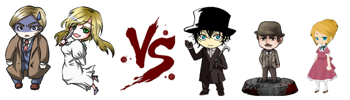
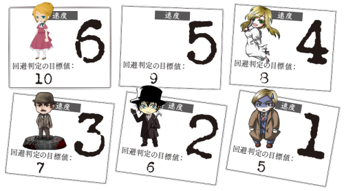
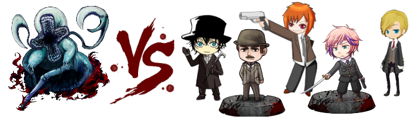
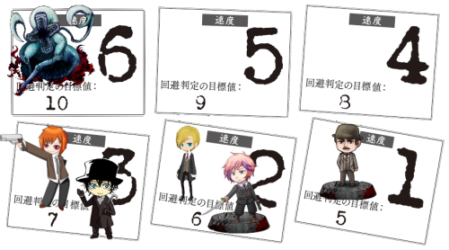

Misty Night Nightmare
PLAYER
- GM／陸亜
- PC1／ロッド＝ロックウェル／コトナ キャラシ
- PC2／ジミー・ウォレスン(Jimmy Wolleasn)／蟹 キャラシ
- PC3／レオナード・グレイ（Leonard=Gray）／オレット キャラシ
- PC4／フレデリク・テイラー（Frederic Taylor）／にゃご キャラシ
- PC4／チャールズ・ハンプソン（Charles Hampson）／さみどり キャラシ
INDEX
◆今回予告
夜霧に紛れて銀光が煌めく時、今宵も悲鳴が木霊する。
街の暗闇を瓦斯の灯が払っても、心の暗黒はまだそこにある。
売春婦の凄惨な惨殺事件。
それは『切り裂きジャック』の名で呼ばれ、倫敦中にその悪名を轟かせていた。
だがその真実は紐解かれることなく、闇の中へと消えることになる。
はたして、真実はどこにあったのか。
それは常識と科学で解決できるものだったのか……。
マルチジャンル・ホラーRPG「インセイン」
Misty Night Nightmare
Who killed Cock Robin?（誰が駒鳥を殺したのか？）
I,said the Sparrow.（それは私と雀が言った）
◆導入フェイズ ～シーン１ PC4：フレデリク・テイラー～
▲
時は1888年。所はイギリス、ロンドンの端にある街――イーストエンド。
ロンドンでも最も貧しい地域と言われていたそこは、食肉工場があり、その排水による異臭が漂っていました。
その水を飲み水としていたくらいなので、疫病が蔓延するのもこの地域と言われていたくらいです。
飢饉に追われたアイルランド人や、宗教迫害に追われたユダヤ人が大量に住み着き、一帯はスラムと化していたのです。
男たちは工場のリンで頭が禿げ、女たちは道端で春を売ってはジンに溺れていきました。
そんな地域であればこそ、殺人事件は謂わば日常的なものでした。
強欲な娼婦が殺されることも、そう珍しいものではなかったのです。
そのため。同年8月末、一人の娼婦が殺害されたからといって、警察は特に驚きもしなかったのです。
犯人もどうせ、すぐに捕まるだろう――そう、高をくくっていたのです。
最初の事件から、2箇月と少し。
11月になり、寒さが厳しくなり始めた頃。
一向に捕まらない犯人は、新たな犯罪に手を染めたのでした。
【GM】
スコットランドヤード。ロンドン警視庁本部であるその場所の、とある一角にて。
椅子に腰掛け、机の上に新聞を広げる、一人の若い警官の姿がありました。
【GM】
フレデリク・テイラー。24歳の男性警官である貴方が眺めているのは、新聞に大きく書かれた一枚の記事でした。
｢GHASTLY MURDER IN THE EAST-END｣――イーストエンドの恐ろしい殺人鬼。
いつの間にやら「切り裂きジャック」の名を付けられたその殺人犯は、分かっているだけでも既に5件の殺人を犯しています。
犯行の手口はメスのような刃物で喉を掻き切って殺害した後、身体をバラバラにしてその一部を取り去るという極めて残酷なものです。
更に三件目の殺人直前、新聞に自身の犯行声明文を投書して世間の注目を集めました。
【GM】
そんな切り裂きジャックを、スコットランドヤードの警官たちが血眼で追うのは当然とも言えました。
【GM】
けれど、フレデリク――フレッドには、他の警官とは違う、特別な理由があったのでしょう。
メアリー･ジェイン･ケリー。
中年の娼婦ばかりが犠牲になっていた一連の事件の中で、彼女は唯一25歳という若さでその生命を絶たれました。
5日前の11月9日、自宅で殺害された彼女は、それまでの被害者と比べてもなお凄惨と言うほかない殺され方をしたのです。
「喉元を深く切り裂かれて、首がもげかけている。両乳房は切り取られて、左腕は首と同様に皮一枚で胴体に繋がっている状態だ。」
「鼻は削がれ、額の皮は剥かれ、大腿は脛まで裂かれてめくれている。」
「腹部は縦に切り裂かれて、内臓が抜かれて空洞になっており、肝臓は両脚の間に置かれていた。」
「剥がされた皮膚や切り取られた乳房、鼻などはテーブルの上に積み上げられ、片手は腹の中に押し込まれていた。」
【GM】
これが翌日に報道された新聞による内容です。新聞記者がこれだけ把握できるくらいですから、関係者のショックはいかほどだったのでしょう。
…そう、例えば彼女に片想いをしていた青年であれば。
【フレデリク・テイラー】
一通り記事を読み終わると、読んでいた新聞をぐしゃっとしてしまい、そういえば私物じゃなかったとわたわた拡げたりしてます。それから、 「……、どうしてこんなことになっちまったんだ」 と、俯いてしまいます。
【GM】
私物じゃないよ。なので、後ろから苦笑交じりにフレッド君を呼ぶ声がします。
【警部】
「こら、気持ちは分かるがそれも重要な資料なんだよ、フレッド」
フレッド君の先輩というか上司かな。名前？ お好きにどうぞ（
【フレデリク・テイラー】
「…わかってますよ。でも、外部の新聞記事なんてなくても、全部オレらは知ってる内容じゃないッスか…」
名前どうしよう。表振る？？
【警部】
「違いない。「引きずり出された腸が額縁に飾られていた」ことまでは掲載されていなかったようだね」 いいよ笑
【フレデリク・テイラー】
「…本当、犯人の奴も趣味が悪いッスよねえ… どういうセンスしてるんだか」 思い出して吐きそうな顔してます。
【警部】
「さあね、理解したくもないな。ともあれ私たちがすべきことは、これ以上犯罪が起こることを阻止することだ」
【GM】
そう言って、彼は手にしていた包みをフレッド君に差し出します。
【フレデリク・テイラー】
「…そうッスね。今日も街の見回りに…」 と立ち上がろうとしたところに何か渡されるんですか？
何だかわからないけどとりあえず受け取りますよ。
【警部】
「現場にあった、遺留物の一つだ。私は中身を改めたから、君も時間がある時にしてみるといい」
【警部】
「持ち歩いても構わない「ことにした」が、扱いには十分に気を付けるように」 たぶんちょっと口を利いたとかそんな。
【フレデリク・テイラー】
「……失くさないようにしろってことッスね」 頷いてから
「りょーかいしました」 あんまおっきくないなら鞄かポケットにしまっておこう
【GM】
ポッケには入らないかな。鞄なら。今は中身見なくていいです？
【フレデリク・テイラー】
見てもいいなら見ますけど会話の流れ的にぼっちになってから見るのが自然かなと（上司と別れたら確認したいです
【GM】
了解しました。では街の見回りに行くんだっけね、警部は気を付けてって手を振りつつ見送ってくれますよ。
【フレデリク・テイラー】
巡査はひたすら何時間も担当地区を歩き続けるのが仕事ですからね。オレンジの皮とか拾いつつね。
では見送られるなら中身を改めようと思います。
【GM】
はい。ではスコットランドヤードを出て、ちょっと暗い路地裏にでも行くといいよ。
【GM】
くたびれた布に包まれたそれは――一本の「ナイフ」でした。
【フレデリク・テイラー】
ほうほう、凶器かな… でも遺留物だからメアリーの方の持ち物かな
【GM】
どうでしょうね。ともあれこれは「プライズ」としてフレッド君の持ち物になります。HOを開示しますね。
●ナイフ
プライズ。古めかしいデザインだが、手入れの行き届いたナイフ。
このプライズの持ち主は、このプライズの秘密を自由に閲覧してよい。
このプライズの持ち主から与えられたダメージで生命力が０になった場合、戦闘不能ではなく死亡となる。
ナイフの刃の部分には、小さな文字で｢Fragment of Feast｣と彫られている。
【フレデリク・テイラー】
ふむふむプライズなのですね。 あ、秘密見たいのでくださいGM
【GM】
はいよ。ではちょっと待ってね。
【フレデリク・テイラー】
確認しましたー
【GM】
プライズの【秘密】は持ち主であれば誰でも見られます。
また、内容を他のPCに伝えたい場合は同じシーンに登場している際に申告してください。
【フレデリク・テイラー】
了解しました。 メインフェイズで人殺しになれる素敵アイテムですね！
【GM】
というわけで。そんな「ナイフ」を手に入れつつ、フレッド君は街の見回りに出かけるのでした。
といったところでフレッド君の導入は終わります。お疲れ様でした。
◆導入フェイズ シーン２ PC5：チャールズ・ハンプソン
▲
【GM】
時はフレッド君が街の見回りに出掛けた頃。所は変わって、こちらはセントラルニューズ編集部。
【GM】
やはり椅子に腰掛け、机に新聞を広げる一人の若い男性…男性？の姿がありました。
【GM】
チャールズ・ハンプソン。26歳の新聞記者である貴方は、奇しくも先刻フレッド君が見ていたものと同じ記事を眺めています。
【GM】
ですが、その表情は彼とはうってかわって違うもの。悲壮さというより、むしろ喜びや達成感すら滲んでいるかもしれませんね。
それもそのはず、この記事を書いたその人物こそが貴方なのですから。
【GM】
切り裂きジャックの存在を世に知らしめた「Dear BOSS」からなる犯行声明も、貴方の手によって記事にされました。
そのかいあってか、この間のセントラル・ニューズの購読率は赤マル急上昇。編集長もゴキゲンです。
【チャールズ・ハンプソン】
紙面をチェックするのはもう何度目かはわかりませんが、内容は一語一句頭に入っていますしそれが何度でも問題はありません。口元に微笑みを浮かべて満足気に椅子に凭れましょう。男性？ 男性です。少なくとも格好は。
【チャールズ・ハンプソン】
世間様からは優男と言われたり、背は高い方ではないかもしれませんが。まあ、男性にしてはね。
【GM】
そんなチャールズ君の後ろから、やっぱり声をかけてくる人が居ます。こちらの様子も先刻の警部とはまるで違いますね。
【編集長】
「おう、トップ記者さんよ。調子はどうだ？」 こちらもチャールズ君の上司といえばそうなんでしょうね。編集長です。酒でも入ってんじゃねえかってカンジ。
【チャールズ・ハンプソン】
「見れば分かるでしょう、『親愛なる編集長殿』」ジャックの犯行声明の呼びかけをわざわざ引いて、にやっと笑います。そりゃもうゴキゲンです。
【チャールズ・ハンプソン】
「ロンドン中はこの話題で持ち切り。あなただって笑いが…」おや、とわざとらしく口を噤んで。「…いやまあ、大事ですからねえ。早く解決してほしい所ですが」
【編集長】
「ハッハ。一か月も音沙汰無かったと思ったが、これまた派手にやってくれたモンだなァ」 感心感心と頷きながら記事を覗き込んでますね。
【編集長】
「いやァ、俺たちとしちゃあ「善良な市民たちに危険を知らせる」って重要な仕事をさせてもらってはいるがなァ」 この楽しそうなこと
【編集長】
「ま、犯人が捕まってくれりゃあ、それもまたトップニュースになるってモンよ。そん時ゃ頼んだぜ」 と肩をポンとな。
【チャールズ・ハンプソン】
「僕のやり方には色々と前準備が必要でしてね。あなたの知らない所でもきっちり仕事はしてるんですよ」
【チャールズ・ハンプソン】
「それはもちろん。…スコットランドヤードの皆様方には勇往邁進して頂きませんと」ちょっと叩かれた肩をすくめて。捕まえるのはもちろん警察任せなのですが。
【編集長】
「成程、用意周到なこった。まァ、何つうかアレだ。見る奴等の目を引くような記事に出来るなら、多少の「盛り」は必要ってモンだ」 嘘を書けとは言ってないよ。うん。
【チャールズ・ハンプソン】
「市井の皆様は派手なことがお好きですからねえ。――自分が巻き込まれない限りは、特に」
【編集長】
「そういうこった。誰も彼も、自分が巻き込まれるなんざ、思いも寄らないのさ」
【チャールズ・ハンプソン】
ひとつ新聞をとんとんと指先で叩いて。「そろそろ続報が欲しい所だとは僕も思っているんですが。…また少し、追いかけてみましょうか」
【編集長】
「好奇心に殺されるなよ、子猫ちゃん。死ぬ前に、もう一件はデカいニュースを上げて貰わェとな
【チャールズ・ハンプソン】
「僕を何だと思ってるんです。…これまで上手くやってきたじゃないですか、もちろんこれからも」素性を知っている編集長に含みありげに。
【編集長】
「それもそうだ」 編集長はからから笑うと、 「そいじゃ、行って来いや」 と送り出してくれるんでしょうね。
【チャールズ・ハンプソン】
「転んでもただじゃ転びはしませんよ。…さて、じゃあ早速」 と外へ取材に出るような流れ、にしてしまっていいでしょうかね。あよかった。
【GM】
うん大丈夫よ。というわけで、チャールズ君の導入はここまでになるかな。お疲れ様でした！
◆導入フェイズ シーン３ PC1：ロッド＝ロックウェル＋PC2：ジミー・ウォレスン
▲
【GM】
チャールズ君がセントラル・ニューズを出た頃、今度は探偵ロッド＝ロックウェルのえーと…事務所？ とかあるのかな？笑
そんなところですたぶん。相棒の頼れるお医者さん、ジミー君もいるよ。
【GM】
自宅が兼事務所ならそこでしょうかね。いずれにせよ、二人（二人とも、もしくは片方）が、チャールズ君の書いた例の記事を見ている…といった場面です。
【ジミー・ウォレスン】
ロックウェル氏の事務所件、自宅に助手として足しげく通うのがジミーかなと。
【ジミー・ウォレスン】
正確にはジミーの住まいはお隣だけどうん。あと診療所は別の場所だろう。
【GM】
なるほど。そんなジミー君は今日も今日とてロッド君のところに来ていると。
GM：1d100 数が大きいほど有名：
Insane : (1D100) → 80
【GM】
なかなか有名みたいですよ、名実ともに名探偵ロッド＝ロックウェルだ。
【ジミー・ウォレスン】
なら件の事件のことも依頼の手紙が来てそうですね。
【GM】
そうですね。切り裂きジャックの犯行と思われるものは多くて20件と言いますし、そういった事件の被害者遺族からも依頼が来てるかもしれません。
【ジミー・ウォレスン】
助手が依頼の手紙整理しながら、「また例の切り裂き魔の依頼が来てるぞロックウェル！」これはやるしかないだろうと意気込んだ口調で話しかければいいかな
【ロッド＝ロックウェル】
「ありきたりな殺人事件ならボクが動くことは無い。警察に任せておけばいいだろうが…。」とロッドは新聞を広げて読んでいます。「連続切り裂き魔ね！なかなか面白そうだ！」と嬉しそうにしています。
【ジミー・ウォレスン】
「警察が走り回ってもこの有様なんだぞ。こういう時だからこそ我々が動くべきだろう」単純な善人なのでね。正義感で言います。
【ジミー・ウォレスン】
犠牲者が出ているのに面白いとは……と少し考えましたが、まあロッドなら仕方ないとやれやれと額に手を添えるだけにしよう。
【ロッド＝ロックウェル】
「いや、失敬。」ちょっと笑いました。「けれど、ボクが不謹慎だろうがサイコパスだろうが、事件を解決できたのなら世間はそれで御の字なのさー。」と新聞をたたむ。
【GM】
では、そんなお二人の元に、ぱたぱたと軽い足音が近付いてきます。
ほどなくして、部屋の扉が音を立ててノックされるでしょう。
【GM】
「先生！ 先生、いらっしゃるんでしょう？ 開けて！ 助けて！」 高い声は、年若い少女のものですね。どうしますか？
【ジミー・ウォレスン】
先生というと、医者のジミーの事になるのかな？ 自分に対してなら開けに行きます
【GM】
いえ、場所が場所ですからロッド君のことでしょうね。ロッド君の名声からしてジミー君も知られているでしょうが。
【GM】
扉を開ければ、その先では肩で息をする一人の少女の姿がありました。
【ロッド＝ロックウェル】
だれかに追われているんだろうか。ジミーがドアをあけるなら、探偵は窓から怪しい人影が無いかなどの確認をするよ！
【少女】
「あっ…」 少女はジミー君の姿に一度驚くも、 「貴方は確か、お医者様の…」 と言いながら部屋をきょろきょろしてロッド君を見つけるのかな。
【GM】
ロッド君が窓から外を眺めても、少女を追う人影とか怪しい気配はなさそうだと分かりますよ。
【ジミー・ウォレスン】
おっと失礼と両手を軽く挙げる反応。とびら開けて迎え入れようかね「ロックウェル！どうやら君にお客様だぞ」
【少女】
ジミー君に促されると、改めてロッド君に 「ロックウェル先生！ 助けて…こ、殺されたくない！」 とほとんど泣き顔で顔を覆います。
【ロッド＝ロックウェル】
「お嬢さん、そんなに慌ててどうしたんだね。」にこやかに落ち着くように話しかけます。他人に対しては英国紳士なのです。 「ジミー君、お茶。」とジミー君を顎で使いました。
【ジミー・ウォレスン】
ちょっとムッとしますが、女性が居る手前声を荒げる訳にはいかない。紳士的にお茶くみしに行きます。そして紅茶出します。
【少女】
目的の人物にこやかに話しかけられて、少し落ち着いたのでしょう。少女は小さくうなずきながら、目元をごしごしと擦ります。
【少女】
「ありがとう…」 ジミー君に紅茶を出されたらお礼を言ってひとくちいただきますね。 「…おいしい」
【ジミー・ウォレスン】
「うむ、それはよかった」ニコッとします。自分とついでにロックウェルにもお茶は淹れてあげよう。依頼人に威圧感与えないよう斜め位置に座りますね。
【少女】
少女はカップを置くと、もじもじしながら口を開きます。 「突然押しかけて、ごめんなさい。でも、居てもたってもいられなくて…手紙じゃあ、着くまでに時間がかかってしまうし…それに、読んでいただけるかも分からなかった、から」
【ロッド＝ロックウェル】
「ジミー君はちょっと顔が怖いが、彼の淹れる紅茶はロンドン一だよ。」と冗談っぽくいいます。「さて…殺されるとは物騒な話だね。いったいどういうことなのかボクに詳しく聞かせてくれないかい？」と話しを伺います。
【ジミー・ウォレスン】
山積みになってるだろう机の上の手紙を見てこの気まぐれ探偵のせいだが確かに…と頷くだろうに。
【少女】
こくりと頷くと、ロッド君が畳んだ新聞を見遣って 「…その記事、ご覧になったでしょう？ 切り裂きジャックが、新たな殺人をしたと…」 と続けます。
【少女】
「…それまでは、40代の女性ばかりが被害に遭っていたはず。なのに、今回は…」
【ロッド＝ロックウェル】
「ああ。…痛ましい事件だったね…。」と悲しそうな顔でロッド。
【ロッド＝ロックウェル】
「今回は【25歳の女性】が被害者と聞いている。君は…もしかして、【自分が次の被害者になるのではないか】という、確信でもあるのかね？」と尋ねます。
【少女】
「……っ、」 ロッド君の指摘に、少女はスカートをぎゅっと握りしめます。
【少女】
「…ご存知でしょう。被害に遭った女性たちが、生きるために何をしていた、のか」 つまり彼女も娼婦です。
【少女】
「わたしくらい、若ければ大丈夫だと…そう思っていた、のに」
【ロッド＝ロックウェル】
ふむ…と言った表情です。「なるほど。それで不安になった君はこのボクに助けを求めに来たということだな。」
【少女】
こくりと頷いて。 「お代は…ごめんなさい。わたしが持っているのは、自分の身体だけ…です、から」 まあツケといてくれよ（雑
【ジミー・ウォレスン】
「ロックウェル、彼女はここへ駆けつけてまで助けを求めに来たんだ。決めるのは君の判断だが、私は助けるべきだと思うが。」ジミーも英国紳士的な上から目線が入ってますがね
【ロッド＝ロックウェル】
少女にニコリと微笑みます。「安心したまえ。この事件は、ボクも本腰を入れて捜査を開始しようと思っていたとこだ。」
【少女】
「…！ ほ、本当ですか？！」 ちょっと腰が浮きかけそうになって慌てて座ります。 「よかったあ…」 と胸に手を合わせて。
【ロッド＝ロックウェル】
「困っているレディを放っておくわけにはいかないさ。それに。」とロッド。「ボクにとっては、事件こそが報酬なのでね。」にっと笑いました。
【少女】
ロッド君の言葉に目を瞬かせた後、ちょっとくすっとします。 「…本当に、評判の通りだわ！ 変わった先生、でも頼りにさせていただきますね」
【ジミー・ウォレスン】
理由は置いておいてそう来なくてはな！と頷きます。
【ロッド＝ロックウェル】
依頼人がいなくなって気配が完全に消えたのち。急に笑顔で立ち上がります。
【ロッド＝ロックウェル】
「やったーーー！これで大義名分ができたな！ああ、なにから始めよう！忙しくなるぞ！」ってジミー君の周りをくるくる回ります。
【ジミー・ウォレスン】
ロックウェルが５周回った辺りで「ローーーッド！！これはお祭りじゃないんだぞ！？」と少し怒るんでしょうね。
【ロッド＝ロックウェル】
「ああ…!分かっているさ。けれど退屈でボクがコカインなんかをやりだす前にこんな面白い依頼が舞い込んできて良かったじゃあないか。」とロッド。きっと怒られたことがあるのでしょう。ロッドの部屋には警察も手を焼く緊急を要する事件以外のお手紙は【面白いもの】【面白くないもの】で仕分けられています。きっと知っているのはジミーだけです。
【ジミー・ウォレスン】
頭を抱え「くれぐれも街中ではやってくれるなよ……」と辟易するジミーでターンエンドだ。
【GM】
では、名探偵ロッドと助手ジミーの二人が、依頼を果たすべく切り裂きジャック事件に立ち向かう…といったところで、導入を終えましょうか。
【GM】
お二人ともお疲れ様でした！
【ロッド＝ロックウェル】
はーい！ありがとうございました！
【ジミー・ウォレスン】
ありがとうございましたー！
◆導入フェイズ シーン４ PC3：レオナード＝グレー
▲
【GM】
名探偵ロッド君がくるくる回っている頃、場所は…イーストエンドのどこか。
【GM】
昼間だというのに薄暗く、霧が立ち込めている、人気のない一角。人や、そうでないものが潜むのにちょうどいい、そんな場所です。
【GM】
そこに呼び出された、一人の青年の姿がありました。
【レオナード=グレー】
僕の事ですね！慣れた様子で顔を上げて、呼び出した人の顔を確認しましょう
【GM】
レオナード＝グレー。23歳という若さですが、ロンドンを仕切るギャング「トッテナム」の構成員をしています。
【GM】
レニー君を呼び出したのは、トッテナムで「顔役」つまり渉内・渉外を務めるパイプ役みたいな男性です。
【GM】
本名は誰も知りませんが、「M」と呼ばれているようですね。そんな彼が、霧の中から音もなく現れます。
【顔役の男】
「よう、レニー坊や。生きてるか？」 彼はナイフを器用に回しながら、気軽に話しかけますね。
【レオナード=グレー】
「生きてますよーしぶとくねっ！こんにちはM、ご機嫌いかが？」雰囲気ぶち壊しの明るい声が響きます。
【顔役の男】
「指も揃ってるようで何よりだ。俺は兎も角、ボスの機嫌はすこぶる悪い」
【顔役の男】
「理由は分かるな？」
【レオナード=グレー】
ううん、やっぱりそうだよねーとばかりにしょんぼり。理由を聞かれれば
「あれでしょ、最近いろーんな所で噂になってるあれ」
【レオナード=グレー】
「ええと、名前なんだっけ…あぁ！切り裂きジャックとかいうやつ！」
【顔役の男】
「最近、また一つデカいのをやらかしただろう。セントラル・ニューズがやたら派手に取り上げてやがる」 と言って、例の記事をブン投げてくれるかもしれません。
【レオナード=グレー】
両手でよいしょっとキャッチ！見出しを見るまでもなく彼の記事でしょうね。読めってことだろうから読むよ！流し読みだけど
【顔役の男】
「お蔭さまで、ロンドン市民は恐怖に震え上がってるそうだ。その煽りが、良くも悪くもこっちにまで来やがってる」
【レオナード=グレー】
「あー、ね。迷惑しちゃうよなぁまったく…」と、10秒くらい読んで、飽きたので顔上げてため息つこう。
【顔役の男】
「正直、今の状況は俺たちにも良いモンじゃない。かといって、サツにパクられたら司法で裁かれるだろう」
【顔役の男】
「こういう莫迦は、司法なんて生温いモノに任せてられねぇんだよ。…分かるな？」
【レオナード=グレー】
だろうね、と頷いてます。で、いくらお馬鹿さんでもそう言われれば、分かるとばかりに二度くらいぶんぶんと首を縦に振って。
「僕にお任せあれーってね！ボスにも安心するように伝えておいてよ！」とにっこり
【顔役の男】
「悪いが、そいつは俺の眼鏡に適ってからだな」 あとは特に聞きたい事とかなければその場を後にするでしょうね。
【レオナード=グレー】
「えー…じゃあいいよ、先ずはMの眼鏡にかなうように頑張るもんねー。そしたら新しい銃貰えるかなー」とMさんちらり。
要するに何かこれを遂行するにあたって、新しい武器とか何かもらえないですかね？と駄目もとで聞いてみよう。
【顔役の男】
「まァ、他の奴に任せても良いんだがな」 が答です。
【レオナード=グレー】
ですよね知ってた。「やる！俺！やればできる子！」だからこの件は俺に任せてよとばかりに胸をはります。
ううん、後は無いし…そのまま手を振って見送ろうかな
【顔役の男】
「お前にはお前なりの強みがあるだろうが。それを使いこなせないような奴は勝手に死ね」 ひどいなお前
【レオナード=グレー】
「はぁーい…うん、僕くじけない…」
【顔役の男】
まあようはがんばれってことだよ（無茶） そんなMを見送ってもらいましょう。
【GM】
というわけでくじけず頑張れレニー坊や。導入はここまでにしましょうか、お疲れ様でした。
【GM】
全員の導入を終えましたので、PC1から順にハンドアウトの表面を貼ってってくださいな。
①PC1 ロッド＝ロックウェル（コトナ） 推奨：探偵
----
あなたはロンドンの闇を理性の光で照らす探偵だ。
そんなあなたを悩ませているのは「切り裂きジャック」事件。
何人もの人が死んでいるというのに、新聞はまるでショウのように囃したてる有様だ。
あなたの【使命】は、切り裂きジャックの正体を暴くことである。
【未公開の狂気:1】
【ロッド＝ロックウェル】
ロンドンを僕の理性の光で照らせるように頑張りたいと思います！
②PC2 HO
「ジミー・ウォレスン」：医者 (P：L蟹)
あなたは医者をしながら、PC1の助手のようなことをしている。
そのPC1が最近取り組んでいるのは、新聞を賑わせている「切り裂きジャック」事件。
被害者の外傷検分などはあなたも意見を求められたものだ。
あなたの【使命】は、PC1の使命の達成を助けることである。
【未公開の狂気:1】
PC3 推奨：ギャング
あなたはこのロンドンの下町を縄張りにするギャングのひとりだ。
しかし、最近はどうにもやりにくい。
例の事件のせいですっかり人通りが少なくなってしまったのだ。
あなたの【使命】は、大事なシマを荒らしたジャックとかいう奴を叩き出して二度と悪さができないようにすることである。
【未公開の狂気:1】
PC4 Frederic Taylor（フレデリク・テイラー）／PL：にゃご
推奨：警察
----
あなたはロンドン警視庁（スコットランド・ヤード）に所属する
「切り裂きジャック」事件を担当している警官だ。
新聞は好き勝手に煽り、ヤードの連中は無能と書き立てているが、
あなたのように朝も昼もなく働き続けている者もいる。
あなたの【使命】はロンドンに生きる人々に安心と安全を与えることである。
【未公開の狂気:1】
⑤PC5 チャールズ・ハンプソン（PL：さみどり）
推奨：記者
----
あなたはセントラル・ニュースで記事を書いている記者だ。
「切り裂きジャック」事件のおかげで新聞の売り上げは右肩上がり。
しかし、凄惨な事件とはいっても飽きられればそれで終わり。
そろそろ新しい展開が欲しいところだが。
あなたの【使命】はセンセーショナルな記事を書くことである。
【未公開の狂気:1】
【GM】
皆さんありがとうございました。
では、切り裂きジャック事件の解決に向けて頑張ってくださいましね。
【GM】
というわけで、ハンドアウトを一つ公開して、メインフェイズに移りましょう。
●切り裂きジャック事件
大手新聞社セントラル・ニュースを始め、各新聞社がこぞって報じる連続殺人事件。
ロンドン市民は夜の闇に怯え、夜間の外出が少なくなるほどのショックを与えている。
◆第１サイクル１シーン目 ――チャールズ・ハンプソン
▲
【GM】
ドラマシーンかな。シーン表「DVST」でどうぞ。
【チャールズ・ハンプソン】
DVST はーい。シーン表ふります
Insane : 暗黒のヴィクトリアシーン表(3) → 労働者達の集うパブ。
女給が運ぶエールやジンを、赤ら顔の男たちが飲み干している。
【GM】
ほうほう。記者の情報収集にはもってこいな場所ですねえ。
【チャールズ・ハンプソン】
ではパブで出くわした体で、レニーくんと感情を結びに。他PC登場はご自由にどうぞー
【GM】
了解ですよ。ではレニー君は支障無ければ登場してくださいな、他のPCについては任意です。
【GM】
ある程度RPしてからか、もしくは後付けできそうな特技ならその前でも感情判定はしてもらって構わないですよ。
【レオナード=グレー】
でも多分僕、チャールズ君のこと見たこと無いよね…
あれか、それらしき輩とわいわいお酒飲んでる所にちょうど来るのかな？
【GM】
まあモブい男たちが適当に声かけて巻き込んでくれるかもしれないよ。
【GM】
切り裂きジャックがどうこうとか言えば、それこそ話題に上がってるところなんで、
双方のことを教えてもらえるかもしれません。
【チャールズ・ハンプソン】
こちらからももしかしたら初対面かも？ ですね。
トッテナムのことは十分知ってる。そんなかんじで。
【GM】
うんうん。
トッテナム自体は大きな組織ですから、チャールズ君が別の人伝いで調べたりしたことなんかもあったかもしれません。
【チャールズ・ハンプソン】
ではそんな猥雑なパブの一角で、エールを頼んで少しだけ口を付けていましょう。
連れはいない。周囲の会話には聞き耳は立てている。
【レオナード=グレー】
うんまぁ、それっぽい人たちだけど一般市民かもしれない…！
僕も情報収集のためにお酒飲みながら色々な人と話してるよ。
【GM】
レニー君が先に来て切り裂きジャックの話をしながら飲んでいたところにチャールズ君が来たなら、
「ほらそこの坊主が」とか話してくれるよきっと。
【GM】
まあ判定自体は対話必須でもないんでね。あとは判定しやすいように演出してみてくださいな。
【チャールズ・ハンプソン】
喧騒の中にジャックの話題が聞こえれば、聞き耳を挟んでいくつもりは十分に。
【チャールズ・ハンプソン】
お、じゃあ、どこかからこちらに注意を向けるような声があったなら、
どうやら何か聞き込みをしているらしいレニーくんににっこりしましょう。
【GM】
そうだね。きっとチャールズ君がよく聞き込みさせてもらってるマスターとかが
「そいつが例の記事を書いたんだとよ」とか紹介してくれるかもね。
【レオナード=グレー】
にっこりされたなら、見ない顔だなーとか思いつつ手を振ろう。「金髪くんここ初めて？」って聞いたかも。
マスターの紹介を聞けば、3秒くらいフリーズして頭の上に豆電球浮かせよう。「あぁ！例の記事の！へぇー君がかぁ」
【チャールズ・ハンプソン】
「君も『例の事件』のことを調べているのかい？
…同業者じゃないだろうね」とねぶみ。アルトの声で。
【GM】
「相変わらず頭回るの遅いなーレニー坊やは」 とか言われてんだろうきっと。
【GM】
「いやいや、どう見てもこいつにそんな真似できそうにないだろ」 とかレニー坊や指してげらげら笑ってるよきっと。
【レオナード=グレー】
「同業？まっさかぁー僕そんなに賢そうに見える！？」とうれしそう。
マスターには文句言おう。反論はしない。
【レオナード=グレー】
酔ってるから机ばんばんするかも
【チャールズ・ハンプソン】
「そんな事を言ってくれるなよ。人を見かけで判断するもんじゃあないさ…まあ、ジャーナリスト…って風には見えないか」と周りのやりくちにも笑って。
【GM】
「見えない見えない。おい壊すんじゃねーぞ！」 とか軽くゴチンとします。どんな関係になるのかしらこの二人。
【チャールズ・ハンプソン】
そしてごそごそしてぴっと名刺を取り出しましょう。「もうご紹介にはあずかったけれど。僕はこういう者でね」
【GM】
「記者でも無きゃあ、もっとおキレイなところで飲んでてもいいからなァ」 とかマスターがうんうん言ってそう。目の保養なんだきっと。
【チャールズ・ハンプソン】
こいつに渡しちゃって大丈夫かなって一瞬止まるものの、惜しまない。セントラル・ニュース紙の名刺をレニーくんに渡す体で、まず居所をさしあげたいです
【レオナード=グレー】
「僕そんなに馬鹿力じゃないから大丈夫だよー」とへらり。名刺は……もらったことあるのかこの子（不安）
とりあえず受け取ろう。「チャールズくん。若いのにジャーナリストかぁ」大変そうだねぇと、のほほん。
【GM】
チャールズ→レオナードで居所譲渡了解です。
【チャールズ・ハンプソン】
多分いろんな所に取材でぶっこんでるので名刺の受け取り方なんかとがめたりしません！
【ロッド＝ロックウェル】
とりあえず探偵は【切り裂きジャック】の言葉を聞いて、近くの席で酒をあおりつつ今は聞き耳を立ててるという感じで。
ジミー君も一緒です。
【レオナード=グレー】
「あ、そだそだ僕名乗ってない。レオナード＝グレー！レニーって呼んでくれていいよー！」
【ジミー・ウォレスン】
同じく聞き耳たてますが、どっちかというと物騒な連中が多いので少し警戒気味かも知れません。
「ロックウェル、彼らなら知っていそうだぞ」と聞きに行くか提案
【チャールズ・ハンプソン】
「活気のある所は、そりゃあ僕は好きさ」マスターににっこりしつつ。
「僕はチャーリーで構わないよ」と握手の右手を差し出しましょう
【レオナード=グレー】
よろしくー！と握手に応じましょう。ぶんぶん。
【チャールズ・ハンプソン】
「君もジャックの事を探ってるんだろう？ いい話があったら、僕にも教えてくれよ。
…もちろん僕からも何か協力するさ、伝手があるからね」
【チャールズ・ハンプソン】
「ジャーナリストなんて若くて勇気がないと出来ない仕事だよ。
…もしかしたら君だって活躍すれば僕の新聞の一面に載るかも」
【チャールズ・ハンプソン】
（いい意味でならいいけどね）ってところは省きつつ。
そんな具合で、ジャーナリストアピールしつつ《メディア》で感情を結びたいのですがいかがでしょう
【GM】
良いですよ。判定どうぞどうぞ。
チャールズ・ハンプソン：2D6>=5 （判定：メディア）
Insane : (2D6>=5) → 5[2,3] → 5 → 成功
【レオナード=グレー】
いい話かーといわれてむむむと悩むよ。情報量はチャー君の方が持ってそうだからね。
でも一応この場で聞いた情報は渡してあげよう。大したことない事ばっかりだけれど。
「僕が知ってるのは大体記事に乗ってる事くらいー協力かー」新聞の一面に載るかもしれないって事でぐらぐらしてます。
【GM】
いちたりた。では双方「FT」どうぞ。
【チャールズ・ハンプソン】
あ、あぶっ こわっ！ FT振りますねー
【レオナード=グレー】
FT
Insane : 感情表(5) → 憧憬（プラス）／劣等感（マイナス）
【チャールズ・ハンプソン】
FT
Insane : 感情表(2) → 友情（プラス）／怒り（マイナス）
【チャールズ・ハンプソン】
「それをスタートに、ここからどれだけ探っていけるかが君の手腕さ。君は顔が広そうじゃないか」とレニーくんあげしましょう。友情で。
【レオナード=グレー】
ええ、と…僕からは憧憬取るのですが…ううむ。
とりあえず、そう言われたなら照れよう。で、
【レオナード=グレー】
そんな褒めてくれてるし、ジャーナリストってなんか良くわかんないけど、かっけぇ！…って感じで。感情結びます
【GM】
双方の感情について了解しました。
【チャールズ・ハンプソン】
にこにこして握手。かわい……割とちょろい…、なんて思ってな…思ってないんだからね。思ってるかも。
【GM】
これは思うだろ（真顔） マスターもきっと思いながら結ばれた友情？にお祝いでつまみくらい出してくれる。かも。
【レオナード=グレー】
チャールズくんよりお馬鹿さんだからね、そんな事思ってるなんて微塵も想像しないよ！
「ラッキー！ありがとマスター！」じゃあ出会いを祝してビールくらい奢りましょうか
【チャールズ・ハンプソン】
それでは、それとなくレニーくんの普段のお仕事などを聞き出したりしつつ、マスターにお礼を言って親睦を深めましょうか。
【GM】
はいな。では親睦を深めつつ、いっぽうそのころ…というわけでいったん〆ましょうか。お疲れ様。
【レオナード=グレー】
はーい！お疲れ様です
【チャールズ・ハンプソン】
はーい、ありがとうございますっ。お疲れさまですー
◆第１サイクル２シーン目 ――ロッド＝ロックウェル
▲
【GM】
名探偵ロッド君のシーンです。引き続きパブでのシーンにするのであれば「再訪」としますが宜しいですか？
【ロッド＝ロックウェル】
はいお願いします！
【GM】
はい。登場する人物は基本シーンPCのロッド君に一任されます。
NPCに関しては登場が可能かそうでないかをGMからお伝えします。PCについては当事者の任意ですね。
【GM】
「再訪」としてそのまま継続しているので、ジミー君やレニー君、チャーリー君もいるかなって感じですけど相違なければそれでどうでしょう。
【ジミー・ウォレスン】
居ないほうが不自然なので登場します
【ロッド＝ロックウェル】
シーンには自由にみなさんどうぞっ！今のところそんなイメージですね。
【GM】
はい。ではわいわいがやがや、野太い喧噪が飛び交うパブの中。名探偵はどうしましょう？
【レオナード=グレー】
はいほい、僕も居るでしょう
【チャールズ・ハンプソン】
はーい、大丈夫ですー。レニーくんとエール飲んで話してるところかな
【GM】
パブのマスターとか顔見知りっぽいですね。そしたら 「よっ名探偵！」 とか声かけてくれますよ。奢りはしない。
【ロッド＝ロックウェル】
ナッツをつまみつつジミー君にウインクしてそっちに寄って行こう。
【ロッド＝ロックウェル】
依頼人には英国紳士。でも逆にこういう場所ではゆるめに行く方が情報をもらえるというものですよ。噂のラリッた探偵の登場です。（）
【ジミー・ウォレスン】
ついていこう。慎重そんなに高くないので影に隠れそう。
【レオナード=グレー】
じゃあ知ってるだろうから手招きしよう「ロッドも居たんだ！こっちおいでよ、一緒に飲もうー」
【GM】
顔見知りの荒くれ者たちがぎゃんぎゃん声かけてくるかもしれませんがスルーでもブン殴って黙らせてもどちらでも。
【チャールズ・ハンプソン】
おやっ、と眉を上げて近寄ってくるロッドを見ましょう。「名探偵…？ ロッド＝ロックウェル…」
【チャールズ・ハンプソン】
あの名探偵と知り合いなんてやっぱこいつ人脈あんじゃん。ってレニー君の評価が１あがった。
【GM】
「おうおうお二人さんもお揃いで。ってーなるとやっぱりアレか？ 切り裂きジャックか？」 とか言いつつ注文されたら酒を注ぎます。されたら。
【レオナード=グレー】
「うんうん、そのロッド」とチャールズくんに頷くよ。まぁ、レニーにとっては名探偵というより…
【ロッド＝ロックウェル】
とりあえず感情を結びたいですね。…ではチャールズさん…とか…！（迷いに迷いつつ）女性って当てたいの（）
【GM】
なるほど了解です笑 RPしてからでも、先に判定でもどちらでもいいですよ。
【レオナード=グレー】
多分、ジミーさんの姿が見えたからあえてレニーからのイメージは口に出さない。空気読めるよ僕
【ロッド＝ロックウェル】
では【第六感】でチャールズさんと感情判定を結びたいと思います…！探偵らしく！
【チャールズ・ハンプソン】
それなりエールも回ってきたところで、「これはこれは、高名な名探偵どのとこんな所でお会いするとは」と軽く会釈などしたりしますが。
【GM】
はい笑 「2d6>=5 感情判定（第六感）：」 どうぞ。
【ロッド＝ロックウェル】
（もうしわけない（では振りますー！
ロッド＝ロックウェル：2d6>=5 感情判定（第六感）
Insane : (2D6>=5) → 6[1,5] → 6 → 成功
【GM】
良かったねえ。では双方「FT」どうぞ。
【ロッド＝ロックウェル】
ほっ
【チャールズ・ハンプソン】
FT
Insane : 感情表(2) → 友情（プラス）／怒り（マイナス）
【ロッド＝ロックウェル】
FT
Insane : 感情表(3) → 愛情（プラス）／妬み（マイナス）
【ロッド＝ロックウェル】
愛情…！男装…ふふふカワイイ！ってなったのだろうなあ…
【ロッド＝ロックウェル】
ではロッドは「これはこれは…初めまして。ロッド＝ロックウェルです。」と笑顔で帽子を脱ぎました。そしてじゃあ耳元でささやきます。
【ロッド＝ロックウェル】
「レディの前で帽子を被ったままなど…失礼いたしました。」ニコっと。
【チャールズ・ハンプソン】
「ああ、失敬。僕はこういう――」と名刺を取り出してロッドに渡そうとした所で、囁きかけられた言葉に止まる。
【GM】
はい、ではチャーリー君の感情を決める前に、ひとつ処理を挟みましょうか。
チャールズ・ハンプソン：「……――さすが名探偵殿だ。何から何までご存知のよう」とちょっと笑ってですね、えーとまず、GMさまー。はい。
【GM】
はい。トリガー引いたので【狂気】発動です。こちらで内容を貼りましょう。
【PC4・狂気顕在化】
狂気：異言
トリガー：自分が感情判定の目標になる。
あなたは、大宇宙の残酷な真実を知っている。これをみんなに話したいのだが…。
この【狂気】が顕在化したシーンに登場している自分以外のＰＣ全員が、
知識の分野からランダムに特技１つを選び、恐怖判定を行う。
【GM】
適応はシーンに登場していないフレッド君と本人以外の三人です。恐怖判定は素敵なRPしてもらってからにしようかな。
【チャールズ・ハンプソン】
「一度あなたとはお話をしてみたいと思っていたんですよ」と、そんな言葉を皮切りに。ちょっとお酒で口が軽くなったりもしていたのかもしれません。ほぼ干されたエールをパブの止まり木へ置いて。
【チャールズ・ハンプソン】
「僕はヒューマニストなんです。この残酷な社会に生きる上では人びとは何かを隠しながらも信じるしかない。もちろん僕も例外ではありませんが。例えば神の言葉――キリストとは異なる自由主義的な信仰の、神、だとか」一息に。
【チャールズ・ハンプソン】
チャールズの育った家庭での教えを織り交ぜながらこうメニアックでレベル（）の高い話をつらつらと話しはじめましょう。ユニテリアン派はこの時代のイギリスでは少々胡散臭いと思われてたりしたりするかも。
【チャールズ・ハンプソン】
話している最中は他の人の反応も喧騒も何もかも遠く、完全に自分の世界に入りきってしまっている感じで！ ひとしきり喋り終えたあと、
【チャールズ・ハンプソン】
「――と言うわけなのですけれども」とロッドの反応を。そしてジミーさんとレニーくんにもにっこりしましょう。ふつうだよ！！
【GM】
そうだね！ 熱っぽく話したチャーリー君の周りでは、何やら異様に静まり返ったパブの連中がチャーリー君たちを見ています。
【GM】
そのうち、「お、おい昨日の聞いたか？」「ああ、そうそうそう言えばあの日…」とか何事もなかったかのように話し始めます。
ざわ…ざわ…と徐々に音や声が戻ってくるパブの中。
【GM】
それをダイレクトに受けてしまった三人は、チャーリー君の異質さにある種の恐怖を感じることでしょう。というわけで、
【GM】
★ロッド君、ジミー君、レニー君は「知識」で恐怖判定です。指定特技を決めましょう。
【GM】
TKT
Insane : 指定特技（知識）表(10) → 民俗学
【GM】
だそうで。各自判定どうぞ。全員振り終えたら処理を進めます。
レオナード=グレー：2D6>=7 （判定：夢）
Insane : (2D6>=7) → 5[1,4] → 5 → 失敗
ジミー・ウォレスン：2d6>=9 恐怖判定(民俗学)
Insane : (2D6>=9) → 7[1,6] → 7 → 失敗
ロッド＝ロックウェル：2d6>=10 恐怖判定（魔術）
Insane : (2D6>=10) → 9[4,5] → 9 → 失敗
【チャールズ・ハンプソン】
ではジミーさんにお守りを１つ使います。「そしてあなたが名探偵ロッドの助手？」あなたならお分かりになるでしょ、みたいな雰囲気。
【GM】
いいですよ。ではジミー君は同じ条件でもう一度振ってくださいな。
【ジミー・ウォレスン】
ありがとうございます！がんばれジミー
ジミー・ウォレスン：2d6>=9 恐怖判定(民俗学)ワンモア ワンモアチャンス お願いします
Insane : (2D6>=9) → 8[2,6] → 8 → 失敗
【ジミー・ウォレスン】
いちーーーーーーーーーーたりないいいいいいいいーーーー(崩れ落ちる)
【ロッド＝ロックウェル】
1足りないーーーーーーーーーーーーーーー
【GM】
こちらもいちたりないか。全員処理を済ませるのでちょっと待ってね。
【GM】
今回のセッションですが、山札は「16枚」となっています。つまり今3枚減って残り13枚だよ。
【GM】
はい。そしてそんなチャーリー君の「異言」により恐怖を感じた皆さんですが。
【GM】
その中で一人、自身が持つ狂気を顕在させてしまう人がいますね。
【ジミー・ウォレスン】
ハイ…
【PC2：狂気顕在化】
狂気：絶叫
トリガー：自分が恐怖判定に失敗する。
事件の恐怖があなたをさいなむ。また何かあれば、恐ろしい絶叫をあげてしまうだろう。
この【狂気】が顕在化したシーンに登場している自分以外のＰＣ全員が、
知覚の分野からランダムに特技１つを選び、恐怖判定を行う。
【GM】
というわけで絶叫RPどうぞ。
【ジミー・ウォレスン】
理解が及ばず、更に貴方なら理解できますよね？とチャールズ氏に促された時、その眼の奥が暗闇で蠢いているように見えてしまったのかもしれません。「な…なにを言っているんだ！？」大きな声を荒げます。一度は元の空気に戻りかけた店内が再び静まり返るんでしょうか。
【ジミー・ウォレスン】
「信じられるわけがないだろう！狂者の世迷い事を理解できるか！」
内心では少し信じてしまったのか、自分でそれを否定したそうに声を張り上げます。どことなく息が苦しい
【GM】
そうですね。ざわ…ざわ…となっていたはずのパブは再びしん、と静まり返ります。
よもやこんな紳士然とした人が絶叫するとか思わないじゃないですか。ビックリですよ。
【GM】
信じそうになったのを払拭したくてことさら叫ぶって感じですね。
いかにも正気を失いかけた人間がしそうな行為でいいですね。
【ジミー・ウォレスン】
引きつった呼吸をしながら叫んでます。思わず机を強く叩いてグラスを落とし割るかもしれません。
【ジミー・ウォレスン】
といった具合のおまいう狂者状態です。
【GM】
ガシャン！と大きな音が鳴り響き、近くに居た三人は彼の異常に戦くことでしょう。
これは良い狂気RP。では
【GM】
★ロッド君、レニー君、チャーリー君は「知覚」で恐怖判定。
指定特技を決めましょう。
【GM】
TPT
Insane : 指定特技（知覚）表(9) → 追跡
【GM】
各自判定をどうぞ。
レオナード=グレー：2D6>=7 （判定：怒り）
Insane : (2D6>=7) → 7[1,6] → 7 → 成功
チャールズ・ハンプソン：2D6>=8 追跡を代用判定（判定：驚き）
Insane : (2D6>=8) → 10[4,6] → 10 → 成功
ロッド＝ロックウェル：2d6>=7 恐怖判定（第六感）
Insane : (2D6>=7) → 4[2,2] → 4 → 失敗
【GM】
ではロッド君だけジミー君の絶叫により恐怖判定失敗、狂気カードの配布をしますので他の方も反応どうぞ。
【GM】
ジミー君の絶叫と割れたグラスの音で再びしんとなったパブですが、ぎこちないながらも喧噪を取り戻そうとします。一部の客は流石に店を出たでしょうが…。
【ジミー・ウォレスン】
グラス割ったあたりでマスターにどつかれたりしてハッとなってはダメでしょうか。
【GM】
いいよ。 「お、おいあんた！ しっかりしねぇか！」 ってどつくよ。ドンとな。
【レオナード=グレー】
チャールズ君にもびっくりするけど、ジミーさんが叫んだ事も乗っかってきて大混乱しています。チャールズ君に対しては、あれ、僕、こんな子知らないと青ざめてることでしょう。
【チャールズ・ハンプソン】
紳士だと思っていたら突然声を荒げるジミーさんに、驚き…はしましたが、突然怒鳴られることなんてこの仕事してるとしょっちゅうなので。へえ、と値踏みそのに。
【ジミー・ウォレスン】
ありがとうGM。ジミーも流石にどつかれれば気を取り戻せる。
キョロキョロ辺り見回し申し訳無さそうに帽子とってからチャールズ君に平謝りです。
「……すまない。自分の頭の気遣いのなさを許していただけないだろうか。」
【ロッド＝ロックウェル】
ロッドはジミーの絶叫に真顔になってしまいましたね。まさかジミーが！？といった様子でしょうか。
落ち着いてから…「驚いたよ…」と一言いう。
【チャールズ・ハンプソン】
「いえいえ。僕こそどうやら不躾な真似をしたようです」営業用っぽいスマイルをはりつけて、礼をするジミーさんに。「仕事柄、誰かの気分を害することもしばしばでしてね。こちらこそ申し訳ない、どうかお気になさらず」
【GM】
チャーリー君はロッド君への感情を決めた場合お知らせください。シーンの〆はロッド君はじめ皆さんの任意でどうぞ。
【チャールズ・ハンプソン】
「……詮索好きな名探偵に、肝っ玉の小さい助手ね」と、こっそり聞こえないように呟いておきましょう。
とりあえず、友情ではなさそう。怒りにします…。
【レオナード=グレー】
目をぱちくりさせて、状況の半分も分からないレニーは無意識に強張らせていた体の力を抜いてへらりと笑います。
「まー、うん。飲みなおそう！飲んで忘れちゃおう！」と暢気に宣言して僕は〆です。
【ジミー・ウォレスン】
多分聞こえないかな。「いやいや、せめて奢らせてくれ」とマスターに謝罪も込めて一番いいお酒頼みましょうかね。
私はこのシーン終了で大丈夫です。
【GM】
チャールズ→ロッドで「怒り」了解です。
【GM】
「おお、太っ腹だねえ先生。いやいや、これくらいココじゃあ日常茶飯事だ。そう気になさんな」 とマスターはジミーさんに言っておこう。
【チャールズ・ハンプソン】
まあ、それでも情報伝手は多い方がいいですし。
それからは営業用に切り替えて、そうだな、ロッドさんとジミーさんにもお詫びがてら名刺という名の居所をお渡ししておきます
【GM】
チャーリー→ロッド、ジミーへの「居所」譲渡も了解です。
【ジミー・ウォレスン】
名刺渡されたらこちらも渡し返しますね。居所をチャールズさんに渡せますか？
【GM】
できますよ。自分のものだろうが他人のものだろうが自由です笑
ジミー→チャールズへの「居所」譲渡了解です。
【チャールズ・ハンプソン】
談笑の体にしますが、ロッドさんとはなんとなく距離を取るかも。
こちらはそれでシーン終了で大丈夫です あっ居所はいただけるなら！
【GM】
無理もないな笑 あとはシーンPCのロッド君はいいかい？ いいならシーン〆ようね。
【ロッド＝ロックウェル】
ロッドは聞こえていただろうか。耳が良いからね…！
「いかん失敗だ」の顔をジミー君に一瞬しつつ、ロッドもここはにこやかに対応しよう。というわけで〆ます！
【GM】
はいな。長いシーンになりましたが皆お疲れ様だぜ。
◆第１サイクル３シーン目 ――フレデリク・テイラー
▲
【GM】
ドラマシーンだよね。場所を変えるならシーン表「DVST」どうぞ。
【フレデリク・テイラー】
この流れで入って行きたくないです！ シーン表振るよ！
DVST
Insane : 暗黒のヴィクトリアシーン表(6) → 人々でごったがえす、騒がしい通り。様々な噂話が飛び交っている。東洋人を初めとした、外国人の姿も目立つ。
【GM】
ほうほう。パブ…よりはどちらかといえば、スコットランドヤードの近くでいいんじゃないかな。
【フレデリク・テイラー】
ほうほう。これはあれだな、巡回中かな。
【GM】
巡回中でもいいよ。スコットランドヤードなら、そちらに足を向けたジミー君と出くわすような。何なら言い訳に上司をいくらでも使っていいぞ。
あと例の少女の扱い困ったら適当に預けてもいいです。というわけで口実はいくらでもどうとでもなる。
【フレデリク・テイラー】
ふむふむ。 少女は今どこにいるんだろう。 ジミーさんと一緒にいるなら声掛けできなくもないのか… でもかけてもらえるほうが自然なのかな（悩む
【ジミー・ウォレスン】
お金があるから少女にそれとなくたかられてるかもしれない。
【フレデリク・テイラー】
え、まさにこれから売春しようと商売しているシーンにしか見えない
【ジミー・ウォレスン】
帰り道とか問題ないとこ通ってるか教えてもらってるとかでもいいし。
【GM】
たかってもいいよ。じゃあおいしそうなお菓子売ってるお店あたりで
【ジミー・ウォレスン】
流石に娼婦は買いません！！純愛がすきなんです！
【少女】
「ねえ、ウォレスン先生！ あれは何？ わたし、あれを食べてみたいわ！」 春売るどころじゃないなお前
【フレデリク・テイラー】
職務質問案件かと思った（ それなら微笑ましいな、父娘かなって 「こんにちは」っていい笑顔で横通り過ぎかける だめだ
【少女】
「明るい時間に、こんなに人がたくさんいるところに来るのは久しぶり！」 とかきゃっきゃしてるから警官通り過ぎたらぺこっとしますよ。笑顔で。
【GM】
でもあれかな、若い女の子で娼婦ってくらいだから香水くらい…してなさそうだけど…してるかもだし…ほらひとめぼれの彼女に似てるとかさ
【ジミー・ウォレスン】
「む？ まああれくらいであれば……じゃない！ 例の通り魔事件の事情を知っていそうな友人に合わせてくれるから私は来たんだぞ！」かなあ。
【フレデリク・テイラー】
警官にやさしく対応してくれる少女あたたかい！ （メアリーくらいかな…）って微笑ましくてつい手とか振ればいいの？
【ジミー・ウォレスン】
これなら引っかからないフレデリク君？
【少女】
「あら、それならあそこにお巡りさんがいるじゃない」 って言いつつ娼婦だからほらちょっと後ろにかくれたい
【フレデリク・テイラー】
何か自分について話されてる気がするので 「何かお困りですか？」って近づこうかな 警官怖がられるなら帽子くらい取るさ。営業スマイルだよ。
【少女】
「あ…こ、こんにちは」 言いつつ遠慮がちにはにかむ感じな
【フレデリク・テイラー】
「こんにちは、お父さんとおでかけかな？」 この女子いくつなんだろう（読めない
【少女】
「おとっ…え、ええと。そうなの。ね、ダディ」 ってことにしましょ？ね？って笑顔（
【ジミー・ウォレスン】
帽子をとって挨拶しつつ。仕方ないから合わせよう「警察の方であれば確かに事情を知ってそうだ……実は彼女…あー娘が例の通り魔に狙われるかもと怯えておりまして。」
【少女】
こくんこくんと頷いて、 「だって…わ、若い女のひとも襲われたんでしょう…？」 とこれは真面目に不安そうな顔だな。
【ジミー・ウォレスン】
「なんでも女性ばかりを襲うそうではないですか。私も心配でしてね、対処できるならと情報を集めたく思っておりまして。やはり自分の足で調べた内容でないと信用できませんから。」
【フレデリク・テイラー】
「通り魔に…？ ええと、例の通り魔なら…家族がいるような娘さんには手を出さないかと思いますが」 だなこれ
【少女】
「本当に…？ でも、犯人は捕まっていないんでしょう？」 ▼少女 の うたがいのまなざし！
【ジミー・ウォレスン】
「ですが若い女性を狙ったとのことですし。」つつく 「ふむ、そうだ。警察の方と素早く連絡はできた方が得策でしょうな。申し遅れましたが私はこういうものでして…」と名刺渡して、居所伝えていいですか
【GM】
ジミー→フレデリクへの「居所」譲渡了解です。なお、少女の「居所」については同じシーンにいるPCが望めばお渡ししますよ。
【フレデリク・テイラー】
「…それは、まあ。 ただ、これまでの被害者の共通点は…その、…お父さん、そんなことさせていませんよね？」 とちょっと睨んでしまってから
【フレデリク・テイラー】
「あ、お医者様だったんッスね」 って名刺受け取ります。 わーい居場所！
【少女】
フレッド君が何を言わんとしているのは分かるので、ジミー君の裾をぐいぐいしつつ訴えのまなざし。
【ジミー・ウォレスン】
「誰が自分の娘にそんなことさせるんだ！！！」怒ります
【ジミー・ウォレスン】
「おっと、いや失敬。つい…」実の娘ってわけでもないけど、そう想われるのは嬉しくない。
【少女】
なんとも言えないおかお（） しつつもまあ深入りすまい。お口ミシン。
【フレデリク・テイラー】
「…ええと、自分はホワイトチャペル管区の担当をしている巡査ッス」
身分証的なのあるなら見せるけどこの時代あるんだろうか
【GM】
あるんじゃないかな証明できるようなものは。その辺はニュアンスでいいですよ（GMも詳しくは知らん）
【フレデリク・テイラー】
「…大丈夫だとは思いますが、娘さんが心配なのはわかるので…巡回中は気にするようにしておきますよ。オレも、まさかあんなことになるとは思わなかったし…決め付けはよくないッスからね」
【フレデリク・テイラー】
（あ、身分証提示で居所渡してるつもりでした！ すみません！
【GM】
あ、はい笑 フレデリク→ジミーで居所譲渡ね。了解です。
【少女】
「…犯人、捕まるの？ もう、誰も殺されたりしない…？」 と不安そうにダディに捕まってます（
【ジミー・ウォレスン】
「うむ、市民の頼りは警察だからな。テイラー君のように無碍にせず気にしてくれる警官が居ると分かるのは嬉しいことだ」単純な善人だから
【ジミー・ウォレスン】
「あー……そうだなフィリア」ぎこちなく手をウロウロさせてから頭なでたり家族を装います。
【フレデリク・テイラー】
「…ああ、必ずオレが捕まえて見せるから。大丈夫だ」 って少女に安心させるように笑いかけたい 思うところはある
【少女】
なでられたら嬉しそうにはにかんでますね。確かにこう見ればとても娼婦には見えないっぽい。
【フレデリク・テイラー】
ええまあ娼婦だとはとても思えない状況なのでそこまで心配してないですよ 良い父娘じゃないか！
【少女】
「…ええ！ じゃあ、頑張ってねお巡りさん！」 ぱっと明るい顔をしましょう。
フレデリク・テイラー：うん、好奇心分野じゃねえなと思いつつ、ぼちぼち《笑い》あたりで判定していいですかGM
【GM】
いいんじゃないかな。判定どうぞ！
フレデリク・テイラー：2D6>=5 感情判定《笑い》：
Insane : (2D6>=5) → 11[5,6] → 11 → 成功
【GM】
良い出目。双方「FT」どうぞ。
【ジミー・ウォレスン】
FT
Insane : 感情表(5) → 憧憬（プラス）／劣等感（マイナス）
【フレデリク・テイラー】
FT
Insane : 感情表(1) → 共感（プラス）／不信（マイナス）
【フレデリク・テイラー】
家族を大事に思う気持ちはわかるよ、ってことで「共感」で取りますよ
【ジミー・ウォレスン】
警察官という正義の代理人的な存在へのあこがれだろうか。憧憬でお願いします。
【GM】
双方の感情了解しました。あとはフレッド君の好きなタイミングで〆ていいよ。
【ジミー・ウォレスン】
「(とても実は売春婦とは思えない 女性とは恐ろしい)」紳士服の下は変な汗かいているのだ。あ！成功おめ！！
【フレデリク・テイラー】
「二人共いい一日を。オレは巡回に戻りますね」 って笑顔で手を振って別れる、
が自然じゃなかろうか（用件は聞いたつもりになってる
【GM】
いいんじゃないかな、では二人と別れて〆ましょう。お疲れ様でした。
＊＊＊おまけ
【少女】
「流れでついダディって呼んじゃったけど、結婚してないの？」 とか根掘り葉掘り聞き出しかねない。紅茶のみたい。
【ジミー・ウォレスン】
「勘違いするな！婚約者がいたんだぞ！」ティーカップカシャンッ！させながらやや慌てる過去形
【少女】
「あら、まあ…ええと、その、ごめんなさい？」 だなこれ過去形なのわかったら（
◆第１サイクル４シーン目 ――レオナルド＝グレー
▲
【GM】
では再訪でなければシーン表「DVST」どうぞ。
【レオナード=グレー】
はい振ります！
【レオナード=グレー】
DVST
Insane : 暗黒のヴィクトリアシーン表(4) → 血の香りの漂う場所。ここで何があったのだろうか……。
【GM】
何があったんでしょうねえ。
【レオナード=グレー】
ええと、そうだな何があったかというよりも、何かしたんじゃないかな…
探偵さんに会いにいきたかったのに…！
【GM】
何かしたのか笑 ジミー君娘とやんやしてたし、単独になったロッド君と出くわしてもいいんじゃないかな？
【GM】
チャーリー君はちょっとロッド君と一緒にいるって考えにくいので（） これは二人でのシーンになるっぽいかしら。
【レオナード=グレー】
ほら、一応ギャングだから目的のためには手段選ばないだろうし…ちょっと非協力的な人に肉体言語で聞いてたんじゃないかな（遠い目）
そんな場所ロッドさん通ります…？
【GM】
割とバイオレンスだったね？ロッド君は別にどこ通ってても不思議じゃなさそうだけど。煙突でも通れそう。
【GM】
ともあれロッド君は出られそうなら出てきてあげていいんじゃないかな。警官でもないから無理に咎めることもない。
【GM】
（ジミー君居たら全力で咎めてそうだしちょうどよかったとすら思うかも）
【レオナード=グレー】
（それね）
【ロッド＝ロックウェル】
ギャング同士のこう、いざこざ的な物であれば「ん？」って顔はするけど普通に通り過ぎるし話しかけてくるよ。
【レオナード=グレー】
あ、じゃあレニーの相手はチャンス！とばかりに逃げ出そうとするのでしょう。仕方ないから見逃してあげよう。
通りかかったロッドさんには、
【レオナード=グレー】
「あれれ、まさかこんな所で会うとは！」と声かけよう
【ロッド＝ロックウェル】
「相変わらず物騒な会話してるね。」とロッド。
【レオナード=グレー】
「物騒？そうかな？まぁお仕事だからねー。あぁ、汚いもの見せちゃってごめんね！でも、会いに行こうと思ってたから調度良かったや！」
【レオナード=グレー】
「君の事務所分かりにくいんだよー地図付きの名刺とかないの？」とたずねてみよう。迷子になりそうだったから居場所ほしいな！
【ロッド＝ロックウェル】
「ま、ボクの場合、もっとスマートだけど。」と情報の取り方について笑う。そして居場所はいいよ！事務所は公開されているしね。あと「ボクに？」と聞き返す。
【GM】
ロッド→レオナードへの「居所」譲渡了解です。
【レオナード=グレー】
わぁいありがとう！ＧＭもありがとうございます。
「そうそう、ロッドに。ほら少し騒ぎがあったから、聞こうと思ってたこと聞けてなくてさー。切り裂きジャックについて何か知らない？」と、ニコニコ。
【レオナード=グレー】
とまぁ、ＲＰはとりあえずこの辺りで。ずっと笑いながらロッドくんとしゃべっているので、『笑い』で感情が結びたいです！
【GM】
ふむ、いいでしょう。判定どうぞ。
レオナード=グレー：2D6>=6 （判定：我慢）
Insane : (2D6>=6) → 9[4,5] → 9 → 成功
【GM】
では双方「FT」どうぞ。
【ロッド＝ロックウェル】
FT
Insane : 感情表(6) → 狂信（プラス）／殺意（マイナス）
【レオナード=グレー】
FT
Insane : 感情表(3) → 愛情（プラス）／妬み（マイナス）
【レオナード=グレー】
仕方ない、本来の目的は捨て置こう…
じゃあ、名声もあり頭も良くって人気者だから妬みの種がもともとレニーの中にあったのでしょう。
それが芽吹いちゃったんですね
【GM】
成程納得わかりやすい。「妬み」で把握しました。
【ロッド＝ロックウェル】
話し合いの結果…うん！分かりました！
じゃあこっちは狂信です。理由もあります。
【GM】
了解です。では処理を挟みましょうね。
【GM】
ロッド君の「狂信」の、その理由です。ええ。
【GM】
トリガーを引いたため、狂気を顕在化させます。では、
【PC1・狂気顕在化】
狂気：フェティッシュ
トリガー：自分が感情判定の目標になる。
内容：あなたは人造物への偏愛に目覚める。この新しい愛の形をみんなにも知って欲しい。
この【狂気】が顕在化したシーンに登場している自分以外のＰＣ全員が、
技術の分野からランダムに特技１つを選び、恐怖判定を行う。
【GM】
実にいい感じの組み合わせでしたので「狂信」でいいのではないかなと。
というわけで、素敵な発狂RPを期待しております。どうぞ。
【ロッド＝ロックウェル】
「……いいねえ！」と探偵。
「もしかして、ボクが教えないっていったら…ボクにも力づくで聞いてたのかな…？
…裏社会の型にはまってないそういうトコロ、ボク大好きだよ！」と言い出しました。
【レオナード=グレー】
「んー…どうだろうね？ロッドは力づくで聞かれたいの？」
一瞬真顔に戻って、けれどいつものへらりとした笑い方で首を傾げましょう。
（暴力振るわれたい、とか？いやまさかね）とか思ってます
【レオナード=グレー】
言い表せない何かが、ロッドの眼に声色に宿っていそうなのが感じ取れて。
冷たいものが背中を伝いますが、気にしないふりしてます。
「いつものロッドらしくもない」と付け加えましょう。
【ロッド＝ロックウェル】
「いつだって倫理を振りかざしてボクのコトを否定する癖に、結局は正義や手段の為にボクなんかに頼らなくっちゃいけない人達の縋る様な目…。
それって最高だと思わないか？ キミも…」と言いかけましたが…もう少しは落ち着いてもいいのかな？？(笑)
【GM】
いいよ。もう十分恐怖判定せざるを得ないレベルだよ！！！笑
【ロッド＝ロックウェル】
よかった…！
【GM】
★レニー君は「技術」で恐怖判定です。指定特技を決めますね。
【GM】
TST
Insane : 指定特技（技術）表(5) → 薬品
レオナード=グレー：2D6>=5 （判定：薬品）
Insane : (2D6>=5) → 5[1,4] → 5 → 成功
【GM】
ちぇー。ではちょっとビビったくらいでいいですよ。レスポンスRPどうぞ。
【レオナード=グレー】
うん、なんだかロッドさんの奥深い一部の何かが見えてびびってましたが、もう通常営業ですよ。
「へぇ、君ってそんな事思ってるんだねー怖い！」ちょっとふざけた言い方します。いや怖かったけどさ
【ロッド＝ロックウェル】
怯えを感じてしまったのでしょう。 ロッドらしくもなくちょっと戸惑った顔をしました。
「…いや、本当はボクだって…、……。」と何か言いかけましたが「ゴホン。」とわざとらしく咳払いして空気を変えに来ました。
【レオナード=グレー】
空気読める子なので、あえて言葉の先は促さないよ。
どうしてこうなっちゃったんだろう？ と首を傾げて、まぁいいやと開き直ります。
「なーんか、ごめんね？また出直すよ」手をひらひら振って去ろうかなぁ
【ロッド＝ロックウェル】
「いやいや。そうそう切り裂きジャックね。うんうん。良かったらボクも情報が欲しいから、また頼むよ。」
とついでに居場所こっちも貰いたかったけどこの空気大爆笑。
【GM】
そうだね！ もうこの状況アレだしここでスパッと〆ておこうか！笑 お疲れ様。
【ロッド＝ロックウェル】
はい！
◆第１サイクル５シーン目 ――ジミー・ウォレスン
▲
【GM】
再訪ならどこかを指定、もしくはシーン表「DVST」どうぞ。
【ジミー・ウォレスン】
こんな狂気うずまいてる場所にジミーがいけると思えません！シーン表ふります
【ジミー・ウォレスン】
DVST
Insane : 暗黒のヴィクトリアシーン表(8) → 静まり返った部屋の中。ここならば、何をしても余計な詮索はされないだろう。
【GM】
あら落ち着いた感じ。どんなシーンにしましょうかね。
【ジミー・ウォレスン】
変な詮索されないっていうと、事務所が浮かぶけどどうなんだろう
【GM】
でしょうねえ。あとはすること次第かな、調査なら事務所で問題ないでしょう。
【GM】
PCやNPCの登場についても希望あればどうぞ。勿論ぼっちでもいいですよ。
【ジミー・ウォレスン】
ひとりで上手く情報処理できるのかちょっと心配だから、素直に相棒の探偵に手伝え！しようかと。
【ジミー・ウォレスン】
ロッド君大丈夫ですかね。さっき狂気すごかったけど
【GM】
今先ほどギャングに迫ってたあの人ですかね？ 人違いだったらすみません。
【GM】
本人が良ければいいですよ笑
【ジミー・ウォレスン】
あ、その迷探偵です
【ロッド＝ロックウェル】
人違い…？名探偵といえばロンドンに広しと言えどこの僕のことであり…はい！
【GM】
じゃああれかな。ジミー君はフィリア連れて戻ってきて、ロッド君はくるくる回りながら戻ってきたと。
【ジミー・ウォレスン】
町をフィリアちゃんと散策しつつ、自分の足で集めた情報をまとめてるのかなあと。事件について調べたいです。
【GM】
フィリアは疲れたーってベッドかソファでも借りてｽﾔｧするか、まあ書類整理くらいならお手伝いもできますが、その辺は適当に適当に。
【ジミー・ウォレスン】
折角だからフィリアちゃんにも手伝ってもらおう。奢ったんだしこれくらいやろうね。
【GM】
うん、それくらいのお手伝いだったら文句も言わずに素直にやりますよ。自分が依頼してることでもありますしね。
【ジミー・ウォレスン】
あと事務仕事できるようになれば、売春婦しなくても済むようになるかもしれないからね。慣れようね
【少女】
ダディ…
【GM】
こほん。では調査判定にはどんな特技を使いましょう？
【ジミー・ウォレスン】
切り裂き魔で死人も出てますし、死体に何か共通点的な、自分が殺したぞと示すような名残がないか、できれば＜切断＞、もしくは＜医学＞で調べられないでしょうか。
【ロッド＝ロックウェル】
「足で稼いだ情報はゼロだ。」ソファーに寝そべってたけど立ち上がる。「仕方ない。まずは資料からだ。」とジミーにくっついとこ。
【少女】
「先生、これはどっちに置いたらいいの？」 と名探偵と一緒にジミー君の周りちょこまかしてます。
【GM】
そうですねえ、死体という観点なら《医学》の方が無難かな。ロールどうぞ。
ジミー・ウォレスン：2D6>=5 （判定：医学）
Insane : (2D6>=5) → 10[4,6] → 10 → 成功
【GM】
成功ですね、では「切り裂きジャック事件」の【秘密】を公開します。拡散情報だよ。
【ジミー・ウォレスン】
「あとで片付ければいいから見やすい位置にー」とフィリアちゃんには言ったりしてよう。
○切り裂きジャック事件
秘密――ショック：なし
拡散情報。
警察の必死の捜査により、札付きの悪党であるPC3をはじめ、すでに何人かの容疑者の名前が挙がっている。
「ジェイムズ・メイブリク」「ジョン・ウィリアムズ」のハンドアウトを公開する。
【ジミー・ウォレスン】
ロッドは多分最初に説教してる。効果ないの知ってるけどうん。そして情報だ！わーい！
【GM】
続いて、新しく二枚のハンドアウトを呈示しますね。
●ジェイムズ・メイブリク
木綿商人。
最近素晴らしいナイフを手に入れて自慢していたらしい。
また、「切り裂きジャック事件」の３週間程前に、事件現場のすぐ近くに部屋を借りている。
●ジョン・ウィリアムズ
外科医。
いくつかの事件ではアリバイがあるのだが、もっとも高度な外科医療知識を必要とする
メアリー・ジェイン・ケリー事件当日のアリバイはない。
【GM】
ということです。新聞や捜査記録など、これまでの事件について調べる…というか整理したらこんな感じで改めて容疑者が浮上したと。
【ロッド＝ロックウェル】
「んん…？」容疑者のなまえをすっと目で追う。
「ほうほう、もっと彼に詰め寄っておけばよかったかな？？…とはいえ怪しいのはこっちのヤツらか。」勿論ジミーにあの狂気は言わないのだ。
【ジミー・ウォレスン】
「店であった時は気さくそうな青年だったが……」
探偵の言葉には既に彼に探りをいれていただと！？と驚いてます。単純です
【少女】
「この人たちの誰かが、切り裂きジャックかもしれないってこと…？」 こわいこわい
【ジミー・ウォレスン】
あと今更だけど、探偵直ぐにどっかいって心配だから、こっちの居所渡して、そっちの居所もよこせしていいですか。
【GM】
探偵の居所よこせについては探偵が許可すれば。ジミー→探偵はOKです。
【ジミー・ウォレスン】
こわいこわいしてるフィリアちゃんも単純に心配なので居所貰えます？付け回すわけじゃない！ただ紳士として心配なだけだ！！
【ロッド＝ロックウェル】
「ボクのこと…心配してくれるんだね…！」とカワイイ冗談をいう３２歳。
普通に戻って笑って「ハイ」しますとも。こっちも少女の欲しいな！
【GM】
いいよ別にフィリアは全然投げますよ笑 二人とも少女の「居所」獲得ですね。探偵→ジミー君へも了解です。
【ジミー・ウォレスン】
「常に一緒にいれるわけではないからな。困ったら頼りなさい」とNPCだけど居所渡すようなこともしておこう。
二人共ありがとう！
【GM】
いいですよ、ジミー→フィリアに「居所」ですね。頼りになるダディ。
【少女】
「…分かったわ。でも、先生たちも気を付けてね？」 これ先生ってジミー君のことだろ自然にこれ
【ジミー・ウォレスン】
「これでも元軍人だ。そう簡単にやられはせんぞ！」ドヤってます。
【少女】
「軍人？」 へええって顔して興味津々な顔をするのか。お話聞きたーいってしてそうなので適当にあしらってね。
【ロッド＝ロックウェル】
「呼べばボクかジミー君、どちらか必ず駆けつけよう！」と言っておきます。
【ジミー・ウォレスン】
二人とはなしつつ、容疑者が浮かんだところで、それでもどこか飄々としてる名探偵みつつ
「まだまだ先は長そうだ。」とやれやれしてよう。
【ジミー・ウォレスン】
ってところで〆てどうぞ！
【GM】
はい！ ダディ頼りにしてる。フィリアもGMも。お疲れ様でした！
【GM】
1サイクル目が終了します。長いような短いような一日が終わり、イーストエンドは霧の夜に包まれます…。
しかし、その夜切り裂きジャックが現れることはありません。まあ5日前に現れたばかりといえばそうですしね。
【GM】
人々の不安は増すことも減ることもなく、水気を増した霧のようにイーストエンドを覆うことでしょう。
やがて朝となり、霧は晴れますが…人々の不安は晴れることなく、欝々とした気配ばかりが残ります。
◆第２サイクル１シーン目 ――チャールズ・ハンプソン
▲
【GM】
再訪か、シーン表でしたら「DVST」どうぞ。
【チャールズ・ハンプソン】
シーン表振ります。情報判定予定ですが、ちょっとシーン表次第でどちらにするかは考えさせてくださいませー
【チャールズ・ハンプソン】
DVST
Insane : 暗黒のヴィクトリアシーン表(10) → 書物の溢れる場所。調べ物をするにはもってこいだが。
【GM】
ふむ。どうしましょうか？
【チャールズ・ハンプソン】
もだもだして申し訳ない。それでは外科医のジョン・ウィリアムズを調査します。セントラル・ニュース社の資料室あたりが順当ですかしら。
【GM】
ですねえ。容疑者として浮上するし、アリバイうんぬんの話が出てるレベルですから、新聞社の資料室でも十分でしょう。
【チャールズ・ハンプソン】
ひとりで調べます。何かあるなら被害が少ないほうが…と思ってたりしなくもない（
【GM】
はい。一人じゃない方がよかったってこともたまにありますのでPLの任意で結構ですよ。
まあどうしても出たい！！ってPCいれば応相談で。
【チャールズ・ハンプソン】
出づらい場所設定かなということもあるので、出たいようでしたらもちろん！ なんとかして迎えにいったりします！
【チャールズ・ハンプソン】
というわけで、資料室です。最近よく引っぱり出される機会が多いのか、資料室は結構整頓されていない雰囲気。
【GM】
でしょうねえ。まあ古い資料もありますから、ほこりっぽさとかはあるかもしれません。古い紙のにおい。
【チャールズ・ハンプソン】
その資料室の中の、切り裂きジャックに関する情報を――特に怪しいとされている外科医、ジョン・ウィリアムズの情報について。
【チャールズ・ハンプソン】
改めてその資料を整理する、ということで、《整理》で情報判定してもよろしいでしょうか
【GM】
が順当かなと。判定どうぞ。
チャールズ・ハンプソン：2D6>=5 （判定：整理）
Insane : (2D6>=5) → 6[2,4] → 6 → 成功
【チャールズ・ハンプソン】
よしよし。万が一を思って得意分野にしたけどよかった。
【GM】
成功ですね。では情報をお渡しします。拡散ではありませんので、感情共有できるお二人は希望があれば宣言してください。
【レオナード=グレー】
はい！見たいです
【ロッド＝ロックウェル】
ください！
【GM】
分かりました笑 では三人にお渡ししますので少々お待ちを。
【チャールズ・ハンプソン】
「外科医――ね」ウィリアムズ医師の書類や聞き込み情報などを眺めながら。「そりゃ、普通の人間があんな真似をできるとは思えない。思わないだろうし。 出生、経歴、縁故…」
【チャールズ・ハンプソン】
と、書類を指先で辿っているその時チャーリーに電流走る。秘密確認しました！
【GM】
渡し終えました。では、新しいHOを呈示します。
●リジー・ウィリアムズ
医師であるジョン・ウィリアムズの妻。
仕事に忙しい夫を支える良き妻である。
【GM】
はい。電撃が走ったチャーリー君、そのうちロッド君やレニー君にも知らせるのかもしれません。
【チャールズ・ハンプソン】
「リジー・ウィリアムズ…」彼の名前に併記された女性の名前に気付いて。
ふむむ。するとメッセンジャボーイやら走らせるでしょうね。
【GM】
片やギャング、片や探偵ですからね。それぞれにある方向から頼ろうとしてもおかしくはないかもしれません。
【チャールズ・ハンプソン】
はい、きっちりお二人には伝えましたよ。迷探偵にはちょっと癪ですけど、能力は認めてますから。
【チャールズ・ハンプソン】
少し片付いた資料室を眺めて、「…忙しくなりそうだなあ」とどこか面白そうに呟きましょう。
そんなところでシーンはしめてしまって大丈夫です！
【GM】
使えるものは何でも使って、ともあれ大事なのはスクープ記事を書くことですからね。記者さんファイト。お疲れ様でした。
◆第２サイクル２シーン目 ――レオナード＝グレー
▲
【GM】
では再訪か「DVST」どうぞ。
【レオナード=グレー】
はーい シーン表振ります。
【レオナード=グレー】
DVST
Insane : 暗黒のヴィクトリアシーン表(7) → 霧深い街角。
ガス灯の明かりだけが、石畳を照らし出している。
【GM】
こっそりお話するにはよさそうね。一緒にシーンに出てほしい人とかあればどうぞ。
【レオナード=グレー】
おぉ、ロンドンらしい。そしたらそうですねぇ。とりあえずはフレッド君にお願いしたいです
【GM】
いいですよ。情報共有や問い詰めRPなどお好きにどうぞ笑
【フレデリク・テイラー】
はいはーい お邪魔しましょうか 呼び出されたのかな？
【レオナード=グレー】
問い詰めＲＰｗｗ
とりあえずレニー君は町をふらふら歩いていますよ。…何か一個だけ装飾が派手そうなガス灯の前に幼馴染君を呼び出そう！
【レオナード=グレー】
訪ねに行く前に、少しでも何か情報持ってないかなーって感じで声かけてるはずです。…自分が容疑者の一人だとも知らずに
【フレデリク・テイラー】
「一人でほっつき歩くのは危ないんじゃねーの…まあ、お前なら大丈夫か」 とかぼやきつつ、では呼ばれて待ち合わせ場所に向かいましょう。
【レオナード=グレー】
お茶目な合流をしたいお年頃。肩とんとん、って叩いて人差し指スタンバイしよう。引っかかるかな、わくわく。
【GM】
したけりゃ判定してもいいですよ。「choice[気付いた,気付かなかった]」とか。
【フレデリク・テイラー】
そのままサーベル突きつけたりしても良かったですがでは判定
フレデリク・テイラー：choice[気付いた,気付かなかった]]
Insane : (CHOICE[気付いた,気付かなかった]]) → 気付かなかった]
【フレデリク・テイラー】
「何…、む」 じゃあむにっとされます
【レオナード=グレー】
やった！女神様ありがと！「ひーっかかった！」と楽しそうに笑ってます。サーベル突きつけられても文句言えない
「久しぶりーっていっても、この前の飲みからそんなに経ってないっけかー」
【フレデリク・テイラー】
「…それ、知人以外にはやるんじゃねーぞ」 ひっかかってまあ一緒に笑うくらいでいいですよ 気張ってたけどちょっとガス抜けたんでないかな
【レオナード=グレー】
「分かってるって。ってよりも、お前以外にやらないよ」少し力抜けてくれたならレニーも嬉しい。
最初はパブの話でもするのかな軽く。笑い話にして。……で、笑い声が霧に飲み込まれて数秒後。
【レオナード=グレー】
「まぁ、こんなバカ話をするために呼んだんじゃないんだけどな。単刀直入にいうけど、切り裂きジャックについて何か小さな情報でもいい。知ってる事ないか？」
って聞きます。簡単には教えてくれなさそうだけど！
【フレデリク・テイラー】
「……お前もその事件について、調べてんのか」 振られたらとたんにこちらも真顔にはなりそうですね
【レオナード=グレー】
「んー、まぁ、ね。」頼まれ事というか仕事というか…という感じでごにょごにょ。馬鹿正直なんで今までに知った秘密…つまりジョンの秘密を話すかな。
【フレデリク・テイラー】
「……、レニー、お前その事件の容疑者として挙げられてんぞ」 問い詰めようと思ってたけど先に聞かれたので一応違うのかな？ 違って欲しいなになりますかね。
【GM】
ジョンの【秘密】をフレッド君に伝える、でいいかな。
【レオナード=グレー】
「えっ、マジで！？」と全力で驚こう。そして自分の立ち位置考えると仕方なしか、と苦笑い。
それで大丈夫ですＧＭ
【GM】
分かりました。では伝えておきましょう、そのことを踏まえて説明するといいかな。
【フレデリク・テイラー】
「…違ってんなら良いけどよ」 ちょっとホッとしたような気もする
【フレデリク・テイラー】
「…なるほど、そんなことになってたのか」 情報共有受けました
【レオナード=グレー】
俺はあんな残忍な殺し方しないしなーとか思ってる。口には出さないで、ほっぺた掻いてるけれど。
「というか、犯人だったらのこのことフレッドに会いに来ないだろ」
そして情報共有のため喋って
【レオナード=グレー】
「奥さんの方はロッドか誰かが調べるんじゃないかな。で、俺はもう一人の方を調べに行こうってわけ。」
あんまり乗り気じゃなさそうな感じで告げます。
【フレデリク・テイラー】
「…まあ、それもそうか。お前、馬鹿だもんな」と頷いてから
「オレが知ってるのはこれくらいだ」ってナイフ見せます
「こいつが、メアリーの…５日前殺された被害者の部屋から見つかったらしい」 見せるだけで渡しません。
秘密受け渡しお願いしますGM
【GM】
了解しました。ナイフの【秘密】をレニー君に渡します。
【レオナード=グレー】
「馬鹿とか言うなよー間違ってないけど」
【GM】
所持者はフレッド君のままで了解しています。【秘密】はお渡ししました。
【フレデリク・テイラー】
「…まあ、違うならいい。あんま危ねーことはすんなよ」 と言ってから小声で
「メアリーに続いてお前にまで何かあったらオレは…」とか言ってればいいよ
【レオナード=グレー】
はい、情報いただきました。ちょっと、ナイフをジーット見つめよう。
「フレッドこそ、な。僕だってそんな『もしも』を考えるのは嫌だからな」自分の頭をがしがし掻いて。
「ほら、俺は頭空っぽだけど死線潜り抜けるのは得意だからっ！大丈夫だって！」にししと笑いましょう。さて
【レオナード=グレー】
「さーて、そろそろ行くかな。」仕事中だったら邪魔して悪かったな！って告げて別れましょうかね
【GM】
あ、別れてぼっちかな？ それともフリだろうか笑 フレッド君はどうします？
【フレデリク・テイラー】
「そう…だな。 また何か分かったら連絡するわ。気を付けろよ」
一人で行くノリっぽいのでこれは肩でもぽんってして巡回続きじゃないかなｗ
【レオナード=グレー】
あ、このタイミングで居場所の交換したいのですが。フレッド君が連絡くれるって言ってるし！
フレデリク・テイラー：あ、うん。居場所交換こちらもOKです GM的に間に合うなら
【GM】
いいですよ別に笑 居所交換了解です。
【レオナード=グレー】
ありがとうございます！じゃ、手をぶんぶか振ろう。
「こっちも何か進展あったら連絡するなー！」
【レオナード=グレー】
そんな感じでやっとこさ調査に行きますよ。
【GM】
了解です。そのままぼっちでいい感じかな。具体的にはどう調査します？
【レオナード=グレー】
はい、ぼっちで調査します。ええと、どうしようかな
【レオナード=グレー】
じゃあ、これはどうだろう。レニーはとある酒場に着きます。宿屋兼ねてるようなところ。
少し頑張りすぎたなーと欠伸をしながら、ジェイムズの情報を思い出します。そうしている間にもうとうと、ウトウト。
いつの間にか夢の世界へ。正夢を見るという形で、『夢』での判定でどうでしょうか！
【GM】
ちょっと厳しいかな（真顔）
【レオナード=グレー】
ですよね。じゃあ仕方無い。目覚めて目的地に行って、お話し合いという名の軽い拷問をしましょう（諦めた）
【GM】
うん。ごめんぶっちゃけると《拷問》も状況的にできません。
【レオナード=グレー】
うおー了解しました別の方法考えます…！
【レオナード=グレー】
じゃあ、お言葉に甘えてそうさせてもらおう。ジェイムズさんの痕跡を追跡したいです
【GM】
目標値7になりますがそれで宜しければ。
【レオナード=グレー】
いけると信じてる…！怒りで代用判定します
【GM】
どうぞー。
レオナード=グレー：2D6>=7 （判定：怒り）
Insane : (2D6>=7) → 9[4,5] → 9 → 成功
【GM】
成功ですね。ではジェイムズの【秘密】を呈示します。拡散情報だよ。
○ジェイムズ・メイブリク
秘密――ショック：最初に調査判定をしたPC
拡散情報。
調査を行ったPCは、ジェイムズの死体を発見する。
同じシーンに登場しているPCは、《切断》で恐怖判定を行うこと。
また、最初に調査判定を行ったPCは、「ナイフ」を獲得する。
妻である「フローレンス・メイブリク」のハンドアウトを公開すること。
【GM】
ショックの適応です。レニー君は【正気度】を1点減らしてください。
【GM】
続いて恐怖判定。《切断》でどうぞ。
【レオナード=グレー】
我慢で代用判定します
レオナード=グレー：2D6>=7 （判定：我慢）
Insane : (2D6>=7) → 7[3,4] → 7 → 成功
【GM】
成功ですね。では続いて「ナイフ」のハンドアウトを呈示します。
●ナイフ2
プライズ。古めかしいデザインだが、手入れの行き届いたナイフ。
このプライズの持ち主は、このプライズの秘密を自由に閲覧してよい。
このプライズの持ち主から与えられたダメージで生命力が0になった場合、戦闘不能ではなく死亡となる。
ナイフの刃の部分には、小さな文字で｢Fragment of Crimson｣と彫られている。
【GM】
所持者はレニー君になります。【秘密】の呈示希望あればいつでも対応します。
【レオナード=グレー】
はい。見たいですＧＭ…
【レオナード=グレー】
はい、情報受け取りました。
【GM】
はい。ではそれを含めてRPありましたらどうぞ。
【レオナード=グレー】
死体は見慣れてるだろうから、そこまでショックは受けません。ナイフを拾って様々な角度から見つめた後所持します。
「あー…まさか死んでるとはなぁ…」まいった。
【GM】
まいったねえ。では若干忘れかけてたけど奥さんのHOです。
●フローレンス・メイブリク
ジェイムズ・メイブリクの妻。
夫が殺され、未亡人となってしまった。
【GM】
というわけで未亡人になった奥さんです。人妻が二人並んだところで後はどうしましょうかね。
【レオナード=グレー】
奥さんの存在は写真か何かで見つけたのかなぁ。
ううん、普通ｌだったら警察案件なんだけど……ギャングが呼んでいいもの？
【レオナード=グレー】
（そもそも真っ先に疑われるだろうこれ）
【GM】
写真でもいいと思うよ。ギャングが警察呼ぶのは状況によるんじゃないかな…苦笑
どのみち他の人がそのうち見つけますよ。奥さんとかね。
【レオナード=グレー】
なるほど。じゃあ死体を横目に退散しようかな。…なるべく人目につかない道を選んで。〆です。
【GM】
では、こっそり帰りましょう。お疲れ様でした。
◆第２サイクル３シーン目 ――フレデリク・テイラー
▲
【GM】
再訪でさっきお話してた場所でもいいし、シーン表「DVST」でもどちらでも。
【フレデリク・テイラー】
パブとか行きたくないのでさっきのあたりで
（再訪でお願いします
【GM】
せやな。
【GM】
ではレニー君と別れて、ゆるりと巡回しているフレッド君…かな？
【フレデリク・テイラー】
「…しかし、こうして見てる限りはいつもどおり、何も起きねえんだけどなあ」 とかぼやきつつ巡回してるんですよきっと
【GM】
そうですねえ。いつも通り霧が濃いめ、臭いはきつくて空気はあんまり綺麗じゃないですが…
それでも、フレッド君が見慣れたイーストエンドの街並みです。
【フレデリク・テイラー】
ぶらぶらしてるのでレニー君に来て欲しいですね
【レオナード=グレー】
息を切らして来た道戻ってるよ！ダッシュで。見つけられたら叫ぶかな。「フレッド！！！！」
【フレデリク・テイラー】
「レニー？ そんなに息切らせてどうした… まさかジャックでも見付けたのか？！」
【レオナード=グレー】
「っは……はぁっ！……ジェイムズのっ………屋敷！！…っ……死んでた……！」
途切れ途切れに、でも珍しく分かりやすく伝えようとしてるよ。
【フレデリク・テイラー】
「…ッ、マジかよ？！」
じゃあさっきの拡散情報伝えてもらえる感じなんですかね ナイフの存在も聞けるのかな
【GM】
いいですよ。二本目のナイフの【秘密】に関しては、レニー君がOKなら伝えます。譲渡するかは任意ですね。
【レオナード=グレー】
はい。秘密は伝えますけどあげません！
【GM】
分かりました。ナイフは双方持っている形ですね、【秘密】をお伝えします。
【フレデリク・テイラー】
わーい！秘密だけください 見比べてみる感じなのかな
【レオナード=グレー】
死体の傍にこんなのがって、見せるのでしょう。二人で見比べよう。
【GM】
見比べましたね。というわけで、どうしましょうか。
【レオナード=グレー】
とりあえず僕はナイフ仕舞って息を整えよう。ぜぇはぁ…
【フレデリク・テイラー】
「…そうか。 …しかし、メアリーのときと同じナイフがあったなんて…やっぱりジャックの犯行なのか？」
上司に連絡した方がいいだろうかと思ったけどナイフ押収されそうだな 共有しました
【フレデリク・テイラー】
「とりあえず、奥さんの処へ向かってみるか…お前も一緒に行くか？」 ぼっちでもいいですが
【レオナード=グレー】
「………わかん、ねぇ。」
漸くそこで落ち着いて、頷こう。同行しますよ！
【GM】
了解しました。では、お二人でメイブリク家…か、もしくは奥さんのいる場所かな。
現場自宅ならいっそ自宅で待ってた方がいんでない？笑
【フレデリク・テイラー】
ああうん、せやな。現場保持もしたほうがいいし自宅だったなら戻る方向か笑
【GM】
うん。奥さんはそのうち帰ってきたよってことで玄関先で出迎えてあげる分にはいんでない笑
【レオナード=グレー】
戻るなら微妙な顔してフレッドくんの後ろ歩こう。本当なら見たくも見せたくもないものだしねぇ。
【フレデリク・テイラー】
勝手にお邪魔してしまってすみません…ここで事件があったとの通報を受けまして…実は旦那様が… と伝える役ですね。
【GM】
まあそうですねえ。という訳で、奥さんこんな人です。
【フローレンス・メイブリク】
「…あら、警察の方…？」
【フローレンス・メイブリク】
「私…か、夫にでしょうか。何か、御用でも？」
【フレデリク・テイラー】
「はい、自分はホワイトチャペル管区担当のテイラーと申します」 と自己紹介しましょう。
そして「通報を受けまして…」からの文につなげてくれよ！
【フローレンス・メイブリク】
「はあ…ご苦労さまです」 とふかぶかお辞儀をした後、続けられた言葉に 「え、」 と声を詰まらせます。
【フローレンス・メイブリク】
「…夫が？ 何故…そんな、」
【フレデリク・テイラー】
「…心中お察しします。…犯人は必ず、警察が突き止めますので」
【フローレンス・メイブリク】
「…分かりました。宜しくお願いいたします…」 と頭を再び下げつつ。
【フレデリク・テイラー】
「…自分も、先日連日殺人鬼の奴に…想い人を殺されたところですので、その痛みは理解できるつもりです。
…よろしければ、旦那様について、お話をきかせて頂いてもよろしいですか？
犯人を一刻もはやく見つけ出すために、ご協力願えますと幸いです」とかなんとか言いくるめロールしつつ、
《痛み》で調査判定したいな！
【GM】
言いくるめロールにちょっと圧倒されたGM。痛みOKですよ、ロールどうぞ。
フレデリク・テイラー：2D6>=5 調査判定《痛み》：
Insane : (2D6>=5) → 11[5,6] → 11 → 成功
【GM】
良い出目。ではフローレンスの【秘密】です。拡散ではありません。
ジミー君は感情共有できますので、希望ありましたらどうぞ。
【フレデリク・テイラー】
正気度１減りました
【GM】
お渡ししました。とりあえずフレッド君はショック適応ですね。他の処理はありません。
【フレデリク・テイラー】
（…何だこの女？）って困惑してる うーん…
【GM】
フレッド君の素敵な言いくるめロールに、彼女は仄かにほほ笑むんでしょうね。
【フローレンス・メイブリク】
「そうですね。私からお話できることは…あまり多くはありませんが。お力になれるのでしたら」
【フレデリク・テイラー】
「…ご協力、感謝します」 いい予感がしない が、しばらく会話かなこれ
【フローレンス・メイブリク】
まあ夫についていくらか説明した後、 「あとは…あまり参考には、ならないかもしれませんが」
【レオナード=グレー】
困惑している幼馴染の様子に首を傾げましょう。奥さんのお話は大人しく聞いてるよ。
【フローレンス・メイブリク】
「地下に、書庫がありますの。主に私が使っていたもので、夫はあまり出入りしていませんでしたが…」
【フローレンス・メイブリク】
「事件の参考になりましたら、幸いですわ」 ほほえみましょう。
【フレデリク・テイラー】
「…中に入ってもよろしいのでしたら。 …ありがとうございます」
【GM】
というわけで、新しいHOを呈示します。
●メイブリクの書庫
秘密裏に作り上げられた書庫。
フローレンスが頻繁に出入りしているらしいが……。
【ジミー・ウォレスン】
感情共有でフレデリク君が取得した情報をジミーに流してほしいです。
【GM】
了解しました。感情共有なので、フレッド君に拒否権はありませんし判定は不要です。お渡ししますね。
【GM】
お渡ししました。ジミー君もショック適応になるため、【正気度】を1点減らしてくださいね。
【ジミー・ウォレスン】
はーい！正気度6→5です。
【GM】
まあ後で聞かせてもらう流れなんでしょうかね。
あと取得チャンスがあるのは目星持ちのロッド君ですが…どうします？
【ロッド＝ロックウェル】
こわいけど知ることを拒否して探偵はやってられないな！ええい！目星お願いします！
【GM】
分かりました笑 指定特技を宣言してダイスロールをどうぞ。
【ロッド＝ロックウェル】
第六感の目星でいきますー！
【GM】
どうぞ。
ロッド＝ロックウェル：2d6>=5 第六感（目星）
Insane : (2D6>=5) → 7[1,6] → 7 → 成功
【GM】
では成功なので、【秘密】をお渡ししますね。これ合流時に教える流れなのかな実際は笑
【GM】
ショックは同様に適応です。【正気度】1点減らしてくださいね。
【ロッド＝ロックウェル】
正気度-1です。
【GM】
では概ね処理も終えましたし、あとはフレッド君とりあえずここ後にする？かな？笑
【フレデリク・テイラー】
混乱した頭で話をしてある程度情報メモったら礼を言って、レニーくんをひっぱって後にしますよ。
近場で警備してる警官仲間に死体について伝えて、自分は上司に伝えに行くのかな…
【GM】
そうですね、ともあれ一旦メイブリク家を出ましょうか。
【レオナード=グレー】
あ、じゃあひっぱられるがままに。
【フローレンス・メイブリク】
「お気をつけて」 ってほほえみながら手を振ってくれるよきっと。
【レオナード=グレー】
何も知らないから暢気に振りかえしておこう。
【フレデリク・テイラー】
「…お邪魔しました。ご協力ありがとうございます」 ぺこりして
なんとなく扉しまったらレニー君の耳でも引っ張っておこう
【レオナード=グレー】
「い、痛い！フレッド痛い！！」
【GM】
耳引っ張るのｗ そんな風に見送られたところで〆ましょうか。お疲れ様。
【GM】
マスターシーンです。登場するのはフレッド君とレニー君ですね。
ちょうど今のシーンの直後、メイブリク家を後にして路地を歩いているところでしょうか。
【フレデリク・テイラー】
はーい。さっきの話とかしつつ一緒に歩いているんじゃないでしょうか
【GM】
レニー君の耳引っ張ってちょっと歩いて、まあ笑いながら放したりなんかして、並んでまた歩き出して。
【レオナード=グレー】
ですかね。「なんだよー何かおかしいぞ？」とか言いながらも特に問い詰めないで歩いてるのかな。
【GM】
ゆらめく霧の中を。歩くフレッド君は、誰かの声に気付きます。
誰かがしきりにフレッド君に語り掛けてきます。訴えるかのように。強く。強く。
【フレデリク・テイラー】
「…ん？」 おや？
【レオナード=グレー】
「フレッド？どうした？」
誰の声か知っている。知っているけれど、誰の声だろう。声は続きます。フレッド君に何かを強いるように。
促されて？ それとも自ら？ 判断もつかぬまま、フレッド君の右手が何かを掴みます。
包みに隠されていたもの。震える指先が（勝手に？）それを開いて、（自分で？）柄を、握って。
握って。じっとりと滲む汗が。ぬめりながらも古ぼけた皮を捉えて。
――せ
声が。
――刺せ
――刺せ。刺せ。刺してしまえ。刺して、そう
――血を。真っ赤な血を。
――血を。この身に、さあ
声が声が声が声が声が。
声が？ ――なんだ、この声は
自分の声じゃないか。
誰のものとも、自分のものともつかない声に促されるように、フレッド君は握ったナイフを流れるように向けるでしょう。
あどけないとすら言えよう表情を見せる、貴方の幼馴染へと。
彼がどんな表情をするかなんて、おかまいなし。だって、声が。
声が言っているじゃないか。
刺せと。
【GM】
フレッド君のナイフは、吸い込まれるようにしてレニー君の身体へと。
GM：choice[顔,腕,胸,腹,足]
Insane : (CHOICE[顔,腕,胸,腹,足]) → 胸
【GM】
胸だそうで。大丈夫死にはしません。
【GM】
これにより、レニー君は2点のダメージを受けてください。そして――
【フレデリク・テイラー】
「…は、」
【GM】
声が途切れ、フレッド君ははっと我に返ります。
【GM】
目の前には、前触れもなく刺された幼馴染の姿。
【レオナード=グレー】
「………フ、レッド……？」そのまま倒れるのかな。
【GM】
手にしたナイフは彼の胸に吸い込まれており、手には真っ赤な血が。
【GM】
そう、血が。
【GM】
血が、貴方に秘められた欲求を呼び起こす。
【GM】
トリガーを引いたので、【狂気】を顕在化します。
【PC4・狂気顕在化】
狂気：血への渇望
トリガー：自分が誰かにダメージを与える。
あなたは思う存分、残虐に振る舞いたいと思っている。
この【狂気】が顕在化したシーンに登場している自分以外のＰＣ全員が、
暴力の分野からランダムに特技１つを選び、恐怖判定を行う。
【フレデリク・テイラー】
「…はは、…ははっは…」 まあじゃあ楽しく顕在化しましょう！ うわああああ！！！
【GM】
適応は今メッチャ刺されてるレニー君です。もう少し楽しく刺してもいいよ。どうせダメージこれ以上増えないから。
【GM】
あとこれどう考えても本人も後でものすごい恐怖受けるパターンなので、当人も同じ特技で恐怖判定しましょうかね。
【フレデリク・テイラー】
「…そうなら、お前なら…丈夫だから、少しくらい大丈夫、だよな」 とかぼそぼそ言ったり、
ときどき壊れた機械のように笑ったりしながら刺してるんですかね。
強制イベントこわい！！ そして恐怖判定了解です！
【レオナード=グレー】
「ぐっ…あぁぁあっ！！！」（痛い、痛い痛い……フレッド、どうして…？）
恐怖判定了解でっす
【フレデリク・テイラー】
「…痛いのか？ 刺されるのってどういう気持ちなんだ？
なあ…？ どうして、そんなにひどいことができるんだ…？
メアリーは…どうしてあんな酷い目に遭って殺されなければならなかったんだ？
…教えてくれよ、…なあ！！！」とか言いつつナイフ振り下ろしたりしてるんですね ランダム特技ください（
【GM】
はい。楽しい楽しい恐怖判定のお時間ですいきましょうか。指定特技決めます。
【GM】
TVT
Insane : 指定特技（暴力）表(7) → 殴打
【フレデリク・テイラー】
あ、恐怖心です
【GM】
でしたね。判定に-2補正どうぞ。
【レオナード=グレー】
僕我慢で判定します…状況と合いすぎて…
【フレデリク・テイラー】
わあ。射撃から８＋２で目標値１０か。 いやこれ失敗してよくない？ うん？？
フレデリク・テイラー：2D6>=10 恐怖判定《殴打》：
Insane : (2D6>=10) → 5[1,4] → 5 → 失敗
レオナード=グレー：2D6>=6 （判定：我慢）
Insane : (2D6>=6) → 6[1,5] → 6 → 成功
【GM】
強いなレニー君。ではフレッド君に新しい【狂気】をプレゼントしますので、その間に
【GM】
貴方の【狂気】も顕在化させましょうか。
【PC3：狂気顕在化】
狂気：暴力衝動
トリガー：自分と同じシーンにいるキャラクター（自分も含む）がダメージを受ける。
内容：血だ！ とにかくお前は誰かを傷つけたい。
この【狂気】が顕在化したシーンに登場している好きなＰＣの中から１人を選び、１点のダメージを与える。
【GM】
ということでやり返していいぜ！！！ 頑張ってな！！
【レオナード=グレー】
痛い、痛い痛い痛い痛い……！！！ ブチン、と何かが切れる音が聞こえた気がする。
そしてフレッドの腕を掴んで……
【レオナード=グレー】
「……ふっ、あ、あ………あはははははははははははっ！痛いじゃんか馬鹿フレッドォォォォッ！！」
――――ガリィッ！と、歯を思いっきり立てます。容赦なく。
【レオナード=グレー】
手加減無用で噛んだので、恐らく血が出てるんじゃないかな
【GM】
ですねえ。という訳で1点ダメージどうぞフレッド君。ほどほどに双方正気に戻ってもいいですよﾊﾊﾊ。
【フレデリク・テイラー】
「…っ、痛…！」 これ痛みで正気に返ったらだめですかねGM ダメージ食らって生命力６→５です
【GM】
良いですよ。レニー君も落ち着いてくれて構いませんのでね。
【GM】
あとは二人で楽しいお通夜ムード演出してもらったら、好きなタイミングで〆てもらっていいですよ。
【レオナード=グレー】
獣が威嚇しているような息遣いでしたが、痛がる声で腕を放します。
そして徐々に落ち着いていきます…嫌な沈黙が流れるでしょうね
【フレデリク・テイラー】
「…っ、何しやがる！」 って反射的に構えるけど、離してくれるなら殴らないですんだ
そして自分がしたことも把握して「…あ、」ってなるんですね
【レオナード=グレー】
我に返れば返るほど、痛みは増してきて。腕はボトリ、と地面に力なく横たわるのかな。きっと顔も青白い。
【フレデリク・テイラー】
「……、悪い」 反撃されて当然のことしてましたね
【レオナード=グレー】
「…………別、に。わざとやったんじゃないだろ」 小声でぼそぼそ。
【フレデリク・テイラー】
「……、変な、声が…聞こえて」
【レオナード=グレー】
「…声？………俺には、聞こえなかったけど……？」
【フレデリク・テイラー】
「……、この事件がそういうこと、なら… お前もそれを持っていたら、危険なんじゃねえのか？
…それこそ、容疑者でもなく、本当に…」
【レオナード=グレー】
「………そうかも、なぁ……」誰にも宛ててない、独り言っぽく呟いてからフレッド君の方見よう。
「そんなことより、お前……腕。……手当てしないと、酷くなってもしー…らね」
【フレデリク・テイラー】
「……馬鹿、お前の方が余程酷いだろうが… クソっ…医者のところ行くぞ！」
よっこいせって肩貸して立ち上がらせるくらいしかこれ…
【レオナード=グレー】
じゃあお肩かしてもらおう。頑張ってお医者さんの所までは歩くよ……！
【フレデリク・テイラー】
「…先日名刺をくれたおっちゃんが、いい人そうだった。…あの人なら、きっと」
とか言いつつジミーさんのところ向かおうとするからこれで合流の流れにはなるんでないかな！
【GM】
うん、いい感じの繋ぎだね。じゃあここで〆ましょうか、二人ともたくさんお疲れ様。
◆第２サイクル５シーン目 ――ロッド＝ロックウェル
▲
【GM】
再訪…ではないか。シーン表「DVST」どうぞ。
【ロッド＝ロックウェル】
はい！ジョンの家っていうかファミリーのところに行きたいのでそれらしく頑張りたいです！
【ロッド＝ロックウェル】
DVST
Insane : 暗黒のヴィクトリアシーン表(7) → 霧深い街角。ガス灯の明かりだけが、石畳を照らし出している。
【GM】
これ前も見たな笑 どうしましょうかね。
【ロッド＝ロックウェル】
まあまあ…！彼の家の前の街角で…彼もしくは彼女が出てくるのを待ってる…でもわからんでもないのかな…！？
【GM】
どちらでもいいですよ。それっぽい人出てきたってことにしたければそれで。シーンに登場するキャラクターの希望ありましたら併せてどうぞ。
【ロッド＝ロックウェル】
そうですね、チャールズさんは待ち合わせでもいいな…！ジミーは一緒に走ってもらおう！
【ロッド＝ロックウェル】
勝手に申しましたが良ければ、といった形で…！
【チャールズ・ハンプソン】
はーい。いえいえぜひ出させてくださいませー
【ジミー・ウォレスン】
野放しにすると怖いとこあるんで助手として付いていきますとも。保護者じゃないよ助手だよ
【ロッド＝ロックウェル】
ジミーの目から見て（本当にちゃんと捜査しているのか？）って思われるくらいのいつもの調子だったロッドでしたが、例の情報を得てピョンと飛び起きます。銃を持って急に真面目な顔で「いくぞジミー君！」とたったか走って行くんだろうな。
【ジミー・ウォレスン】
「ローッド！！そのスキップは怪しいからやめるんだ！！」ゼエゼエしながら走って付いて行くのか
【チャールズ・ハンプソン】
では、待ち合わせしている、ウィリアムズ医師の家か診療所のほど近くかな。
佇んでいるのは一人の女です。派手じゃないそこそこきちんとした格好。
【ロッド＝ロックウェル】
足がすごい早いんだろうな。そんなのでもガチ走りになるのかもしれない。
【チャールズ・ハンプソン】
「…ごきげんよう」とごく自然にスキップしてきた姿にため息をついて言いましょう。ふつうに。もう女だってバレてるし。
「…これから向かう場所を考えて。もう少し静かになさったら？」
【ロッド＝ロックウェル】
ではチャールズさんの前で帽子を外して「レディ、情報感謝してますよ」と挨拶。息は少ししか乱れてないようです。
【ジミー・ウォレスン】
「彼女の言う通りだ……！」ゼエゼエしてる。40越えに全力疾走はつらい
【ロッド＝ロックウェル】
「おそらく貴方の推理はボクから見ても正しい。…すべきことは一つだ。急ぎましょう。」あとジミー君に「もうすこし君には日ごろの運動が必要だな！」と笑っておきます。
【チャールズ・ハンプソン】
「放っておけない話だったからあなたに教えたのに。被疑者の所に記者が押しかけては警戒されてしまいそうだし。あなたの方が自然だわ」自然なだけで危険かもしれないですが。
【ジミー・ウォレスン】
女性の前だし身なり整えながら「運動する暇があったら一人でも多くの患者を見るのが私の仕事だ」何故か偉そう
【チャールズ・ハンプソン】
「助手さんも、ごきげんよう」この探偵の野郎記者の正体ゲロったのかなとか思いつつジミーさんにもにっこり。
【ロッド＝ロックウェル】
というわけで。ロッドはチャールズさんにも微笑んで、ジミー君の息が整うのを待つ。自身の服も正すと、家に訪問しましょうね。
【チャールズ・ハンプソン】
「同業者の方がいらっしゃればお話も早そう。…そうだわ、あなた。ウィリアムズ医師のお話は伝えた？」と、じゃあ訪問の途中で、ウィリアムズ医師の秘密をジミーさんにも譲渡したいです。
【GM】
はい。ではこれで全員が知ることになりますので、公開情報として扱いますね。
【チャールズ・ハンプソン】
訪問に向かう途中で、ですね。これで公開になるはず。はーい。
○ジョン・ウィリアムズ
秘密――ショック：なし
２サイクル目終了時、妻である「リジー・ウィリアムズ」の手で殺害される。
「リジー・ウィリアムズ」のハンドアウトを公開すること。
【GM】
でした。
【ジミー・ウォレスン】
これ聞かされたら「！？」てビックリして知ってる二人を交互に見ますわ。
【GM】
これはいわば、調査判定に成功したチャーリー君の推測という認識ですね。
【チャールズ・ハンプソン】
はい。新聞社の資料室で調べたウィリアムズ医師の近辺の話とともにそんな推測を改めてお伝えしましょう。
「……女性を疑いたくはないけれど」と言葉をしめて。
【ロッド＝ロックウェル】
「ボクは、コレに関連した事件でこれ以上被害者を出すわけにはいかない。彼女とも約束してしまったからね。」
とジミーににっとした。「まあ、関わっているかどうかはこれから分かることだ。」というわけで。爽やかにドアの前で待つ。
【GM】
ノックとかするの？かな？笑 あと旦那いない方がやりやすそうならそうしますし、どちらでもいいですよそこはね。
【ロッド＝ロックウェル】
ノックしますね！じゃあとりあえず旦那はいないほうがいいのかな。話がややこしくなりそうだし。
【GM】
分かりました。では奥さんが 「はーい」 ってのんびりと出てきますね。
【リジー・ウィリアムズ】
「あら。貴方は確か…」 有名だから知っててもいいね。目をぱちくりします。
【チャールズ・ハンプソン】
ではしおらしげに丁寧に一礼いたします。まずは積極的には喋らずに、探偵＆助手コンビのちょっと後ろにいましょう
【ロッド＝ロックウェル】
「こんな夜更けに失礼いたします。私、ロッド＝ロックウェルと申します。」と帽子を脱いで挨拶。
「私を知っているのなら話は早い。…少々お話を伺っても宜しいでしょうか。」微笑む。
【ジミー・ウォレスン】
帽子をとって挨拶ですね
【リジー・ウィリアムズ】
「あらあら。夫にではなく私に？ まー、私ったら人妻なのに」
手ぱたぱたしておばさんのアレですが満更じゃなさそうなこれ。
【リジー・ウィリアムズ】
「私でお答えできることでしたら。何か？」 ニコニコと話してくれそうな感じですよ。
【ロッド＝ロックウェル】
「あはは、貴女のような御綺麗なご婦人と会話できるなんて、私も役得です。」とロッド。そして質問を投げます。
「最近世間を騒がしている切り裂きジャック事件。…これについて皆さんに聞きこみ調査をさせていただいているのですが…。」
【リジー・ウィリアムズ】
「まー、お上手だこと」 嬉しそうです。テレテレ。続いた言葉にはおや、と目を瞬きますね。
【リジー・ウィリアムズ】
「ああ…そういえば先日、新聞で見たわねえ。なんでも、若いお嬢さんだったとか…かわいそうに」
【チャールズ・ハンプソン】
「…私は、依頼人なのですけれど」そっと邪魔にならないよう口をはさみましょう。
「実は家を出た私の妹の行方が分からないままで。巻き込まれてしまっていないかと、不安で…」捜査についてきてしまったのだとかなんとか、適当こきます。妹いないです。
【ジミー・ウォレスン】
そ、そうだったのかとチャールズさんの演技に驚いたり悲しげに首をふったりしてます(素)
【リジー・ウィリアムズ】
「まあ…それは、…早く見つかれば良いですねえ」
チャーリー君（）の名演技にすっかり騙されてかなしそうに目じりを垂らしてますね。
【ロッド＝ロックウェル】
チャールズさんをそっと見て痛ましげな顔をしました。夫人に向き直ります。
「ええ。もうこれ以上犯人を野放しには出来ません。」とロッド。「最近、なにか変ったことはありませんでしたか？…なにか怪しいものを手に入れた、なんて。そう、例えばナイフ、だとか。」とニコっとしたあと手を取ります。
【リジー・ウィリアムズ】
「あら」 手を取られたらどきっとしちゃいますね人妻ね！
【リジー・ウィリアムズ】
「怪しいもの…ねえ、ナイフはあるにはあるけれど。果物ナイフから、夫の使うメスまで…って、それをナイフ扱いしちゃ怒られちゃうかしら」
【ロッド＝ロックウェル】
「それを…見せていただくわけには？」と迫ろう。笑。
【チャールズ・ハンプソン】
ハンカチーフで嘘泣きの涙を押さえる影で、手を取ったりしているロッドに（うわあ）ってひっそり。
ごめんね怒りが。しかしいいぞ名探偵。
【リジー・ウィリアムズ】
「…ええと。まさか、夫を疑って？」 流石に不審に思うかなこれは。
【リジー・ウィリアムズ】
「警察でしたらまだしも、理由も分からずそう言われてもちょっと、困ってしまうわ」
【ロッド＝ロックウェル】
「いえ、そうではありません。皆さんにお聞きしていることです。
…しかしすみません。貴女が不振に思うのも…無理はありませんでしたね。」とロッドは困ったように笑いました。
【ロッド＝ロックウェル】
「必ず私が犯人を見つけ出します。ですから…どんな些細な事でもいい。教えてください。」
とそんな演出で【悦び】如何でしょう？
【GM】
無理かな笑
【ロッド＝ロックウェル】
く！じゃあ変えて行こう！ではそうだな…
【ジミー・ウォレスン】
ちょっと長いの張ります
【ジミー・ウォレスン】
「ロックウェル！こちらにも事情があるとは言え家族を疑われてはいい思いはしないぞ！」流石に話の流れに怒ります。
【ジミー・ウォレスン】
「しかも彼女は医者という大変な職業の夫を支える良き妻じゃないか！いくら魅力的だからといって同じ医者の私が許さんぞ！」
ロッドが本気で惚れたものかと勘違いしはじめてます。
【ジミー・ウォレスン】
「失礼しました。容疑者として上がっているのは事実です。ですが貴方をみて私は確信した。
こんな素晴らしい伴侶を持つ同業者が容疑者な方がおかしいんだ。だろう？」と二人にも同意を求めます。
【ジミー・ウォレスン】
「だが悲しいことにこの思いだけでは疑いは晴れない。リジーさん、旦那さんの疑いを晴らすべく改めてお話を伺えませんか？」
【ジミー・ウォレスン】
これでOKならロッドからメディア情報のこと話して覚えがないか聴くのはどうでしょうか
【GM】
いっそジミー君が振ったらいいのではないだろうかと思わなくもなかった。
いやその…どうしようかこれ…リジーというかGMがその…うろたえる…（
ジミー・ウォレスン：＞＞GMが狼狽える＜＜
【リジー・ウィリアムズ】
「ええと…」 ジミー君の勢いにちょっと押されつつも、話をちゃんと聞いていくにつれほっとしたような顔を見せるのでしょう。
【リジー・ウィリアムズ】
「いえ、私の方こそ失礼しました。こうして頑張ってくださっているのにねえ」
【チャールズ・ハンプソン】
「ええ、ええ」口元をチーフで隠したままめっちゃ同意しましょう。
「そんなはずはありませんわ、ウォレスン先生。私もそう思います」
【ジミー・ウォレスン】
うんうんと謎の確信をもって頷きます
【リジー・ウィリアムズ】
「被害に遭った方や、そのご家族のこともあるし…」 とぽつりとするので、そうだな。
【GM】
《憂い》にしましょう。《悦び》からの代用で目標値6。これで調査判定してくださいな。
【チャールズ・ハンプソン】
「もしかしたら医学的な知識のある人間の犯行かもしれない、だなんて。
あんなことを書き立てるなんて、ひどい新聞」首を振ります。自分が書いたやつですけれど。
【ロッド＝ロックウェル】
ジミーの顔見ておって顔したのち。「重ね重ね失礼しました。」と夫人に向き直ります。
そしてありがとうございますやったー！ダイスします！
【GM】
「2d6>=6 調査判定（憂い）：」かな。どうぞ。
ロッド＝ロックウェル：2d6>=6 憂い
Insane : (2D6>=6) → 11[5,6] → 11 → 成功
【GM】
良い出目だねよかった。ではリジーの【秘密】です。拡散ではありません。
感情を結んでいるチャーリー君とレニー君は感情共有が可能ですので、希望があればどうぞ。
【レオナード=グレー】
見たいです！
【チャールズ・ハンプソン】
同席していますし。いただきます！
【GM】
ではお二人にも渡しますね。少々お待ちを。
【GM】
お渡ししました。三人ともショック適応ですので【正気度】減らしてくださいね。
【ロッド＝ロックウェル】
はーい！
【レオナード=グレー】
はーい
【チャールズ・ハンプソン】
はーい 正気度6→5です
【GM】
リジーはそうだな、ジミー君がちょうど見てなかったタイミングで何かをちらと見せてくれたのでしょう。
【リジー・ウィリアムズ】
「これで、お分かりいただけたかしら？」 にこっと。
【ロッド＝ロックウェル】
「…やはりそうでしたか。」同じようにニコリと笑うロッド。
【リジー・ウィリアムズ】
「被害者の子には悪いけれど、私とは直接関係が無いのよね」 うふふと。
【ジミー・ウォレスン】
今は知らないことが幸か不幸か、二人の笑顔に仲直りしたのかな？と呑気に考えてます。
【リジー・ウィリアムズ】
「私が知っていることはこれだけ。これが事件に関係あるかどうかも、私には分からないわ」
【チャールズ・ハンプソン】
「……」口をハンカチーフで抑えたまま、じっとリジーさんを見ましょう。けれどその目は怯えや驚きというより、興味を持ったような様子。
【リジー・ウィリアムズ】
「私は、私のすべきことを果たすだけなの。…お話することは、これでいいかしら？」
【チャールズ・ハンプソン】
「……はい、早く見つかればいいと思っていますわ、きっと」と、口からチーフを外しながら。そしてにっこりリジーさんに笑みを返します。「奥様、もし良ければ今度お食事にお誘いしても？ 女同士、お話でもできたらって思いますの」
【チャールズ・ハンプソン】
という感じで、居所ってリジーさんと交換できたりしますか…？
【リジー・ウィリアムズ】
「あら、それは素敵なお誘いね」 とは言いますが、居所は交換しませんね。欲しければ調査してください。
【チャールズ・ハンプソン】
はい、了解です。「ええ、いつかきっと」とよくある感じの社交辞令に留まるかもしれません。
【ロッド＝ロックウェル】
では奥様に一言。
【ロッド＝ロックウェル】
「…さっき言ったことは変わりません。私は必ずこの事件を解決します。」変わらず微笑んだままです。「奥様、どうぞご安心なさってください。」
【ロッド＝ロックウェル】
ではロッドの手順は締めます。ありがとうございました！
【リジー・ウィリアムズ】
「ええ、そうさせてもらうわ。頑張ってね、名探偵さん」 ほほ笑んで三人を見送りましょう。
【GM】
了解しました。お疲れ様名探偵。
＊＊＊おまけ
【ロッド＝ロックウェル】
ジミーに「彼女には妹はいないよ」って軽く言ってショックを早く与えたい。
【チャールズ・ハンプソン】
「えっあなた信じていたの？」って言っておいうちをかけたい。
【ジミー・ウォレスン】
「いや何を言っているんだロックウェル？ 現に彼女が……(静止)……演技か！？」
【ジミー・ウォレスン】
あ゛ーーー！！って両手で顔覆うからやめたげて
＊＊＊おまけ２
【チャールズ・ハンプソン】
これでショックな内容だったらジミーさんだけショック大きそう…
【ジミー・ウォレスン】
四つん這いになって「そんな……」ってなるから
【ロッド＝ロックウェル】
ロッドはニコっとするしか…です。色々な感情を含めてしまっているのだ。
【ジミー・ウォレスン】
どう考えてもあれじゃないですかーーー！！！あとで正気度を減らそう
【GM】
自主的ｗｗｗｗｗｗｗｗｗｗｗｗｗｗｗｗｗｗ
＊＊＊おまけ３
【ロッド＝ロックウェル】
もうＧＭ言ってくれてたし(笑)ロッドはジミーに「ボクの推理は正しい。ほらみろ、結婚は墓場だぞ。」などいいながら今後のコトを考えつつ歩いてたんだろう。
【ジミー・ウォレスン】
「邪魔したお前にだけは言われたくない！！」とロッド君におこになるジミーか……
【チャールズ・ハンプソン】
「男性が縛り付けるからいけないのよ」とかこういうときだけ女性立場になって茶々いれるやつ ひい またやっぱり…
【ロッド＝ロックウェル】
「ボクが思った通りだ。彼女はナイフを持っていただろ？」グリグリ。「でも本当にボクは君が助手で良かったと思ってるんだ！ナイスフォローだったぞジミー君！」って楽しく帰ったその帰り道ですよ。
【GM】
マスターシーンです。先のシーン…から、次のシーンへの繋ぎにしましょうか。つまり全員集合です。
メインで動いてもらうのは、ええ、まあ。
【GM】
レニー君です。
【GM】
何が起こるかも想定できる人は居るでしょうね。
簡単な情報共有を先にした…ことにした方がスムーズだな、これは。
【GM】
まあ、リジーの【秘密】については、こっそり耳にしたということなのでしょう。
そして、レニー君はほどなくして知ることになります。
先刻、幼馴染に刺された胸を押さえながら。
もう片方の手で。
ナイフの柄を握って。
彼が聞いただろう「声」を。――否、厳密には違います。
刺せ、という。
「自分の声」を、聞くのです。
【GM】
対象は…そうですね、「妬み」を持っているロッド君が一番妥当でしょう。
【GM】
肩を借りていたフレッド君からふらりと離れ、懐に入れていたナイフを掴み、何ら疑問を持っていないロッド君へと音もなく駆けていく。
【フレデリク・テイラー】
自分が同じ目に遭ってるので同じ場にいるなら察して止めたり庇ったりできませんかね。
【GM】
できませんね。
GM：choice[顔,腕,胸,足]
Insane : (CHOICE[顔,腕,胸,足]) → 足
【GM】
微妙なところを。付け根とかかな…ああでも慣れてるだろうから、あえて逃げなくするみたいに足を狙ったのかな。
【レオナード=グレー】
あぁ、そうでしょうねぇ…無駄にそういう知識だけはありますから…
【GM】
いいですね。という訳で彼をいい具合に傷つけましょうか。RPいいですよ。
それと、ロッド君は2点のダメージを受けてください。
【ロッド＝ロックウェル】
はい！
【GM】
★こんなもん目撃してビビらない訳がないので、初見（被害者含む）の三人には恐怖判定もお願いしましょうか。
「暴力」《刺す》でどうぞ。
【GM】
加害者のレニー君と、フレッド君は判定しなくていいですよ。
傷ついていたことと察知できなかったことによる後悔RPなんかは大歓迎です。
【チャールズ・ハンプソン】
はーい。驚きから代用ですね。
【レオナード=グレー】
「………っあ……？」ざわざわと、胸騒ぎにも似た衝動。自分の声が耳元で妬ましいアイツを刺してしまえと囁いた。
理性では制御できない衝動。ふらつきながらフレッドの傍を離れナイフを手に。
慣れた手つきで、聞こえてくる声と発している声が重なります。
「あは………っはははははははは！！『刺して』しまえっ！！」 と笑顔で襲撃します
【ジミー・ウォレスン】
えーっと、ロッド、ジミー、チャールズの3人かって ＞＞レニー君こわい＜＜
【ロッド＝ロックウェル】
「……ぐっ…あぁっ！…っ、はっ…？」ではそのまま逃げ足の速いロッドの足を、こう、ナイフでやられたということで。
地に膝を突きます。
【ロッド＝ロックウェル】
「…ああ！くそ！キミも持っていたのか！！」苦痛もだけど、自分の油断に苦々しい顔になります。
【レオナード=グレー】
「まだ余裕があるみたいだね！そうこなくっちゃッッ！」と追い討ちかけて思いっきり、貫通するくらいに振り下ろしておこう。当たるもあたらぬもご自由に。
【フレデリク・テイラー】
「――ッ、レニー！ ダメだっ！」 じゃあ気付いたら抑えかかりにかかりましょう 自分も怪我してたし初動が遅れたってことにしてくれよ…
チャールズ・ハンプソン：2D6>=8 （判定：驚き） 恐怖判定《刺す》
Insane : (2D6>=8) → 8[4,4] → 8 → 成功
【ジミー・ウォレスン】
切断の一つ下だから、目標値6だな
ジミー・ウォレスン：2D6>=6 （判定：切断） 恐怖判定《刺す》
Insane : (2D6>=6) → 8[2,6] → 8 → 成功
ロッド＝ロックウェル：2d6>=6 判定：射撃 恐怖判定（刺す）
Insane : (2D6>=6) → 2[1,1] → 2 → ファンブル(判定失敗。山札から【狂気】を1枚獲得)
【ジミー・ウォレスン】
お守りを
【ジミー・ウォレスン】
お守りを使いたいです
【GM】
早かった。ではジミー君ので。振り直しどうぞ。
【ロッド＝ロックウェル】
おまもりください！（顔を覆った）
【ロッド＝ロックウェル】
ジミー！結婚しないでくれ！；；
【ジミー・ウォレスン】
甘えてないでとりあえずFBからは脱してくれ！！
ロッド＝ロックウェル：2d6>=6 判定（射撃） 恐怖判定（刺す）
Insane : (2D6>=6) → 2[1,1] → 2 → ファンブル(判定失敗。山札から【狂気】を1枚獲得)
【ロッド＝ロックウェル】
これは…？
【ジミー・ウォレスン】
もっかい使うべきかなこれ
【GM】
任意ですが（制限はありません）
【チャールズ・ハンプソン】
私がつかっときます？ ファンブルは回避したい。
【ジミー・ウォレスン】
ロッド お前(笑ってる)
【ジミー・ウォレスン】
まだ持ってるんで、このままジミーが使おうかと笑
【チャールズ・ハンプソン】
じゃあ2連でお任せします…笑
【GM】
じゃあジミー君最後のも消費しといてくださいな。ロッド君三回目どうぞ。
【ジミー・ウォレスン】
「ロッド！！」と叫んで庇うように叩きに走ろう
【ジミー・ウォレスン】
またFBしたら蹴るからな！！
【GM】
蹴っていいとおもう。ロッド君がんばって。
【チャールズ・ハンプソン】
「きゃ……！」だいぶ素の悲鳴を小さく上げかけますが、踏みとどまった。襲ってきた相手も見知った人物であると気付いて。
ロッド＝ロックウェル：2d6>=6 判定（射撃） 恐怖判定（刺す）
Insane : (2D6>=6) → 5[1,4] → 5 → 失敗
【GM】
一応ロッド君に確認しますが、お守り要求しますか？ 失敗処理にしますか？
【ジミー・ウォレスン】
勢い余って強く蹴りすぎたかもしれません。
【ロッド＝ロックウェル】
失敗でお願いします！御守りありがとうジミー…うう…；；
【GM】
はい。では【狂気】をお渡ししますね。また潜在狂気が三枚になりますので、次取得したら強制顕在化です。
【GM】
ジミー君がかばってくれたおかげで致命傷を避けたものの、恐怖までは拭いきれなかったのでしょう。
【GM】
フレッド君も止めてくれてますし、レニー君は正気に戻っていいですよ。
【レオナード=グレー】
フレッド君がとめてくれたお陰で正気に戻った！
【チャールズ・ハンプソン】
「…ちょっと、レニー！ あんた…」とレニーくんに思わず素の女性モードのまま食ってかかりかけて、フレッドが止めているのを見て少しだけほっとしましょう。
【レオナード=グレー】
「……な、んだよ………これっ…」
【ジミー・ウォレスン】
「医者の目の前で怪我人を増やすとは何事だーーー！！」レニー君にチョップします。避けてもいいよ
【レオナード=グレー】
ポカンとしてるんで、そのまま受けますよ！
【フレデリク・テイラー】
「…お前にも、あの声が聞こえたか？」 もう大丈夫かなって力抜くのかな
【レオナード=グレー】
「聞こえた…………はっきり………どうして……」本気で凹んでます。フレッドくんからも皆からも若干距離置こう
【チャールズ・ハンプソン】
いけない、とすぐに頭を切り替えて、ロッドさんの側へ屈んで一応様子を見るけど。医療関係の教育は受けてませんし。
「……ウォレスン先生」手当をしないと、というように呼びかけたり。
【ジミー・ウォレスン】
「しかも二人とも怪我をしているじゃないか！！そこに直れせめて応急手当をするぞ！！ローーーーッド！！お前もちゃんと手当を受けるんだぞ！！」怒ってる
【GM】
めっちゃ怒ってはる。フレーバー治療はしてもらって構いませんよ。無論鎮痛剤使うのであれば宣言していただいても構いませんが。
【ロッド＝ロックウェル】
２連続ＦＢって…流石に…うん！ その最中 「………、…」なにか言いかけましたが黙ります。
ジミーの姿が見えたからですね。いつも飄々したり演技の笑顔をしているロッドでしたが、自分をかばってくれたジミーの顔を認識し、おもわずぼんやり眺めてしまいました。
【ジミー・ウォレスン】
プンスコしながら自分のハンカチとかネクタイとって破いて止血したりします。
【フレデリク・テイラー】
「…オレはコイツに噛まれただけなので、酷い奴らを優先してやってくれませんかね」
ってちょっと距離置きかけたこひっつかんで引きずってきたい
【ロッド＝ロックウェル】
怒り声も耳にはいってないくらいおもわずぼんやりしてしまいました。
【チャールズ・ハンプソン】
「手伝うわ。どうすればいいか教えてもらえれば。……そこの二人も手当が必要でしょう？ 診療所へ行くとしても」
フレッドとレニーを示して、ジミーさんに。
【レオナード=グレー】
えっ、えっ。ひっつかまれたらジタバタするよ暴れるよ！「触るな引っ張るな近寄るなっ！」
【フレデリク・テイラー】
「…危ねえのは、オレだって同じだ。 怪我してんだから、ちったあ大人しくしろ」 ため息ついちゃう
【ジミー・ウォレスン】
「重傷者を優先はするがテイラー君もちゃんと手当を受けなさい。その方が彼も安心するだろう」
【ジミー・ウォレスン】
チャールズさんにもハンカチ頂いて止血帯つくったりするんでしょうね。ありがとうチャールズさん
【レオナード=グレー】
溜息つかれたら流石に肩びくっ！ってする。大人しくなりました。うつむきます。
【フレデリク・テイラー】
「…、はい」 お医者様はつよい
いつまた暴走するかわからない二人組だけどメタ的に今は大丈夫だからこっちも大人しくしてよう
【ロッド＝ロックウェル】
「…ナイフか。」レオナード君には別に怒ったりなんだりは全然してないです。
ただ「ナイフを見せてくれないか？」と立てないままの状態で声を掛けたい。
【ジミー・ウォレスン】
「ひとまずは応急処置だ。三人ともあとでしっかりとした病院に行くんだぞ」一通りやって情報共有に戻ろうか。
【GM】
とりあえず治療をしたところでいったん区切りましょう。もう遅いしね。
【レオナード=グレー】
ロッドくんごめん…多分レニーも動けない…見せるのは問題無いから無言で取り出すことはします。
【チャールズ・ハンプソン】
「そうだわ、お医者様の言う事は聞くものよ」と若干上からでレニーとフレッドに。
こまごまと何かしらジミーさんのお手伝いに回ったりなんだりして。
【GM】
はいな。この後どうするかはまた、皆で相談して決めましょう。ちょうど全員いることだしね。
【GM】
というわけで、このシーンは〆ますね。皆お疲れ様。
◆第2サイクル7シーン目 ――ジミー・ウォレスン
▲
【GM】
ジョンのところに行くのかな。再訪にはならないので一応シーン表「DVST」どうぞ。
【ジミー・ウォレスン】
DVST
Insane : 暗黒のヴィクトリアシーン表(11) →
貴族や資産階級の人々が集うパーティ。
上品な微笑みの下では、どんな企みが進んでいるのだろうか。
【ジミー・ウォレスン】
これ合わないんだけど
【GM】
なん…だと…あ、じゃあ学会帰りとかそういうことにしよう。
【GM】
ジョンは当時有名な外科医だったそうだし。華やかなパーティーから家に帰る前に、診療所に寄ったんだよ。
【ジミー・ウォレスン】
それでお願いします笑
【GM】
あいよ。他に登場するPCは全員でいいのかな。
【ジミー・ウォレスン】
みんなが良ければ。大丈夫かな？
【ロッド＝ロックウェル】
ロッドは参加します！
【チャールズ・ハンプソン】
こちらも大丈夫、出ますー。
【フレデリク・テイラー】
大丈夫ですよー レニー君重傷過ぎて支えたり逃げないよう捕まえたりするためにもいます。
【GM】
はいな。では診療所前で、偶然ばったり出くわしたとかそんなところでしょうか。こんな人です。 ☆人物
【ジョン・ウィリアムズ】
「うん？ 確か君は…」 とジミー君見て記憶をたどると。
「ああ、ウォレスン殿じゃないか。いったい…？」 と改めて引き連れてる面々見て怪訝な顔をしますね。
【ジミー・ウォレスン】
けが人引き連れて診療所の扉をドンドコしながら「ジョン！ジョン・ウィリアムズ氏はいないか！？」とやってたらご本人が来たんだろう
【ジョン・ウィリアムズ】
すごい絵面だ。ともあれ怪我人がいて、自分を頼りに診療所に来たことくらいは分かるでしょう。
【ジョン・ウィリアムズ】
「と、とにかく中へ！ 一番重症なのは誰だ？！」 と言いながら扉を開けて中へ促してくれますよ。
【ジミー・ウォレスン】
「夜分に申し訳ないウィリアムズ殿。友人が通り魔にやられてしまって急いで治療したい負傷者が居るんだ！」引き連れて入ろう
【フレデリク・テイラー】
一番重傷って言われたら「コイツをお願いします！」ってレニー引っ張ってこう
【GM】
診療所は綺麗に整頓されています。ジョンとジミー君が適切な処置をすれば、三人はとりあえず一息つけるようになるでしょうね。
システム的影響はないけど。
【チャールズ・ハンプソン】
重傷そう、なのはレニーさんのあとはロッドさんか。歩くのの助けになるように軽く支えようとはするかな。引き連れて入りましょう
【GM】
落ち着いた頃を見計らって、ジョンは皆にお茶でも淹れてくれますよ。そんでちょっと着替えさせてもらうかな笑
【ジミー・ウォレスン】
お茶にお礼しつつ、突然の来訪あやまりつつ どうぞどうぞ笑
【GM】
彼が帰ってきたところで、まあ説明は求めるでしょうからそこんとこお願いしますね。
【ジョン・ウィリアムズ】
「…そう深い傷ではなくて良かった。通り魔だと言ったか？ 災難だったな」
【ロッド＝ロックウェル】
「いたた…そうなんですよ…」と重症患者のフリをしていた。
【ジミー・ウォレスン】
「君自身を巻き込みかねんため全ては言えないんだが……」とぼかしても支障ないようワンクッション置きましょう
【ジョン・ウィリアムズ】
ワンクッションには納得がいくので頷きますよ。ジミー君の支障ない範囲でお話聞きますね。
【ジミー・ウォレスン】
「あの異様な状況……」ちらっとナイフ持ちのレニー君見たり。一見はけが人心配してる風に。
【ジミー・ウォレスン】
「信じたくはないが、例の通り魔だろう。」あることを考えながらため息混じりにいいます。
【ジョン・ウィリアムズ】
うんまあ重症だったし素直にレニー君心配だな。ジョンもな。
【ジョン・ウィリアムズ】
「例の…ああ、切り裂きジャック、か」
【ジョン・ウィリアムズ】
「先日久々に現れたと聞いたが…いや、確か同日に二件続いたこともあったか」
【ジミー・ウォレスン】
「私が考えている通りなら、それで間違いない……。女性ばかりが対象かと思っていたが可能性は低くなってきた。三人が怪我をしたのはここから近い。君は大丈夫かね？」と心配する
【ジョン・ウィリアムズ】
「確かに、若い女性も襲われたそうだし…君たちは男性じゃないか。となると、最早無差別かもしれんな…」
【ジョン・ウィリアムズ】
「私は特に問題ない。娼婦ではないが妻に何かないかと心配していたが…これは重々気を付けるように言っておくべきだな」
【チャールズ・ハンプソン】
出していただいたお茶に一口だけ口を付けてから。ウィリアムズ医師の口からその名前が出ると、表情を曇らせます。曇らせておきます。「ええ…どうか奥様も、ウィリアムズ先生もお気をつけて。何が起こるか、分かりませんわ」
【ジミー・ウォレスン】
「うむ……家族を気づかうのは大切なことだ。だがそうやって対象を前段階で絞り込むことで、他の対象への目を逸らしている可能性も否めん。」
【ジョン・ウィリアムズ】
「と言うと？」
【ジミー・ウォレスン】
「最近君にところに死亡者ではないにしろ、裂傷などでかかりに来た患者は居ないかね？ 犯人とは時に自分が被害者を装って下調べにくる。この付近で事件が起こったのだ、君も知らない内に事件に巻き込まれているとも考えられなくもないだろう。」
【ジミー・ウォレスン】
患者さんとかお仕事方面で聞きつつ、ウィリアムズ氏について医学で判定できませんか。
【GM】
つまり「居所」の調査、という認識でよろしいですか？
【GM】
雑談窓でも出ましたが、こちらでも改めて説明をさせてもらいますね。
【ジミー・ウォレスン】
お願いします！(必死)
【GM】
「居所」は調査判定に成功すれば入手できます。情報に当たるため、他者への譲渡は任意で可能です。
所持している場合、対象（ジョン）が戦闘に巻き込まれた際、「ランダム判定に成功することで」乱入ができます。
【GM】
「感情」はこれまでやっていたように感情判定に成功すれば獲得できます。
この場合、ジョンからジミー君へも感情が獲得されますね。
感情を持っている相手ならば、戦闘に巻き込まれた場合「判定不要で」乱入ができます。
ただし、感情は情報ではないため譲渡はできません。
【GM】
つまり「居所」ならPC全員で戦闘に乱入ができる可能性がある。ただし、判定に失敗する可能性もある。
「感情」ならジミー君は確実に乱入ができる。ただし、他のPCは乱入できない。
【GM】
判定前に相談してください。
【ジミー・ウォレスン】
了解です！
【ジミー・ウォレスン】
お待たせしました 居所で判定をお願いします
【GM】
了解しました。では《医学》で調査判定どうぞ。
ジミー・ウォレスン：2d6>=5 判定（医学）
Insane : (2D6>=5) → 5[1,4] → 5 → 成功
【ジミー・ウォレスン】
あぶない
【GM】
あぶね。でも成功してるからいいんだよ。ではジョンの「居所」を獲得します。
誰かに渡す場合はメイン窓で明言してくださいね。
【ジミー・ウォレスン】
はい！
【ジョン・ウィリアムズ】
「ううむ…特に、切り裂きジャックのものによると思われる患者は居なかったな。というか、彼による被害者は…」
基本バラバラで見つかってますんで。
【ジョン・ウィリアムズ】
「しかし、危険であることには変わりない。私も気を付けることにしよう、君もそうしてくれ」
信用おける人でよかった（真顔）
【ジミー・ウォレスン】
「ああ、肝に銘じよう。」あとみんなの治療費はジミーが出しておきますね。
夜間診療分も入れて多めにしないと
【GM】
流石できるお医者さんだよ。ジョンはちょっと遠慮もしますが素直に受け取ります。
パーティー帰りに夜間診療したにしちゃがんばったよ。
【ジョン・ウィリアムズ】
「気を付けて帰りたまえ。私も一息吐いたら帰るとしよう、妻も心配だ」 とか言ってますんでね。
【ロッド＝ロックウェル】
「こうやって大の大人まで…私までこの有様さ。勿論奥様もだが…。
君も、もしなにか困ったことがあればすぐに誰かに連絡を。」とロッドも言い残しとこ。
【ジミー・ウォレスン】
居所情報渡すのは、信頼できるとなると……フレデリク君が筆頭で、ロッド君にはさっきの怪我した時に棒立ち状態だったの説教したら渡します。チャールズさんも渡したいけど、女性巻き込むのに気が引けてる。
【GM】
フレッド君、ロッド君が確定でジョンの「居所」譲渡ですね。
【GM】
気が引けるなら判定使ってもらうでもいいよ。あとはチャーリー君が欲しいなら、かしら。
【チャールズ・ハンプソン】
（私なら大丈夫よ！）とかウィリアムズ先生には見えないようにこっそりジョンさんに口ぱくぱくしよ。
そっとお願いポーズだってする。欲しいな！
【GM】
ジミー君が迷うなら、そうだなあ…女性をってことだし《教養》で「失敗したら」渡すといいんじゃないかな。
【GM】
成功したら「やはり女性を危険には巻き込めない」ってことで渡さない、と。ただしこれはGMの提案なので、別に渡したければ渡してもいいです。
【ジミー・ウォレスン】
ちょっとチャールズさんが誰に言ってるのか混乱しかけたけど、押されたらジミーはちょろいおっさんなので居所渡すと思います。さっき現場でいち早く応急処置の手伝いしてくれましたしね。
【GM】
なるほど。ではチャーリー君もジョンの「居所」取得で了解です。
【GM】
あとは特にすることがなければシーンを閉じていただきますが…？
【チャールズ・ハンプソン】
ジミーさんにこっそりお願いしたのでした。やったー。こっそりウインクしよ。
【ジミー・ウォレスン】
ウィンクされたらドキッとして咳払いするから！！
【ジミー・ウォレスン】
できることあるんでしょうか。もしこの後戦闘入るなら、生命力下がってる子は鎮静剤とか使えるのかな
【GM】
使えはしますが、生命力が0になっても使えますので、無理に今使わなくてもという感じですね。
譲渡は今しかできませんので、鎮痛剤の譲渡ありましたらどうぞ。
【ジミー・ウォレスン】
ありがとうございますなるほど。譲渡はまたおいおい考えるとして……
あとてんやわんやし過ぎてもらい損ねてた情報交換って可能ですか？ ナイフ知りたい
【GM】
ジミー君の目の前でナイフのやり取りを遠慮してた子らがいますけど宜しければ笑
あとはナイフ所持者の任意です。
【GM】
ナイフ所持者が二人とも渡さないそうなので、こちらについては不可能ですね。
【ジミー・ウォレスン】
あの二人同士の心配げな様子で、本人の意志で襲ったとは思えないから理由を聞きたい体で二人に尋ねたい。
ですが無理強いはせずに、話せるならのつもりでした。了解です。
【GM】
鎮痛剤の移動も無ければ、シーン閉じましょうか。よろしいかな？
【ジミー・ウォレスン】
「人間でなくナイフに原因があるとしたら……」そんなことを呟いてシーン閉じてOKです！
【GM】
はい、お疲れ様でした。
【ジミー・ウォレスン】
ありがとうございました！
【GM】
二日目の夜が終わり、今宵もまた霧が濃く、深くなっていくでしょう。
【GM】
暗く、重く。闇に沈んでいくその中を、一人の男性が歩いていきます。
【GM】
そこに忍び寄る、狂気の影。――では、マスターシーンです。
【GM】
現状、PCは誰も登場していません。
暗闇の中、早足で家路へと向かうのはジョン・ウィリアムズ。
黒い雲で隠されていた空が、不意に開けます。
その隙間から滑り込むようにして現れた三日月が、鋭く瞬きます。
そう、まるで――一振りのナイフのように。
こつ、こつ。ジョンの背後から、ちいさな足音が近付いてきます。
か細く、軽い、細身の女性の足音。それに、ジョンは未だ気づきません。
その背後では、艶やかにわらう愛妻が、ナイフを手にその背中を狙っているというのに。
【GM】
…というわけで、ここからシステム的な処理を行います。
【GM】
分かりやすく申し上げますと、「リジーがジョンに戦闘を申し込みます」。
なお、PCが誰も乱入しない場合、ジョンは自動的に敗北の処理とさせていただきます。
【GM】
戦闘に参加するリジーまたはジョンの「居所」か「感情」を持っているPCは乱入を宣言できます。
【GM】
「感情」であれば自動成功、「居所」であればランダム特技による判定の成功が条件となります。
全員の宣言を聞いた後、特技を決定します。条件を満たしているレニー君以外は宣言どうぞ。
【ジミー・ウォレスン】
ジミーは出たいので判定に挑戦します。
【チャールズ・ハンプソン】
はーい。チャーリーも居所で乱入の判定挑戦します。
【ロッド＝ロックウェル】
ロッドも出たがっておるのでではそうですね。お願いします…！
【フレデリク・テイラー】
PC間でバッティングしても結局は助けられずに終わるからな…
バッティングで殺す可能性もあるので判定あるにしても３人が出るなら様子見にします。これでみんなで失敗したらごめんな！ がんばって！
【GM】
了解しました。ではジミー君・チャーリー君・ロッド君の三人で戦闘乱入判定ですね。指定特技を決めます。
【GM】
RTT
Insane : ランダム特技決定表(4,8) → 「技術」≪カメラ≫
【GM】
では各自判定をどうぞ。
【ジミー・ウォレスン】
薬品から3つだから8か…
ジミー・ウォレスン：2d6>=8 判定（薬品） ランダム判定（カメラ）
Insane : (2D6>=8) → 9[4,5] → 9 → 成功
【チャールズ・ハンプソン】
これは新聞のネタになる。メディアから代理判定で6だ
チャールズ・ハンプソン：2D6>=6 （判定：メディア） 戦闘乱入判定
Insane : (2D6>=6) → 7[2,5] → 7 → 成功
ロッド＝ロックウェル：2d6>=6 判定（メディア） ランダム判定（カメラ）
Insane : (2D6>=6) → 8[2,6] → 8 → 成功
【GM】
全員成功ですね。では三人とも戦闘に乱入しましょう。華麗に登場RPどうぞ。
【ジミー・ウォレスン】
これ3人でウィリアムズ氏つけてたようにしか見えない件について
【GM】
せやな。ジョンはいきなり現れた三人にビックリしますよ。
【ロッド＝ロックウェル】
ロッドなんてもう隠れてたんじゃないかって奴ですよ。探偵はそういうものだ。
【ジョン・ウィリアムズ】
「な、何だ？ どうしたんだ一体？」 とおろおろするジョンが振り返れば、
【チャールズ・ハンプソン】
夜道にもう一つ軽い足音が混じりますね。多分お二人、少なくともジミーさんと一緒にいそう。
【リジー・ウィリアムズ】
「あらあ、うふふ。皆さんお揃いで、こんばんは」 ってにこっとしますよ。ナイフ持ったまま。
【ジミー・ウォレスン】
「すまない！君が巻き込まれると予想はついていたんだ！今は逃げてくれ…！」とジミーなら叫ぶでしょう。
【ジョン・ウィリアムズ】
「逃げる？ 一体何を…」 そして妻の様子に目をぱちくりさせます。
「リジー？」
【ロッド＝ロックウェル】
「そのナイフ…。旦那さん、貴方は見覚え有りませんか？」と聞く。
【リジー・ウィリアムズ】
「ふふ。うふふふ、そりゃあねえ、覚えてるはずよ。だって、これは貴方が持っていたんだもの」
ナイフをちらつかせて、艶やかにほほえみます。
【GM】
リジーの【秘密】を拡散情報とします。では
○リジー・ウィリアムズ
秘密――ショック：全員
夫の持っていたナイフに魅了され、密かに持ち出している。
ああ、素晴らしいナイフ。血の色になればもっと美しいのでしょうね。
あなたの【真の使命】は、このナイフにたくさんの、たくさんの血を吸わせることだ。
「ナイフ」を所持している。
【GM】
なんで、新規獲得のジミー君とフレッド君はそれぞれショック適応です。
【チャールズ・ハンプソン】
「ウィリアムズ先生、お逃げになって。奥様は『ジャック』ではないけれど――」リジーを見て。
「……そのナイフは少なくとも。危険なものですわ」
【フレデリク・テイラー】
正気度５→４です。 まあ想像できちゃったかレニー君から聞いたかもね
【リジー・ウィリアムズ】
「私はこのナイフに、もっと…もっと、血を吸わせなくちゃならないの。
ああ…貴方の血なら、それはそれは美しくなるわねえ」
【ジミー・ウォレスン】
正気度5→4です。結婚が地獄だなんてまだ信じないぞ！！！
【ジョン・ウィリアムズ】
「リジー？！ 君は一体…っ」
まあ混乱はしてますね。少なくとも即戦闘離脱できるような精神状態ではありません。
【GM】
では、そろそろ参りましょうか。素敵なショーの幕開けですよ。
【GM】
戦闘開始です。

★1ラウンド目
【GM】
では、皆さん速度のプロットをお願いします。
【GM】
いきましょう。プロットオープン！
ジミー：3 チャーリー：6 ロッド：2
リジー：4 ジョン：1
【GM】
バッティングは未発生ですね。では速度順に処理をしていきましょう。

・速度6
【GM】
チャーリー君です。どうしますか？
【チャールズ・ハンプソン】
リジーさんへ、基本攻撃《脅し》します
【GM】
判定どうぞ。
チャールズ・ハンプソン：2D6>=5 （判定：脅す）
Insane : (2D6>=5) → 5[1,4] → 5 → 成功
【GM】
ではリジーの回避判定。速度4なので目標値は8ですね。
リジー・ウィリアムズ：2d6>=8 回避判定：
Insane : (2D6>=8) → 6[1,5] → 6 → 失敗
【GM】
失敗か。ではダメージくださいな。
チャールズ・ハンプソン：1d6 基本攻撃ダメージダイス
Insane : (1D6) → 6
【GM】
いいねえ、顕在狂気で+1、合計7点です。まあ大丈夫ですよ、死んだりしませんから。
【チャールズ・ハンプソン】
「――だめですわ奥様？ こんな所で、事件を起こしてしまっては」リジーさんにだけ囁くように。脅します。
「『あなた』の【望み】とやらは、完璧には、叶えられないでしょう？
……翌朝には記事になって、皆さんがあなたを捕まえに来るわ？」
【リジー・ウィリアムズ】
脅しで7点ダメージってそれ完全に落としてますよね。
まあじたばたしますが大人しくなりますよ。
【GM】
いずれにせよメインフェイズのため、ダメージを1点以上受けたことでリジーは脱落します。
【チャールズ・ハンプソン】
では、石畳を全速力ダッシュして、リジーさんの後ろに回ってナイフを持つ手を抑えつけようとしましょう。
【GM】
ただし、インセインの戦闘ルールでは勝利者が決定するまで戦闘は終わりません。なので、
・速度3
【GM】
ジミー君の手番です。したい行動があればどうぞ。「様子を見る」という支援行動もあります。
【ジミー・ウォレスン】
リジーさんの頼りになりすぎる素早さに驚きつつ、心配してましたし今は 様子を見る でウィリアムズさんの出方を待ちたい。
【GM】
了解しました。では
・速度2
【GM】
ロッド君どうぞ。
【ロッド＝ロックウェル】
旦那さんに声かけ、というか今は会話することは出来るのでしょうか。
それでなくとも今の様子がどうなのか講堂前に知ることはできますか？
【ロッド＝ロックウェル】
行動！
【GM】
会話は現状できる状況ではありませんね。戦闘中ですが。
【GM】
彼の状況、という意味でしたら「会話できる精神状態ではなさそう」ということくらいは分かりますよ。つまりそういうことです。
【ロッド＝ロックウェル】
成程分かりました！
【ロッド＝ロックウェル】
ではウィリアムズ氏に攻撃します。
【GM】
判定どうぞ。
ロッド＝ロックウェル：2d6>=5 判定：射撃
Insane : (2D6>=5) → 7[2,5] → 7 → 成功
【GM】
成功ですね。ではジョンの対応ですが
【GM】
彼は現状、あらゆる行動をできる状態ではありません。したがって、回避判定は行いません…いえ、行えません。
【GM】
ダメージどうぞ。1d6です。
ロッド＝ロックウェル：1d6
Insane : (1D6) → 2
【ロッド＝ロックウェル】
あえて致命傷を避けて、かするように撃ちました。正気に戻れジョン！
【GM】
2点ですか。顕在狂気で+1して3点。でもごめんね。
【GM】
ジョンは既に精神的に強いショックを受けている状況で、そこにダメージが加わることにより、
彼はこの時点で死亡が確定します。
ロッド君の発砲した銃弾は、掠るつもりがジョンが不意に体を動かしたことにより、その胸部に命中します。
心臓を迷いなく撃ち抜いた弾が、彼の背を貫く前で立ち止まり――
彼は口から大量の血を吐き出します。
【GM】
★ジョンが殺害されたことにより、この場にいる人物は全員「怪異」《死》で恐怖判定をしてください。
ロッド君も含めます。
チャールズ・ハンプソン：2D6>=5 （判定：死） 恐怖判定
Insane : (2D6>=5) → 3[1,2] → 3 → 失敗
ロッド＝ロックウェル：2d6>=7 判定：死（魔術）
Insane : (2D6>=7) → 9[4,5] → 9 → 成功
ジミー・ウォレスン：2d6>=8 判定（医学） 恐怖判定（死）
Insane : (2D6>=8) → 6[1,5] → 6 → 失敗
【ジミー・ウォレスン】
せやな
【GM】
チャーリー君、ジミー君が失敗で処理していいかな。お守りの使用等なければ勧めます。
【ジミー・ウォレスン】
ジミーは失敗でアレも発動しますね。
【GM】
そうですね。まあとりあえず順番に処理しますんでね。
【GM】
先に【狂気】を配布します。それから、トリガーを引いた順で処理しますので
【GM】
ロッド君からです。
【PC1・狂気顕在化】
狂気：吸血鬼妄想
トリガー：自分と同じシーンにいる自分以外のキャラクターがダメージを受ける。
内容：
あなたは吸血鬼に憧れている。あのしたたる血潮を舐めとりたい。
以降、このキャラクターを感情判定の目標にしたり、
このキャラクターが感情判定の目標にしたキャラクターは、【生命力】が１点減少する。
【GM】
実に妥当なタイミングですね。ではRPしてていいですよ。
【ロッド＝ロックウェル】
「……なに…！？」 まさかの。撃ち殺してしまった…。
「ああ、くそっ！」といった表情で彼に駆け寄りました。脈など確認するのですが、死んでいます。
目をぎゅっと瞑って悔いつつ。
「あの殺人現場での【技術】。間違いないだろう。【彼女】を殺したのは…ジョン・ウィリアムズ氏。
…おそらく彼だ。…いや、あのナイフだったが…。」と。
そのときロッドは思ってしまいます。手に血がついた。
【ロッド＝ロックウェル】
おもわず、指に付いた血を舐めてしまいます。
「……。」自分でも錯乱しているのか、とうとう自分の中でずっと渦巻いていた感情が確固たるものになったのか分かりません。ですが
「…美味しい。」と誰にも聞こえない程の小声で、ぼんやり呟いてしまいます。
もしかすると、不可抗力とはいえとうとう【人を殺してしまった】自分を、
完全に化け物と区別してしまったのかもしれませんね。以上です！
【GM】
いい感じに化け物RPありがとう！ ではそんなロッド君見て当然こわいと思う人がいるよね！
【GM】
いや皆怖いと思うだろうけどさ。まあさ。でもまあそうですよね
【ジミー・ウォレスン】
はい！！！(震え声)
【GM】
トリガーを引きましたので、ジミー君の【狂気】も顕在化します。ドン。
【ロッド＝ロックウェル】
正直呆然としつつね、ちょっとだけペロだから！まだ少しだけだから！
【PC2・狂気顕在化】
狂気：恐怖症
トリガー：自分が恐怖判定に失敗する。
内容：それを見るのも触るのも耐えられない。
自分が新たに【恐怖】を公開するまで、【恐怖心】に指定されている特技が使用不能になる。
【GM】
《地底》でしたね。新しく【狂気】が顕在化されるまで、この特技は使用不能になります。
【GM】
でもぶっちゃけもっと怖いの目の前に居る人だよね。ってことで発狂RPどうぞ。
【ジミー・ウォレスン】
そうそう使うことは無いだろうから大丈夫だとは思うんですけどね地底
【ジミー・ウォレスン】
突然の出来事にウィリアムズ氏の所へ駆け寄りますね。既に探偵がその場いるわけですが。
そして死亡確認して「なんてことだ……」と絶望していた所、チラと見た時に……見てしまったのでしょう、
相棒が自分で殺した対象の血を舐めたところを。
【ジミー・ウォレスン】
「ロッド！！？ふざけてる場合か！！」叫び思わず何をふざけているのかと胸ぐらを掴みます。
ですがその目はふざけているとは思えず、狂気が垣間見えます。それにジミーは恐怖しました。
目の前に居るのは本当にあのおちゃらけた探偵なのかと？
【ジミー・ウォレスン】
戦争中に地下に生き埋めにされて瀕死になったときのトラウマもフラッシュバックしたのでしょう。
飢餓に耐えかね仲間をくらおうとした仲間が居たあの狂気めいた空間を。
彼はあの時……今は死んだ、あの軍人に似ている気がしました。
【ジミー・ウォレスン】
息を呑んで探偵を突き飛ばします。「ここまでして……！この事件を解決しなかったら許さんぞ！！」
震えを抑えるように叫びました。
【ジミー・ウォレスン】
こんな感じでしょうか。
【GM】
ありがとうございます。では改めて処理を進めましょう。
【GM】
ラウンドが終了します。「自発的な脱落」をしたい人は申し出てください。
しない場合はその旨もお願いします。
【チャールズ・ハンプソン】
ウィリアムズ医師をおそらく故意ではなく――なかったはず――撃って、血を舐める探偵の姿を見てしまいます。
そしてそれに狼狽する助手も。リジーさんの腕を掴んだまま、ごくり、と恐怖に喉が震える。
リジーさんが取り落としたナイフは石畳の上に落ちたまま。
【ジミー・ウォレスン】
自発的な脱落行います
【ロッド＝ロックウェル】
ロッドもぼんやり突き飛ばされた辺りで自発的な脱落をしました！
【GM】
了解しました。では一人になったので、チャーリー君が勝者ですね。
【GM】
戦果として、敗者を対象に「感情」か「情報」か「プライズ」を奪えます。
【チャールズ・ハンプソン】
はあい。では、夜の石畳の上に落ちているナイフを、そっと手に取って隠しましょう。
戦闘の【戦果】として、「ナイフ」の取得を宣言します。
【チャールズ・ハンプソン】
プライズ「ナイフ」で！
【GM】
了解しました。では「ナイフ」のハンドアウトを呈示します。
●ナイフ3
プライズ。古めかしいデザインだが、手入れの行き届いたナイフ。
このプライズの持ち主は、このプライズの秘密を自由に閲覧してよい。
このプライズの持ち主から与えられたダメージで生命力が0になった場合、戦闘不能ではなく死亡となる。
ナイフの刃の部分には、小さな文字で「Fragment of Blood」と彫られている。
【GM】
【秘密】を見たければ好きな時に言ってくださいな。
【GM】
ともあれ、これにて戦闘は終了です。お疲れ様。
【GM】
暗い路地に、ぱたりと沈黙が落ちます。
【GM】
出血し倒れ伏したジョン。チャーリー君に捕らわれた後、がくりと気絶したリジー。
【GM】
リジーの凶行こそは止められたものの…ジョンは帰らぬ人となりました。
【ジミー・ウォレスン】
ウィリアムズ氏のハンカチを使って顔を隠してあげたいです。
【GM】
いいですよ。恐怖と狂気に目も見開かれていたでしょうから、そっと閉じてあげてくださいな。
【ジミー・ウォレスン】
そうですね、瞼を閉じさせ、せめて死後が安らかな眠りになるよう祈ります。
【ロッド＝ロックウェル】
ロッドは…突き飛ばされて正気に戻りますね。
ジミーとウィリアムズ氏に近付こうと一瞬手を伸ばしかけますが…立ち止まります。
【チャールズ・ハンプソン】
見えないように、そしてそうそう触られないようにナイフを服の中へと丁寧に仕舞って。
少し離れてはいるでしょうが、ウィリアムズ医師へ目を瞑って軽い黙祷を捧げます。
【チャールズ・ハンプソン】
気絶して力を失っているリジーさんを支え続けようとしますが、そろそろちょっと辛いな。
彼女の肩を支えながら、静かに。「――ウォレスン先生。……ロックウェルさん。手を、貸していただけない？」
【ロッド＝ロックウェル】
そしていつもの調子を取り戻したかのように「ボクが解決すると言ったんだ。…解けない謎は無い。」と言いました。
ですがそれは、いつもより静かな声だったでしょう。
【ロッド＝ロックウェル】
そして支えに行きましょう…。
【ジミー・ウォレスン】
「ああ、すまないハンプソンさん。」さっきがあまりに逞しかったから任せてしまってた。
【GM】
そうだね。では二人も手伝いつつ、ひとまずリジーをおうちにでも送ってあげましょう…。
【GM】
というところで、このシーンを〆ますね。皆さんお疲れ様でした。
長い夜が明け、霧が朝焼けを受けて白く瞬く頃。
血と狂気に満ちた新たな事件は、果たしていつ判明するのでしょうか。
そして、この事件は無事に解決するのでしょうか。
「切り裂きジャック」は、誰？
【GM】
最終サイクルになります。PCの手番は後手希望のジミー君以外でダイスを振って決めましょう。
【GM】
四人は「1d6」どうぞ。なお、決まった後で双方が承諾すればチェンジは認めます。
フレデリク・テイラー：1d6 手順決定：
Insane : (1D6) → 3
レオナード=グレー：1d6
Insane : (1D6) → 4
ロッド＝ロックウェル：1d6
Insane : (1D6) → 6
チャールズ・ハンプソン：1d6
Insane : (1D6) → 2
【GM】
ロッド君→レニー君→フレッド君→チャーリー君で。交換希望の際は前のシーン終了時に申し出てください。では
◆第3サイクル1シーン目 ――ロッド＝ロックウェル
▲
【GM】
「再訪」でメイブリク家を訪れるならそれで構いませんよ。
【ロッド＝ロックウェル】
はい。そうします。【書庫】を調べたいです！
【GM】
登場を希望するキャラクターが居れば教えてください。フローレンスはまあ登場するのが無難かなとは思いますが。
また、他のPCの方から登場を希望する場合はどうぞ。
【GM】
チャーリー君には「欲求判定」をしてもらいます。
【GM】
好奇心「技術」分野というか、所持特技《メディア》およびチャーリー君の「使命」から、
同行しないことは難しいとGMは判断します。
【GM】
「技術」からランダムに選ばれた判定で成功すれば、シーンに登場しなくても構いません。
失敗したら強制的に登場してください。
【チャールズ・ハンプソン】
了解です。確かに使命諸々からそれが順当なので。
【GM】
TST
Insane : 指定特技（技術）表(8) → カメラ
【GM】
近いからね。成功した上でシーン登場も構いませんが、いずれにせよまずは振ってください。
【チャールズ・ハンプソン】
メディアからで6。了解ですー
チャールズ・ハンプソン：2D6>=6 （判定：メディア） 欲求判定
Insane : (2D6>=6) → 3[1,2] → 3 → 失敗
【GM】
では強制登場で。お二人でいいかな？ 良ければ進めます。
【チャールズ・ハンプソン】
了解ですー。シーン出ましょう。PCはすごくやる気。
【ロッド＝ロックウェル】
大丈夫ですよー！
【GM】
いいことだね。では二人でメイブリク家を訪問しましょうか。
【フローレンス・メイブリク】
「はいはい、どなた？ …あら、」 ときょとんとする未亡人。ロッド君のことは知ってるかな？
【ロッド＝ロックウェル】
「お初にお目にかかります。私、ロッド＝ロックウェルと申します」にこやかに挨拶。
【フローレンス・メイブリク】
「ええと…確か、新聞でお見掛けしたことがありますわ。うちにどういった御用でしょう？」
【チャールズ・ハンプソン】
「――はい、そして僕は、こういうものでして」と名刺とともに爽やかに丁寧にご挨拶しましょう。目的を尋ねられたら少しロッドさんの言葉を待とうかな。
【フローレンス・メイブリク】
「どうも。…記者さんね、はじめまして。フローレンス・メイブリクと申します」 と丁寧に挨拶してくれますよ。
【ロッド＝ロックウェル】
「フレデリク＝テイラーさん、彼の代理を頼まれてきました。ご自宅の書庫を少々拝見させていただきたいと思いまして。」 にこやか。別に頼まれてないけど。
【フローレンス・メイブリク】
「ええと…ああ、先日のお巡りさんでしたわね」 納得したふうで、 「承知いたしました。参考になれば幸いですが」 と言って書庫へ案内してくれますよ。
【GM】
地下に造られた書庫の扉を開くと、古い紙のにおいがむっと漂ってきます。
【GM】
ですがそれなりに綺麗に整えられており、ずらりと本棚が並んでいますね。中央には閲覧用のテーブルセットもあります。
【フローレンス・メイブリク】
「では、ごゆっくり。何か困ったことがありましたら、上にお声かけ下さいね」 と言って彼女はその場を後にしますよ。呼べば来ますが。
【チャールズ・ハンプソン】
「ありがとうございます」とちゃっかりついてきた身でにっこりして。ついてまいりましょう。ずらりと並んだ本棚に、単純に好奇心が刺激された様子で、ほう、とひとつ息。
【チャールズ・ハンプソン】
個人で蔵書するにはなかなか白眉な量、っていうところでしょうか描写的に。結構な書庫っぽい。
【GM】
そうですね。個人の蔵書にしてはかなりの量でしょう。一代で築き上げたものとは思えませんね。
【チャールズ・ハンプソン】
「…これはなかなか。すべてメイブリク氏の――…奥様の蔵書？ なんだったか、」フローレンスさんの去っていった方をふと一度振り返ってから。「…相当貴重なものだろうな。変に汚したりするなよ」と本棚のひとつに近付いてみたりしながらロッドさんに注意しておこう。
【ロッド＝ロックウェル】
「本来なら、こんな危ない場所にレディを連れてくるなんてしたくなかったが…キミはそんなタマじゃなかったね」ニヤっとします。「ボクと二人っきりになっても平気な顔してるくらいだ。」と、冗談半分で言いました。
【チャールズ・ハンプソン】
「探偵なんて変人だって相場が決まってるでしょうが。今更驚きはしないわ」と、そこだけちょっと女装モードの時の口調で。へっ。「万が一あなたが事件を起こしたりすればまた僕の名が上がる。上等だね」
【ロッド＝ロックウェル】
「ところで、そんな無謀なキミに伝えた無くてはいけないことがあるんだけど…怖いなら今からでも外にでたまえ。止めはしない。ボクだけで調べよう。」と探偵。
【チャールズ・ハンプソン】
「……へえ。人に言えない方法で調べようとでも？」そんな焚き付けられ方をしたら燃え上がってしまうじゃないですか。「ペンは君の仕事の手柄も名声もそっくり変えてしまうことだって出来るんだぜ。そして僕は今更大したことで驚きやしない」
【チャールズ・ハンプソン】
「この目で『真実』を見るのが僕の望みだね。どうぞ、その二枚舌で聞かせてくれよ。僕は臆病じゃあないんだ」と、情報を受取る感じの流れってことですかね。
【ロッド＝ロックウェル】
「いいねえ…！」嬉しそうな顔です。「初めて会った時からボクの見込んだ通りだ。気に入ったよ。」
【GM】
「フローレンス・メイブリク」の【秘密】をチャーリー君に渡しますが、宜しいですか？＞ロッド君
【ロッド＝ロックウェル】
「なに、ボクは本来名声などいらないのさ。好き勝手やっていたらソレは付いてきただけ。でもね、世間がなにを騒いだってボクの頭脳まで奪えやしない。…それが何を意味するか賢いキミなら分かるのだろうけど…」ニヤっとしながら、情報を渡します!
【GM】
了解しました。処理をしますね。
【GM】
お渡ししました。ショックの適応になりますので、【正気度】1点減らしてくださいね。
【チャールズ・ハンプソン】
はーい。まず正気度を5から4へ。
【チャールズ・ハンプソン】
「あっそう。あんたの手綱で自由になる便利な女だと思ってるなら、とんだ迷推理さ」とつんけんしますが。聞いたフローレンスに関する話に、目を輝かせます。「……へえ？」
【チャールズ・ハンプソン】
「どこからそんな話を。あの警官？――まあいいさ」と、書庫を改めてぐるり見渡しましょう。古い紙の匂いを吸い込む。「…なるほどね。これは確かに、大きなヤマの匂いしかしない」
【チャールズ・ハンプソン】
「どこから洗う？ 資料を漁るのは割と得意な方なんだ」とロッドさんに向き直って、超現金ににこにこしよう。感情は利害の前にさておかれるのである。エアだけど手伝う気満々になります。
【ロッド＝ロックウェル】
「とんでもない！」とロッド「キミがそんな簡単になびくレディなどとは思っていないよ。そんなの……退屈だ！」と笑って、大げさに両手を上げる。そして情報共有できたので。「分かってくれたかい？ここがどういう所なのか」と言いつつ。
【ロッド＝ロックウェル】
お手伝いは「ああ！頼むよ！」とこっちも現金ですよ。「数式と一緒さ。無秩序に見えて【アレ】には特定の方程式がある。しかしそれは論理では説明できない。実に興味深いじゃあないか。」書類を漁ります。
【ロッド＝ロックウェル】
さて。【魔術】で判定させてください！
【GM】
いろいろフッ飛ばした感もありますがいいですよ笑 どうぞ！
ロッド＝ロックウェル：2d6>=5 魔術
Insane : (2D6>=5) → 8[3,5] → 8 → 成功
【GM】
成功しましたか。では、「メイブリクの書庫」の【秘密】です。拡散情報ですよ。
○メイブリクの書庫
秘密――ショック：シーンに登場しているPC
拡散情報。
壁を埋め尽くすほどの書物に埋め尽くされている。
個人の蔵書ではなく、おそらく「黄金の夜明け団」の重要な施設となっているのだろう。
書庫に直接訪れたPCは、《魔術》で恐怖判定を行うこと。
【GM】
ショックおよび恐怖判定の適応はロッド君とチャーリー君です。【正気度】を減らし、《魔術》で恐怖判定をどうぞ。
【ロッド＝ロックウェル】
はーい！
【チャールズ・ハンプソン】
はーい、まず正気度4から3へ。死から代用して振ります
ロッド＝ロックウェル：2d6>=5 恐怖判定（魔術）
Insane : (2D6>=5) → 9[4,5] → 9 → 成功
チャールズ・ハンプソン：2D6>=7 （判定：死） 恐怖判定
Insane : (2D6>=7) → 7[3,4] → 7 → 成功
【GM】
二人とも成功かあ。ざんねん。あとは他に何かしたいことあるかしら。
【ロッド＝ロックウェル】
ここってゾーキングとかできるのでしょうか。
【GM】
ゾーキングはいつでもできますよ。どうするかを言っていただければいいだけです。
【GM】
それでお伝えできるものがあればGMからお伝えします。ただし虚偽も平気で混ぜますので。
【ロッド＝ロックウェル】
はーい。ではこの部屋になにか魔法陣とかそういうの無いですよね？つまり部屋を詳しく調べたいですね。
【GM】
それは書庫の【秘密】がそのまま物語ってるんじゃないかな＞部屋
【チャールズ・ハンプソン】
ではロッドのお手伝いをして、書類を見たりなんだり。多分さっぱりわからんものばかりなのかもしれませんが。「魔術ね。…人を操ることも、魔術の力を使えばきっとお手の物なんだろうね」
【チャールズ・ハンプソン】
そんな風に、戸棚の中の本にどんなものがあるか見てみたいです。おそらく魔術関係ばかりなんでしょうが、タイトルぐらい読めないかしら。
【GM】
《魔術》で恐怖判定するくらいには魔術的情報はすでに出てますからね。
戸棚の本も同様です。
【ロッド＝ロックウェル】
成程…。
【ロッド＝ロックウェル】
ホコリ具合から、最近触ったであろう資料がどこにあるかなど、分かる物でしょうか。
【GM】
どうでしょうねえ。そこまではっきりわかるような違いは無いんじゃないかな。
【ロッド＝ロックウェル】
了解です！じゃあ本もそんなものかな…
【チャールズ・ハンプソン】
うーん。今自分が持ってるナイフに彫られている文字に関するようなタイトルや書類があるとか。Bloodだから「血」か。いっぱいありそうだな…。
【GM】
いっぱいありそうですね笑
【ロッド＝ロックウェル】
笑
【GM】
ただ、みっちり詰まっている本棚のあちらこちらで、本が抜き出されたのかぽっかり空いたところはあるみたいです。
【ロッド＝ロックウェル】
ほほう…。
【チャールズ・ハンプソン】
「Blood」「Feast」「Crimson」、この3つの単語で改めて本棚を探したりは…出来ないかな…
【ロッド＝ロックウェル】
しかしその本の所在は分からないですよね…。これって本がどんな分類で並んでるかもわかんないですよね。（はしっこから判断できるかと思った）
【GM】
うーん…そうねえ。「Feast」が頭にくる本は現状見当たらない、かな。他はありますが。
【ロッド＝ロックウェル】
抜かれた本の冊数とかどうでしょう
GM：2d6
Insane : (2D6) → 6[2,4] → 6
【GM】
6冊かな。
【チャールズ・ハンプソン】
えー じゃあ「Crimson」からは！ さっきBlood始まりは調べたって扱いになるかな…
【GM】
いえ。三つすべてを比較して、「Feast」が無いという意味合いです。
【ロッド＝ロックウェル】
了解しました。
【チャールズ・ハンプソン】
むっ。では、「Crimson」もしくは「Blood」から始まって、その3つの単語がある本や書類がないかは。
【GM】
ありませんね。
【GM】
少なくとも、本棚にはそういった書籍や書類はなさそうです。
【GM】
では、「フローレンス・メイブリク」の【秘密】を公開情報にします。
○フローレンス・メイブリク
秘密――ショック：全員
「黄金の夜明け団」に所属する魔道師である。今回の儀式の準備はすべて終わっているため、
戦闘に乱入するような積極的な行動を行う事はない。
地下には結社が利用する秘密の書庫がある。
「メイブリクの書庫」のハンドアウトを公開すること。
【GM】
レニー君はショック適応のため、【正気度】減らしておいてくださいね。
【レオナード=グレー】
はーい。２から１です。
【GM】
あと1点減るか、または【狂気】が顕在化した場合、錯乱状態になります。
錯乱自体はドラマシーンでも発生していますが、具体的に処理で影響が発生するのは戦闘シーンとなりますのでご了承を。
【レオナード=グレー】
はい
【GM】
その上で、そうだな。フローレンスが様子を見に来ましょうか。
【フローレンス・メイブリク】
「お茶をご用意しましたが…調べ物の具合は如何ですの？」
【ロッド＝ロックウェル】
「かねがね推測通りか。いや、つまらん！」と探偵は言っていたのでしょう。その数分後、奥さんが来たんですね…！
【ロッド＝ロックウェル】
「御婦人、お気遣い感謝いたします」とお礼を言いますよ。
【フローレンス・メイブリク】
「いえ。ですが、皆さまの目から見ればつまらない資料かもしれませんわ。探していたものは見つかりまして？」
【チャールズ・ハンプソン】
「――いやあ、本当にすごい書庫ですね」若干テンションが上がり目。魔術関係のものだからじゃないですが。「こんな規模で、見たこともないような本ばかり…実に感服いたします」
【フローレンス・メイブリク】
「あら。貴方、興味がおありで？」 これにはフローレンスも嬉しそうだ。
【ロッド＝ロックウェル】
「それがなかなか一向に。」と笑う探偵。「いや、ボクは元々こういうことに興味がありましてね…」意味深に笑います。
【フローレンス・メイブリク】
「まあ…探偵先生ともあれば、科学的に証明できないものには興味が無いものかと、てっきり」
【チャールズ・ハンプソン】
「ああ。残念ながら、僕は魔術に関しては門外漢ですが…いえ、でしたが。人智を超えた大いなる力にはかねてから惹かれておりまして」熱っぽくフローレンスさんに語りましょう。異言持ちですし。あっちは大宇宙ですけど。
【ロッド＝ロックウェル】
「解明できないからこそ、そういった神秘にも惹かれるのですよ。…魔術は、数学のように美しい。」
【フローレンス・メイブリク】
「それなら、今からでも遅くはありませんわ。勿論才能の有無も必要ではありますが…貴方も、向いているかもしれませんし」 大宇宙も魔術も似たようなもんだよ。
【フローレンス・メイブリク】
「うふふ。流石先生、広い価値観と鋭い観察眼をお持ちですのね」
【ロッド＝ロックウェル】
「奥様は…今は、大変な時期ですよね。心中お察しします。」とロッド。魔術めいた本を一冊手に取り。「なにか…私にお手伝いできることはありませんか？」と。チャールズさんにも隠すような言い方で微笑み尋ねます。
【フローレンス・メイブリク】
「あら。先生、お手伝いいただけるの？」 ほほえんで小首を傾げますよ。
【チャールズ・ハンプソン】
「本当ですか。…ええ、ぜひご教授願えましたら」特ダネのためなら。ロッドさんが何かフローレンスさんに持ちかけている様子を見れば、敢えてこちらは少しの間本棚に夢中な振りをしておきましょう。
【フローレンス・メイブリク】
「ふふ。そうですね、でしたら先生方には、特別に教えて差し上げますわ」 彼女はにこりとほほ笑むと、書庫の中へと足を踏み入れます。
【GM】
フローレンスの細い靴の先が向かうのは、部屋の奥に鎮座したテーブルセット。
【GM】
テーブルの上に開かれているのは、数冊の…ええ、そうですね。6冊の、古い書物でしょう。
【ロッド＝ロックウェル】
「ええ…！どんなことをすればいいのか…教えていただけるのなら。」とロッドは、微笑み返しました。
【チャールズ・ハンプソン】
「おや、ここの本がないな…」とか空々しくつぶやきつつ書棚を見ていましたが、テーブルセットへ歩み寄るフローセンスさんに、ふっと顔を上げます。そちらへ向き直る。
【GM】
彼女は開かれた一冊のページを、白魚のような指先で伝います。
二人が覗き込めば、そこには真っ赤なインクのようなもので書かれた、禍々しい魔法陣があるでしょう。 ☆画像
【フローレンス・メイブリク】
「〈Feast of Crimson Blood〉――紅き血の饗宴」 彼女はぽつり、と呟きます。
【GM】
それに呼応するかのように、魔法陣がぼう、と光を帯びるでしょう。
【フローレンス・メイブリク】
「これが、私の悲願。果たさなければならなかった、血の儀式」 笑みを深めて、二人を見やります。
【フローレンス・メイブリク】
「そして、儀式は為されました。その証拠を、ほら、貴方もお持ちではありませんか」
【チャールズ・ハンプソン】
「これは……？」なんとなく厭な気配は感じ取ります。自然と胸元の、ナイフを隠してあるあたりを服の上から手で押さえるように。そこでフローレンスに言い当てられて、唇を引き締めます。
【GM】
つい、と上げられた指先が向けられているのは――そう、チャーリー君の胴。
【ロッド＝ロックウェル】
「……！ハッハ！成程ね…！貴女か…！」探偵も構えましょう。
【フローレンス・メイブリク】
「先生はお手伝いしてくださると、そうおっしゃいましたけれど」
【フローレンス・メイブリク】
「言わずとも、そうしてくださるつもりでしたのね」
【GM】
フローレンスの言葉に、チャーリー君は頭に重く何かがのしかかるのを感じます。
【GM】
さて。お二人のリクエストに応え、フローレンスから伝えるということで、ハンドアウトを一つ呈示してあげましょう。
●紅き血の饗宴
このハンドアウトは、メイブリクの書庫を訪れ、ゾーキングすることで公開される。
書庫にあるテーブルの上に広げられている大判の書物。
どうやら秘密の儀式のようだ。
この秘密は知識分野でしか調査することができない。
【フローレンス・メイブリク】
「さあ、始めてくださらない？ 素敵な、霧の夜の悪夢を――」
【GM】
フローレンスの言葉が、チャーリー君に甘く、重くのしかかります。
シーンを一旦切りますね、続いてマスターシーン処理です。
【GM】
状況は継続しています。そうですね、ぼちぼち他のPCも登場していいですよ。
タイミングは任意ですが、このシーンが終わるまでには出てきてください。
【GM】
チャーリー君は、目の前に居るロッド君から目を離せなくなります。
【GM】
その手は、いつの間にか、ナイフを入れた懐へ。
【フローレンス・メイブリク】
「さあ」 フローレンスは聖母のように微笑んで、チャーリー君を促します。
彼女の声にかぶさるように、声が。
声が。
【チャールズ・ハンプソン】
まるで自分の腕が他人の腕かのように。腕がひとりでに。懐に深く隠したはずのナイフを掴んで、握る。
声が声が声が声が――声が。
【ロッド＝ロックウェル】
「このナイフで、ボクを刺せば儀式は完成、ですかな？」とロッド。
刺せ、と。
そう、呼びかけて来るのです。
それはまるで、貴方が貴方ではなくなったかのような――別の人物が現れたかのような。
【フローレンス・メイブリク】
「ええ。そうですわ、流石先生。よくお分かりで」
【フローレンス・メイブリク】
「大丈夫ですわ。すぐに死ぬことはありませんもの…ただ、」
【ロッド＝ロックウェル】
ロッドはにっと笑います。
【フローレンス・メイブリク】
「ここからは、早めに退出する方が宜しいかもしれませんわね。勿論、刺された後で、ですが」
【チャールズ・ハンプソン】
声が。自分の声が、標的しか見えなくなったまま、ただ呟く言葉に従うように。
【チャールズ・ハンプソン】
「人の――」手綱に取られるなんかと、そう拒否しようとした声が出なくなって。ナイフを真っ直ぐにロッドへと構えましょう。
【ロッド＝ロックウェル】
チャールズさんの様子を見ながらロッドは言います「ボクなら大丈夫だ！さあ、刺したまえ！」
【フローレンス・メイブリク】
「ふふ。貴方も魔術に…いえ、魔法に。興味がおありなら、是非教えて差し上げたいところですわ」 チャーリー君がんばっ。
【チャールズ・ハンプソン】
「でもあなたは――」ロッドの声に逆に躊躇ったようにナイフを持った手が震えますが。
フローレンスの声は遠く、おそらく聞こえていない。
【GM】
そうですね。聞こえるのはかろうじてロッド君の声と、あとは
【GM】
刺せ、という自分の声。
【ロッド＝ロックウェル】
ロッドは笑います。すべてを含んで笑います。震えている、刺そうとする手に手を添えましょう。「安心すると良いレディ。ボクは…勝算の無いことは嫌いなんだ。」
【ジミー・ウォレスン】
ウィリアムズ夫妻の事件処理のことが終わって、昨晩あんな状態になった探偵野放しは心配なので、駆けつけようかと。フレデリク君や途中合流できそうならレニー君もかな？
【フレデリク・テイラー】
ではジミーさんの後ろからレニー君支えつつ来よう！（重傷の人放置とかできない）
【レオナード=グレー】
ありがとうフレッド！多分僕も連れてけってわめいたんだね！
【GM】
大丈夫大丈夫。これからもっと重症な人出るからね。では一思いにどうぞ。
【チャールズ・ハンプソン】
「――あなたは、私を」刺せ、と頭の中で繰り返す言葉に思考が奪われる。
「私が隠していることを、暴いて、そして、笑いものにしたのよ」怒りに満ちたアルトの声の呟き。
【チャールズ・ハンプソン】
ちょうどタイミング的に、ジミーさんたちが駆けつけるその時でしょうか。
身軽なこなしでロッドをナイフの刃が襲います。ひと突き。刺す。
刺す。手に、重い感触。次いで、あふれ出る生暖かい飛沫。
返り血を受けて、チャーリー君の美しい金糸が深紅に染まります。
したたる紅は、ナイフの刃へと落ちて。かすかな音を立てて、弾けました。
【GM】
ロッド君は2点のダメージです。チャーリー君は正気に戻っていいよ。
【GM】
★覚悟が決まっていたロッド君と、当事者のチャーリー君以外の三人は「暴力」《刺す》で恐怖判定どうぞ。
【ロッド＝ロックウェル】
「笑ってなんかないさ。」と、今まさに笑いつつ言います。ただ…「君がカワイイな、と思ったのだよ。」刺される瞬間の言葉はそんなものでしたでしょう。刺され「……ぐっ！」と息を殺すように耐え、探偵は真っ青になって地に倒れました。
【フレデリク・テイラー】
《射撃》で代用して目標値６，振ります
フレデリク・テイラー：2D6>=6 恐怖判定《刺す》：
Insane : (2D6>=6) → 6[1,5] → 6 → 成功
【レオナード=グレー】
怒りで代用します
ジミー・ウォレスン：2d6>=6 判定（切断） 恐怖判定（刺す）
Insane : (2D6>=6) → 4[1,3] → 4 → 失敗
レオナード=グレー：2D6>=6 （判定：怒り）
Insane : (2D6>=6) → 11[5,6] → 11 → 成功
【GM】
ジミー君のみ失敗ですね。処理進めて宜しいですか？
【ジミー・ウォレスン】
好奇心が暴力だから振り直しとかってできますっけ？
【GM】
生命力か正気度を1点減らしていただければいいですよ。
【ジミー・ウォレスン】
生命力減らしますね。 6→5です
ジミー・ウォレスン：2d6>=6 判定（切断） 恐怖判定（刺す）ワンモア
Insane : (2D6>=6) → 8[4,4] → 8 → 成功
【GM】
はい。同じ条件で振り直しどうぞ。
【GM】
では、恐怖判定は全員成功ですね。ですが
【ジミー・ウォレスン】
とりあえず成功はしたけど処理はあるので進行オナシャス！
【GM】
ちょうどいいと言えばそうですね。トリガーを引いたのでジミー君の【狂気】顕在化です。
【ロッド＝ロックウェル】
ジミー！
【ジミー・ウォレスン】
ヒャッハー！！
【チャールズ・ハンプソン】
刺したその時は無表情のまま。
刺す刹那の探偵の言葉に眉を上げて、もう一度突き刺そうとしたところで――その体が狙いから外れます。
ロッドが地にくずおれたので。
【PC2・狂気顕在化】狂気：盲目
トリガー：自分が恐怖判定を行う。
内容：あなたの心は、これ以上怖いものを見るのを拒絶している。
自分が新たに【狂気】を公開するまで、調査判定と命中判定にマイナス2の修正がつく。
【GM】
はい。では、ロッド君が倒れ、それを目撃したジミー君は発狂RPどうぞ。他の子も反応いいですよ。
【ジミー・ウォレスン】
探偵が刺される瞬間を見て、何故自分はついていかなかったのかと強い後悔と同時に、昨晩あんな風に思ってしまったことがそうさせたのではないかと自分に嫌悪しよう。後悔は心理的に今を見たくないとジミーを盲目にさせます。
【ジミー・ウォレスン】
私は彼の相棒だろう！と後悔したが、所詮はもう起きてしまった出来事である。
【フローレンス・メイブリク】
「ふふ、うふふふふ。そうよ、よくできました」 いっぽうのフローレンスは、子供を褒める母親のように穏やかに、それでいて褒められる子供のような無邪気さをも讃えて微笑みます。
【ロッド＝ロックウェル】
「…本だ、魔術書……机の、上の…！」ロッドは息も絶え絶えになんとか口を開きます。血が、流れ落ちていきます。
【GM】
ロッド君の血は尚もあふれて流れ、書庫の絨毯に赤黒い染みを作っていきます。
【チャールズ・ハンプソン】
「あ、あ……」手には、髪には返り血が、ナイフには確かに血が。
起こりうるとは分かっていても、自分は平気に違いないだろうという自信と大胆さが崩れて、残るのは自分への失望感です。
「……嘘よ、嘘、…私がへま……」
【GM】
ナイフにつけられた血。それは紛れもなくロッド君のもの。それが、ぽたり、と更に染みを作ります。
【フレデリク・テイラー】
「…っ、またか！ …３本目のナイフは昨晩の女性が持って行ったんじゃなかったのか！？」 とりあえず傷どうにかするのとナイフ没収した方がいいとは判断するけどレニー君から手離して大丈夫だろうか（支えてるのなら
【GM】
大丈夫もっと重症な人転がってるからそこで。生命力4点もあれば普通に歩けるよ。
【レオナード=グレー】
「………あぁ、」間に合わなかったかと、どこかこの酷い状況を冷静にぼけっと見てるから、フレッドくんこいつ手離していいよ！
【フレデリク・テイラー】
「レニーッ、一人で立てるな？！」 じゃあ駆け寄っておきます
スーツ脱いでとりあえず出血止めるように縛ったりしたらいいのかな
【レオナード=グレー】
「ん、僕よりあっちを。」っていって一人で立つよ。
【チャールズ・ハンプソン】
ナイフをその場へ、絨毯の上へと取り落として。ロッドの声に、はっとしたように、まるで半ば逃げるようにテーブルの方へと走ります。魔術書の方へ。
【フローレンス・メイブリク】
「お疲れ様、探偵先生。おかげで、血も時も満たされましたわ」
テーブルへと駆けるチャーリー君へと視線を移して、目を細めながら。
【レオナード=グレー】
それ拾っていい？＞ナイフ
【GM】
拾ってもいいですよ。
【ロッド＝ロックウェル】
「いつもボクを怒鳴り散らすジミー君が…やけに大人しいじゃないか…」ぐったりしつつ。
「…まずは、本だ！…早く、調べ……、…」言いかけて、チャールズさんを目で追って、にっとする。
【レオナード=グレー】
なら、チャールズ君が振り落としたナイフ拾おう。それで文字確認して、背中おいかけるように僕も本のほうへ。
【フローレンス・メイブリク】
「貴方は素質がありそうですわね。折角ですもの、教えて差し上げましょう」 ふふ、とほほ笑んで。
【フレデリク・テイラー】
「こんな怪我をしておいて、何を馬鹿なことを…ッ！」 とかロッドさん叱咤しつつ必死に止血に努めますねこれ…
【GM】
フローレンスの指先が持ち上がり――そして。
【フローレンス・メイブリク】
「さあ、おいでなさい。血に飢えた、私のかわいい子供」
フローレンスの言葉に呼応するように、レニー君が握っていたナイフがふるえます。
ロッド君の血で赤く染まっていたそれは――瞬間、すさまじい量の血を吹き出すでしょう。
まるで、そのナイフがこれまでに吸ってきた血を、そこに還すかのように。
飛び散った血は、絨毯にばたばたと落ちて――そして、そこにあの魔法陣を描きます。
【フローレンス・メイブリク】
「〈紅き血の饗宴〉の儀式は既に完成されていましたの。あとは、それによって作られたこの魔法具に、血を吸わせるだけ」
【フローレンス・メイブリク】
「この付近は、少しの殺人事件くらい、何てことないでしょう？ ですから、ちょうど良かったんです」
【フローレンス・メイブリク】
「まあ…「切り裂きジャック」なんていう名前を付けていただけるなんて、思いもしませんでしたが」
【フローレンス・メイブリク】
「いずれにせよ、ナイフが目的を満たしてくれさえすればいいんです。…ありがとう、探偵先生？」
【GM】
フローレンスは優しいので、皆さんにハンドアウト「紅き血の饗宴」の【秘密】まで教えてあげますよ。そーれっ
○紅き血の饗宴
秘密――ショック：全員
儀式を施したナイフに犠牲者の血を吸わせていくことで完成する召喚儀式。儀式に成功することで異界より魔神を召喚し使役することができる。
儀式の完成まで、このナイフを所持している者が合計で７点のダメージを与える必要がある。
（メインフェイズ以降の分を合計する）
【GM】
全員ショック案件です。【正気度】-1どうぞ。
【ジミー・ウォレスン】
正気度4→3です
【チャールズ・ハンプソン】
あっはっは……正気度3から2へ。
【フレデリク・テイラー】
正気度４→３です
【GM】
システム的説明をしますが、ナイフを持った三人がそれぞれ2点ずつダメージを入れてくれていますね。これで6点。
そして、ジェイムズ・メイブリクの殺害も同様にナイフで行われています。これでプラス2点。
ですので、最後のロッド君の血で条件が満たされました。
【フローレンス・メイブリク】
「皆さま、お気づきにはならなかったでしょう？ いくら魔術に精通していたとしても、そうそう簡単に見抜かれるシロモノではありませんもの」
【フローレンス・メイブリク】
「でも…そうですわね。半ば正気を失った、いわば狂人であれば――それも分かり得たのかもしれませんわ」 と言って、皆さんのうちの一人を見つめます。
【レオナード=グレー】
正気度１から０です。
【GM】
はい。レニー君は錯乱状態になりますね、戦闘では行動に制限がかかります。
【GM】
そして、トリガーを引いたので【狂気】を顕在化します。
【PC3・狂気顕在化】
狂気：見えざる繰り糸
トリガー：自分と同じシーンにいるキャラクター（自分含む）が錯乱状態になる
あなたには「切り裂きジャック」の正体がわかってしまった。
そいつは誰でもないのだ。否、誰もがそいつなのだ。
白紙のハンドアウトが公開された場合、そのハンドアウトを持つ人物が【狂気：多重人格】を持っているものとみなす。
このもうひとつの人格こそが「切り裂きジャック」なのだ。
【GM】
シナリオのオリジナル狂気になります。
【GM】
つまり、PCを刺すマスターシーンはすべて【多重人格】によるものでした。
最初のフレッド君だけ「感情」を結んでいないレニー君を対象としましたが、これは流れを汲んだGMの独自処理です。
【フローレンス・メイブリク】
「うふふ。貴方も、魔法使いの素質があるかもしれませんわね」 とレニー君に微笑みますよ。
【GM】
そう話している間にも、魔法陣はじわじわと絨毯に染み込んでいき――やがて、完成を告げるように淡く光るでしょう。
【レオナード=グレー】
そういうことなので。
不自然に笑いながら「いらないよそんな素質。くそくらえ。何が切り裂きジャックだ、あっはは！」とかこたえよう。
【フローレンス・メイブリク】
「切り裂きジャックなんてセンスの無い名前、皆さまがお付けになったのでしょう？
うふふ、でも貴方も立派な「切り裂きジャック」ですわね？」
【フローレンス・メイブリク】
「だって、貴方も、そのナイフで人を刺したのでしょう？」
【GM】
複雑に描かれた魔法陣からは、紅い霧があふれ出し――そして、中から異形の魔神が現れます。
DT
Insane : 形容表(11) → 青ざめた
BT
Insane : 本体表(15) → なめくじ
PT
Insane : 部位表(16) → 乳房
【GM】
こんな感じのですってよ。
画像表示（画：蟹さん）
【GM】
というわけで、こんな青ざめたなめくじ乳房、まあちゃんと呼んであげれば「紅い血の饗宴」ですね。
【GM】
★そんなん見て恐怖しないわけないじゃないですか。「怪異」《死》で恐怖判定どうぞ。
【フレデリク・テイラー】
これどっちかというと《情景》じゃねとか思う視界の暴力ですが、《教養》で代用して目標値９です。
【レオナード=グレー】
そのまま死で振ります
【ジミー・ウォレスン】
盲目だけど こう 雰囲気で感じ取ればいいのかな
フレデリク・テイラー：2D6>=9 恐怖判定《死》：
Insane : (2D6>=9) → 6[2,4] → 6 → 失敗
チャールズ・ハンプソン：2D6>=5 （判定：死） 恐怖判定。死は持っているので代用なしです
Insane : (2D6>=5) → 10[4,6] → 10 → 成功
レオナード=グレー：2D6>=5 （判定：死）
Insane : (2D6>=5) → 3[1,2] → 3 → 失敗
ロッド＝ロックウェル：2d6>=7 死（恐怖判定）
Insane : (2D6>=7) → 9[4,5] → 9 → 成功
ジミー・ウォレスン：2d6>=8 判定（医学） 恐怖判定（死）
Insane : (2D6>=8) → 10[5,5] → 10 → 成功
【ジミー・ウォレスン】
これジミー見えてなかっただけだろ
【GM】
フレッド君とレニー君が失敗ですね。お守り使用します？
【フレデリク・テイラー】
９で失敗は妥当なので狂気ください
【GM】
あいよ。フレッド君先に処理しますね。
【フレデリク・テイラー】
いただきました
【レオナード=グレー】
はい、凶器ください！
【レオナード=グレー】
違う狂気！
【GM】
武器はやらんよ。了解です。
【GM】
二人とも配布しました。皆さまリアクションあればどうぞ。シーン〆たらクライマックスフェイズです。
【フレデリク・テイラー】
「あ…、」 化物を凝視したまま、治療の手を止め呆然と見上げます。 心なしか身体は震えてるかもしれません。
きっと見た目じゃなく存在感的な死の恐怖に圧倒されたんだよ。そういうことにしておいてくれ！
【レオナード=グレー】
あ、じゃあ図星をつかれうえにあんなの見たから狂気もらったんだね。
「………痛いとこつくなぁ、もう。でも他の人はともかく俺にならぴったりじゃない？」
【レオナード=グレー】
笑顔だけどだいぶ引きつってるよ。色んないみで
【フローレンス・メイブリク】
「うふふ。そういう人にこそ、素質があるものですわ。勿論、望むならば、の話ですけれど」
【チャールズ・ハンプソン】
テーブルの魔術書の前で、フローレンスの声に小さく自分が身震いしているのがわかります。
――ジャックは誰でもなく、誰もがそいつ。
【チャールズ・ハンプソン】
「レニー、それは違うわ…、あなたは『ジャック』じゃ…」狼狽のせいで、男言葉を使うのをすっかり忘れている。
レニーの声に小さく呟いて、唇を噛みしめてどうにか勇気を奮い立たせて、異形の魔神を見ましょう。
【チャールズ・ハンプソン】
「……特ダネだって思ったけど。こんなことそのまま記事に出来る訳ないじゃない」
虚勢ばった笑みを浮かべようとしながら。「…まあいいわ、ただじゃ転ばないから」
【ロッド＝ロックウェル】
「……ハハ、黙るのだ、狂信者よ。ボクの、推理はやはり正しかった。」とロッドは奥様に言いました。
なんとか立ち上がり、銃を構えましょう。
【フローレンス・メイブリク】
「恐怖とは、多くは未知から生じるもの。貴方だって、望むならば道を示してあげても構いませんのよ？」
チャーリー君には言うけれど、まあ突っぱねるだろうと思ってますよ。
【GM】
ちなみにフローレンスの言葉はマジです。
レニー君やチャーリー君に限らず、魔法カッコイイ！俺も使いたい！って人いたらこちらに鞍替えしてくださってもいいですよ。
【フローレンス・メイブリク】
「探偵先生の推理は流石ですわ。とはいえ、真実を突き止めようと、それが何になるのでしょう」
【フローレンス・メイブリク】
「もう、まもなく死に逝く貴方に。何の意味があるのでしょうね」 まあ一番死に近い。
【チャールズ・ハンプソン】
「…ごめんなさいね。他人に示される道は好きじゃないの。道なら常に自分で選びたいし、そうでなければ意味がないわ」吐き出すように、気丈を装おうとします。にっこり笑おうとしよう。
【レオナード=グレー】
「ふふっ、素質かぁ！もちろん僕にもあるだろうね！」チャールズくんの声は拾えなかったかな。
「けどね、僕もやるべき事をやらなきゃだからさっ！と、鞍替えはしませんよ
【フローレンス・メイブリク】
「…そう」 フローレンスは少し声を落として、ちいさく、ですがほっとしたような声を出します。
【フローレンス・メイブリク】
「貴女のような人にこそ、この力を使ってほしい気持ちもあるけれど」 とチャーリー君にはほほえみましょう。女性だとわかった部分もあるのかな。
【フレデリク・テイラー】
ぼちぼち正気に戻っていいか 「…ッ、怪我人があんま無茶してんじゃねえよっ！」
って銃構えてる重傷人庇うように前に出るんじゃないかな まあ化物挑みますです ハイ
【レオナード=グレー】
でもこんな状態じゃ化け物になんか挑めないしなぁとか思って懐からあれを取り出すよ！鎮痛剤使います。
【GM】
了解です。【阿片】で2点分ですね、【正気度】に使う認識です。
【レオナード=グレー】
はい、それでお願いします！
【GM】
これで錯乱状態から抜けますが、1点でも減ればまた錯乱状態になりますので気を付けてね。
【レオナード=グレー】
了解です！
【GM】
では、参りましょう。メインフェイズを終え、クライマックスフェイズへと移ります。
【GM】
クライマックスフェイズです。全員登場、「紅き血の饗宴」との戦闘となります。
なお、フローレンスは登場しません。
【フローレンス・メイブリク】
「貴方たちが抗うのなら、それはそれで面白い見ものになりそうですわね。私は他の準備もありますので、これで」
ほほ笑んで、その場から溶けるように消えてしまうでしょう。
【GM】
皆さんがそれを追うことは叶いません。皆さんの前には、かの異形が立ちふさがるでしょう。
【GM】
「紅き血の饗宴」。「切り裂きジャック」を生み出した――いえ、「切り裂きジャック」が生み出した、恐るべき怪異。
【GM】
皆さんが背を向けることもできるでしょう。そうなれば、イーストエンドはおろか、ロンドン中がパニックに陥ることは火を見るより明らかですが。
【GM】
『―――――』
【GM】
悲鳴とも鬨の声ともつかない雄たけびをあげ、紅き血の饗宴は皆さんに襲い掛かります。
【GM】
それは、この街を血の惨劇に陥れるための、準備運動といったところでしょう。
【GM】
それを止められるかどうかは、皆さん次第です。では
【GM】
戦闘開始です。

★1ラウンド目
【GM】
皆さんプロットをどうぞ。
【GM】
参りましょうか。プロットオープン！
ロッド＝ロックウェル：3
ジミー・ウォレスン：1
レオナード=グレー：3
フレデリク・テイラー：2
チャールズ・ハンプソン：2
紅き血の饗宴：6
【GM】
速度2,3でバッティングですね。全員ダメージ1点ずつどうぞ。
【GM】
チャーリー君は【不幸中の幸い】でお守りゲットかな。
【フレデリク・テイラー】
生命力５→４です。
【レオナード=グレー】
生命力が４から３です
【チャールズ・ハンプソン】
はい。生命力6→5で、不幸中の幸いでお守りいただきます
【GM】
速度2,3の二人はそれぞれ手番時に1d6で順番を決めていただきますのでそのつもりで。

・速度6
【GM】
紅き血の饗宴の手番です。
【GM】
【大暴れ】。1d6で目標数を選択します。
GM：1d6 目標数決定：
Insane : (1D6) → 2
GM：2B5 対象決定（PC順）：
Insane : (2B5) → 1,5
【GM】
ロッド君とチャーリー君ですね。ではまず判定を
GM：2d6>=5 大暴れ（殴打）：
Insane : (2D6>=5) → 7[3,4] → 7 → 成功
【GM】
二人は回避判定どうぞ。失敗するとダメージ1d6-2点です。
ロッド＝ロックウェル：2d6>=7 回避判定
Insane : (2D6>=7) → 5[2,3] → 5 → 失敗
チャールズ・ハンプソン：2d6>=6 回避判定速度2
Insane : (2D6>=6) → 7[1,6] → 7 → 成功
【GM】
チャーリー君成功ですね。ロッド君のダメージ出します。
GM：1d6-2 ダメージ（最低0）：
Insane : (1D6-2) → 5[5]-2 → 3
【GM】
3点でオーバーキルですね。【鎮痛剤】使わなければ脱落しますがどうしますか？
【ロッド＝ロックウェル】
鎮痛剤使います…！
【GM】
了解です。0→1点でキープですね。怪物のなんだろう…巨大な乳がね。
こう潰そうとしたんですけどね。ぎりぎりコカイン持ってた。
・速度3
【ロッド＝ロックウェル】
なんとか残ったか…。探偵は立ち向かいますよ…！
「ハハ！オマエの墓標に【悪趣味な名前】を刻んでやろう。」強気な姿勢は残す。
【GM】
ロッド君とレニー君ですね。双方1d6どうぞ。数字が大きい方からの手番になります。
レオナード=グレー：1d6
Insane : (1D6) → 4
ロッド＝ロックウェル：1d6
Insane : (1D6) → 4
【GM】
もっかいどうぞ。
ロッド＝ロックウェル：1d6
Insane : (1D6) → 6
レオナード=グレー：1d6
Insane : (1D6) → 5
【GM】
ロッド君からですね。どうしますか？
【ロッド＝ロックウェル】
化け物に通常攻撃します…！
【GM】
判定どうぞ。
ロッド＝ロックウェル：2d6>=5 射撃
Insane : (2D6>=5) → 7[1,6] → 7 → 成功
【GM】
紅き血の饗宴の回避判定。
GM：2d6>=10 回避判定：
Insane : (2D6>=10) → 11[5,6] → 11 → 成功
【ロッド＝ロックウェル】
連撃を申請します
【GM】
指定特技は《射撃》ですね。ええとでは、
【GM】
《殴打》からで8ですね。目標下がったけどでは振ります。
GM：2d6>=8 連撃による回避判定2：
Insane : (2D6>=8) → 6[2,4] → 6 → 失敗
【GM】
あらら。ではダメージ1d6どうぞ。
ロッド＝ロックウェル：1d6
Insane : (1D6) → 1
【GM】
はい、ちょっとかすったかな。顕在狂気の関係で+2ですが。
【ロッド＝ロックウェル】
瀕死だからな…手元が震えたか…
【GM】
まだまだぴんぴんしてますよ。では続いてレニー君どうぞ。
【レオナード=グレー】
はい、化け物に通常攻撃で
【GM】
判定どうぞ。
レオナード=グレー：2D6>=5 （判定：薬品）
Insane : (2D6>=5) → 5[2,3] → 5 → 成功
【GM】
紅き血の饗宴の回避判定。
GM：2d6>=10 回避判定：
Insane : (2D6>=10) → 6[1,5] → 6 → 失敗
【GM】
ダメージどうぞ。
レオナード=グレー：1d6
Insane : (1D6) → 4
【GM】
ほどほどに当たった。乳房に硫酸でもかけた？ 顕在狂気で+2ですね。
【レオナード=グレー】
塩化ナトリウムまいたつもりです、はい
【GM】
ちょっとムッとしてる感じですね。ぺちぺちしていてこますぞこの野郎という感じで。
・速度2
【GM】
フレッド君とチャーリー君の手番です。双方1d6どうぞ。
チャールズ・ハンプソン：1d6 はーい手番決め
Insane : (1D6) → 1
フレデリク・テイラー：1d6 速度決定：
Insane : (1D6) → 2
【GM】
ひでえ低レベルな争い。ではフレッド君からどうぞ。
【フレデリク・テイラー】
さっきとはえらい違いだ。 化物に基本攻撃します。
【GM】
判定どうぞ。
フレデリク・テイラー：2D6>=5 【基本攻撃《射撃》】：
Insane : (2D6>=5) → 8[2,6] → 8 → 成功
【GM】
紅き血の饗宴の回避判定。
GM：2d6>=10 回避判定：
Insane : (2D6>=10) → 8[2,6] → 8 → 失敗
【GM】
ダメージどうぞ。
フレデリク・テイラー：1d6 ぶち撒けろよ！！：
Insane : (1D6) → 1
【GM】
かすった。顕在狂気で+1。
【GM】
どっちかっていうと塩化ナトリウムの方がむかっとしてますね。はい。
【GM】
では続いてチャーリー君どうぞ。大丈夫脅しなんて言葉がなくたってできる。
【チャールズ・ハンプソン】
はーい。こちらも基本攻撃します。返り血塗れで。
【GM】
判定どうぞ。
チャールズ・ハンプソン：2D6>=5 （判定：脅す）基本攻撃《脅す》
Insane : (2D6>=5) → 7[1,6] → 7 → 成功
【GM】
紅き血の饗宴の回避判定。
GM：2d6>=10 回避判定：
Insane : (2D6>=10) → 2[1,1] → 2 → ファンブル(判定失敗。山札から【狂気】を1枚獲得)
【GM】
狂気もらっていい？ 冗談です。普通にダメージくださいな。
【GM】
先に処理を整理します。まだ追いつくしね。
【GM】
ええと、ロッド君の攻撃で+2、レニー君が+2、フレッド君が+1で現状+5点で調整してます。
まあまだ死にませんがもちろん。
【GM】
で。
【GM】
いきましょうかロッド君。
【ロッド＝ロックウェル】
あそうか…怪物も…入ってましたね…
【PC1】狂気：疑心暗鬼
トリガー：同じシーンにいる自分以外のキャラクターがファンブルする。
周囲の人物に対して疑惑が高まる。誰かが、あなたを裏切っている！
この【狂気】が顕在化したシーンに登場している自分以外のＰＣの中から一人を選び、
2点のダメージを与える。
【GM】
ロッド君はこれにより、自分以外のPC一人に2点ダメージを与えてください。
いかにも疑ってた相手がいいなってGM思いますよ。困るならダイスでもいいです。
【ロッド＝ロックウェル】
では…
【ロッド＝ロックウェル】
怪物に攻撃され、満身創痍でボロボロのロッドは、ふと口に出してしまうんですね。疑心暗鬼の言葉を。
【ロッド＝ロックウェル】
「…あのときの…犯人、は……医療技術が…正確、…医者…、違う。だが。しかし。
ジミー…、ジミー君…は…？ 違う。可能性…、そんなこと。」ブツブツ言っています。でも狂気にかられてしまうんですね。
【ロッド＝ロックウェル】
「キミは……！キミも、ボクを裏切るのか…！」
ジミーに掴みかかって殴りかかろうとしましょうか…！
【ジミー・ウォレスン】
「ロッド……ロッドなのか……なにも見えない…！私は…私が君を……」ブツブツ呟き掴まれて殴られるんでしょうかね
【ロッド＝ロックウェル】
「他人を……信じられると思った、ボクが…愚かだった…！」と言いかけるんですけども…
そのあたりで庇われたりするのかな…！
【GM】
庇われはしないと思うので、ほどほどに発狂ロールは解除しといてくださいな。
【GM】
お待たせしてすみません。チャーリー君ダメージ1d6どうぞ。顕在狂気で+1されますね。
【チャールズ・ハンプソン】
はーい。では+1して振っちゃいます
チャールズ・ハンプソン：1d6+1 ダメージダイス 顕在狂気1付き
Insane : (1D6+1) → 3[3]+1 → 4
【GM】
では4点ダメージです。塩振るぞって脅されたのかどうなのか。ちょっと効いてます。
・速度1
【GM】
ではなんかロッド君に掴みかかられたジミー君です。あ、生命力-2しといてね。
【ジミー・ウォレスン】
生命力5→3です
【GM】
攻撃するのであれば、【盲目】で命中判定に-2補正です。それでも宜しければどうぞ。
【ジミー・ウォレスン】
アイテムの譲渡はできますか？
【GM】
できません（戦闘中は基本的に不可です）
【ジミー・ウォレスン】
了解です。特にやれることもないし命中判定いきます
【GM】
判定どうぞ。
ジミー・ウォレスン：2d6>=7 基本攻撃（戦争） 盲目で-2
Insane : (2D6>=7) → 7[2,5] → 7 → 成功
【GM】
では紅き血の饗宴の回避判定。
GM：2d6>=10 回避判定：
Insane : (2D6>=10) → 3[1,2] → 3 → 失敗
【GM】
ダメージどうぞ。1d6+3かな。強い。
【ジミー・ウォレスン】
顕在化狂気分で+3されるのか ふります
ジミー・ウォレスン：1D6+3
Insane : (1D6+3) → 3[3]+3 → 6
【GM】
はい。これ強くて怖いな。《戦争》でしたっけ…どんな攻撃したんです？ ロッド君振り切ってだろうか。
【ジミー・ウォレスン】
ダメージ受けたから咄嗟に拳銃取り出して撃ったのかなと
【ジミー・ウォレスン】
軍時代のを持ち歩いているので
【GM】
なるほど。ではジミー君が撃ち込んだ拳銃が、怪物の眉間…眉？まあいいや。脳天っぽいところを貫きます。
【GM】
咄嗟ではありましたから照準はぶれたのでしょうが、相手は比較的デカブツですし、何せ貴方も錯乱一歩手前。
正気と狂気を繋いでいた理性の糸が、すっとその目標を定めたのでしょう。
撃ち抜いた弾丸は、書庫の壁へとめり込み、そして。
『―――――』
怪物はそのまま、どろり、と崩れ落ちます。真っ青な身体は見る見るうちに真っ赤に染まり、ぶくり、と膨れ上がって――
――真っ赤な雨を、降らせるでしょう。
ばたばたばた、と皆さんは血の雨を受けながら、かの異形が撃退されたことを悟っていくでしょう。
【GM】
おめでとうございます、皆さんの勝利で戦闘を終了しますね。
----
【GM】
真っ赤に染まった書庫の中。
【GM】
ぱしん、ぱしん。軽く響き渡るのは、拍手の音。
【フローレンス・メイブリク】
「あらあらまあまあ、魔力が途切れたと思って帰ってきてみれば」
くすくすと笑いながら、彼女は高い本棚に腰かけて皆さんを見下ろしています。
【フローレンス・メイブリク】
「手間をかけて為した儀式ですもの、残念ではありますけれど…でも、そうね。面白いものを、見せてもらえましたもの」 うふふ、とそう残念でもなさそうにほほ笑んでいます。
【フローレンス・メイブリク】
「狂気に満ちた皆さんの姿は、とても良いものでしたわ。これだけで、新しい〈禁書〉が作れ…あらやだ」
いけない、と口元に手をぱしんと。
【フローレンス・メイブリク】
「うふふ。ひと先ずは、皆さんに勝利の美酒を」
【フローレンス・メイブリク】
「そしていつか、再びお目にかかれますよう。その時は、もっと素敵な狂気を見せていただけると嬉しいですわ」
【GM】
そこまで告げて、フローレンスはまたもその姿を消してしまうでしょう。
それを追うか…追えるかはまあともかくとして、いずれにせよ今は皆さん一息吐くところでしょうね。
【ロッド＝ロックウェル】
血まみれのまま彼女を見上げていました…。追いたかったけれど今はただ満身創痍です。走れる状態ではありません探偵、
【レオナード=グレー】
「あっ！ちょっと待てっ！」って言ってる間にも消えちゃったのかな。見えなくなったら流石にあきらめてその場に座り込もう
【フレデリク・テイラー】
「待てっ！ まだお前には聞きたいことが…ッ！」 って正義の警察はなるけど
これどう考えても逃がしておくべき案件だし追跡できませんね
【GM】
うん。皆それなりに満身創痍だしね。生命力も正気度も。
【ジミー・ウォレスン】
言葉が聞こえはしますが、理解は出来ないし消えたこともわからないでしょう。
久しぶりに撃った銃の反動で震えた手を握り直し、生きてるんだなというのは実感します。
【ロッド＝ロックウェル】
ロッドは満身創痍で思わず椅子に倒れ込むように座りました。
「見え…ない…？」近くにいるのかな。ジミーにぼんやりと言います。やっと、言葉が出せます。
【ロッド＝ロックウェル】
自分も、ジミーの心に対して盲目になっていて、何も見えてなかったことに気付こう…。
【チャールズ・ハンプソン】
血に濡れたまま、消えていくフローレンスを見送りましょう。資料室はもう血塗れかな。
いつも気丈に振る舞いがちなところからは珍しく少し疲れた顔。
【ロッド＝ロックウェル】
「ボクは……キミだけは疑いたくない。……もう信じてもらえないだろうけどね。」ポツリと言いました。
ジミーは、きっとロッドがどんな顔してるか分からないんでしょうね…！
【ジミー・ウォレスン】
「ああ……」上手く言葉が返せません「だが生きてる。お前も私も。ハハ……はっはっは！」笑い出しました
「人生わからんな なあロッド」ちょっと可笑しくなったのかもしれませんね。
【レオナード=グレー】
「………あー、逃がしちゃったか。」そのまま大の字になって寝転がります。流石に疲れた。
傷は…おくすり飲んでるから痛くないですね。
【チャールズ・ハンプソン】
取り出したハンカチーフすらも部分的に血に濡れています。少し神経質に顔に降りかかった血を拭いながら。
何かを考えこんでいるのか、怪物の崩れ落ちた跡や本棚を眺めたまま。
【フレデリク・テイラー】
逃がしたのわかったら軽く舌打ちして、みんなの無事を確認するのかな
全員生きてるのわかったらほっとして怪我の状態とか見定めてます。 とりあえず感動のシーンやってるこらは水を差さないほうがよさそうだ。
【チャールズ・ハンプソン】
「――参ったわね」ぽつりと呟きましょう。
「最ッ高に売れるネタのはずなのに。さすがにこんな話になったら、信じて貰えるかどうかわからないわ、いや、ここを上手くやるのが私の…？」もう頭は、セントラル・ニュースの新しい記事のことを考えてる。
【ロッド＝ロックウェル】
ジミーが笑ってるのを見るとなんだか探偵も笑えて来ました。
「ふふふ…ははは…あーあ…。これだから【探偵】は楽しいんだ。」と、刺されたり怪物にやられた部分を抑えてイスに全体重を預けたまま笑います。
【ロッド＝ロックウェル】
「はーははは…ああ、笑うと死ぬ程痛い。」そう言ってます。
【フレデリク・テイラー】
「……バーニーさんに何て説明したらいいんだこれ…、犯人は…逃走になる、のか？」 とか考えてたら後ろそれか
「…あー、必要なら救援呼ぶから怪我人は大人しくしとけ」 って苦笑して、ため息ですもう。
【レオナード=グレー】
全員生きてるの視線だけで確認したらひと息つこう。救護かー…ギャングも運んでくれるのかな。
分からないから、えーって言いたそうな顔でフレッドをじーっと見よう。
【チャールズ・ハンプソン】
けれどやっぱり疲労が勝ってあまりまだ考えきれずに、うなってるかも。
そうこう考えている中で、笑っている探偵と、その助手を見て。ちょっと息だけの笑いを零しておこう。
【ジミー・ウォレスン】
「ばかもん。だからお前には私がついていなければいかんのだ。帰ったら治療だ、染みて叫んでも容赦せんからな」
起こってるけど気の抜けた感じですね。
【フレデリク・テイラー】
「バーニーさんなら悪いようにはしねえだろ。 お前の身の潔白はオレの方から話しておいてやるから、逃げんな」 かな視線へは
【ジミー・ウォレスン】
でもまあ気絶するのかなロッド君。こんにゃろうと思いながらやれやれしとこう。
【ロッド＝ロックウェル】
ロッドは笑ってる最中。急に黙ったなと思ったら、椅子に持たれたまま眠る様に気を失いましたね。
【チャールズ・ハンプソン】
「…ほんとに変人ねえ」笑ってたと思ったら次の瞬間気を失っているロッドにため息を付きます。
憎まれ口も付けよう。「心配して損したわ」
【レオナード=グレー】
「………んー…ん。分かった」ちょっと困った顔して笑って、でも今すぐ逃げ出そうとはしません。大人しくしておきます。
笑ったり、溜息を吐いたり、逃がした彼女を思ったり。
それぞれに思うところはあるでしょうが、ともあれこれにて一件落着、かな？
イーストエンドに現れた、おそろしい殺人鬼「切り裂きジャック」。
その正体は、果たして本当にあの異形だったのか…？ それは分かりません。
いずれにせよ、皆さんがイーストエンドの平穏を取り戻したことは事実です。
【GM】
お疲れ様。それでは、クライマックスフェイズを〆ましょう。
【GM】
残すはエピローグ。
事件の直後からでも、数日後でも、数か月後でも。
皆さんが描きたいPCのその後を、自由に描いてくださいね。
【GM】
NPCがどうなったか、エピローグに出てくれないか、そんな要求も全然オッケーです。
PC同士でのエピローグも、それぞれのエピローグにちょっと顔を出すのも同様です。
【GM】
物語がきれいに綴じられますよう、最後の最後までお付き合いいただけましたらと思います。
【GM】
まずはジミー君のエピローグから。どんなエピローグにしましょうか。
事件からどれくらい経って、どこで誰と何をしているのか。NPCの登場はオールオッケーですよ。PCは当事者と相談で。
【ジミー・ウォレスン】
ロッド君はひとまず大きい病院で処置できるようぶち込みつつ、とりあえず盲目なんてとんだ狂気を発症してしまったので、依頼人だったフィリアちゃんに頼み事します。
【ジミー・ウォレスン】
君が良ければ診療所や事務所の手伝いをこのまましないかと。
【フィリア】
なるほど。彼女は少し迷って、ひとまずジミー君の目のこともあるしお礼もあるしでしばらくお世話になることにしますよ。
【フィリア】
医学の知識はまったく無いので、お話していろいろ聞きながら、ごく簡単な雑務からお手伝いしていくのでしょう。
【ジミー・ウォレスン】
あと依頼料もここで働けば返せるぞ笑 と笑いながら言いくるめてしまうのだろう
【フィリア】
ですね笑 それがあるので、それなら…ってことだったのでしょう。
【フィリア】
ロッド君に苦言を言ってるジミー君でも見てくすくすしながら、紅茶でも淹れてくれたりするんですよ。
【ジミー・ウォレスン】
雑務から覚えて貰いつつ、あの日が嘘のように平穏なんだろうな。ロッド君は野放しにしてはいけない探偵なので、近いうちに診療所の方へ移送かな。
【ジミー・ウォレスン】
賑やかに怒鳴ったり煽ったりの日常に、フィリアちゃんの笑い声が混ざるわけですね。
【ジミー・ウォレスン】
目もある程度戻った頃に、やっと日常会話の雑談でもあの時の事件を話せるようになったでしょう。
【GM】
そうですね。新しい「当たり前」ができた、そんな日常のひとかけら。
そこで、フィリアは事件のあらましを聞かされることになるのかな？
【ジミー・ウォレスン】
「当時検分した資料では、武器は同一だったが犯人が一人でないと思えるものばかりだった。まるで、同じ凶器を使って何人もの人間が凶行を繰り返しているような……。」
【フィリア】
「…つまり、「切り裂きジャック」は何人もいた、ってこと…？」
【ジミー・ウォレスン】
「誰しもが切り裂きジャックになれた、成らざるを得なかったとも言える。恐ろしいことだ……最悪、私が君やロッドまで手にかけていたかと思うと……」頭を振ります
【フィリア】
「誰しもが…」 ジミー君の言葉にちいさく震えた後、少し歩み寄って服の裾でもつまむのだろうか。
【ジミー・ウォレスン】
「いいや、そんなことはさせん。我々はロンドンの闇を暴く探偵と助手なのだからな。実際そうできたはずだ。」明るく笑います
【フィリア】
でも、続けられたジミー君の言葉には、ほっとしたような顔を見せるんでしょうね。
【ジミー・ウォレスン】
「真相は完全に明らかになったわけではない。だが、私とロッドが居る限りまた食い止めてやるさ。」フィリアちゃんの頭をなでましょう。街中でやったぎこちなさはありません
【フィリア】
頭を撫でられれば、嬉しそうにはにかむのでしょう。
【フィリア】
「そうよ。先生たちは、この事件だって解決してくれた…わたしの依頼も、果たしてくれたもの」 そう言って、けれどどこか元気なさそうな、所在なさげにうつむきます。
ジミー・ウォレスン：「なあ、そうだろ？ 名探偵ロッド＝ロックウェル」おそらくドア越しにでもいるんでないかと。抜けだそうとしてるところで立ち聞きしてるとか、そんなんで
【ジミー・ウォレスン】
このまま抜けだしてもいいし、返事して抜けだしてもいいよ。ただし後で説教な
【フィリア】
フィリアはよもやいるとは思ってなかったろうから、びっくりしてきょろきょろするんだろうか笑
【ロッド＝ロックウェル】
「おっと。」ロッドのいつもの愉快そうな声が聞こえました。
【ロッド＝ロックウェル】
「キミ、名探偵の助手としてどんどん成長しているじゃあないか。ボクの好みの紅茶もこの調子でピッタリ当てて買い出し頼んだよ。」
【フィリア】
きょとんとしていたフィリアは、ロッド君の言葉にジミー君を見やって、そうしてくすくす笑っているのでしょう。
【ジミー・ウォレスン】
やっぱりなと何故か若い娘の前でドヤるジミーですが 「私は使いっ走りじゃないぞ！！」と怒鳴りますねこれは。逃げ足の早いロッドにね
【ジミー・ウォレスン】
仕方ないから帰ってきたら塩と砂糖を入れ替えた紅茶を呑ませよう。
【GM】
えぐい。まあ名探偵は軽やかにその場を後にしたのかなそれじゃあ笑
【ジミー・ウォレスン】
かなと。多分待ち合わせでもあるんじゃないかな
【ロッド＝ロックウェル】
すっかり足は治ったのでしょうね。ただそこには窓から吹く風の音だけが残っていますよ。
【フィリア】
「…あのね、先生。ひとつ、お願いごとが、あるの」 その様子を見送って、フィリアがぽつりと口を開きます。
【ジミー・ウォレスン】
「ん？なにかね。給料を上げる以外なら聞こう。」
【フィリア】
「ちょっと、違うわ。もっと大変かも、しれないけど」 くすっと笑って、 「…わたし、先生のところでもっと、働きたいわ。働かせて、ほしいの」 と、真剣な顔で伝えます。
【ジミー・ウォレスン】
「ふむ……」真剣なフィリアにわざとらしく考えこむそぶりをします。そしてちらっとフィリアを見て悪戯っぽく笑いました。
【ジミー・ウォレスン】
「君の働き次第だ。みっちり勉強してもらうから覚悟し給え」と了承を示すでしょう。
【フィリア】
「ほんとう？」 ぱっと明るい顔を見せますが、直後に目を伏せて口をもごもごとさせます。 「…あ、あのね…先生、」
【フィリア】
「それなら、わたし…先生に言わなくちゃ、…謝らなくちゃいけないことが、あるわ」
【ジミー・ウォレスン】
「謝ること？」思い当たることがなくてひげをいじる
【フィリア】
「わたし…先生たちに、嘘を吐いていたの」 しゅんとした顔で、言いにくそうに続けます。 「わたしは…ええと、その。本当は、そういうお仕事をしてたわけじゃ、ないの」
【GM】
まあ一緒に暮らし始めてしばらくしたのだから、ジミー君にも納得いくところはあるでしょう。
彼女の言動はあまりに幼く、ましてイーストエンドのように貧しい場所で娼婦として働けたとはとても思えません。
【ジミー・ウォレスン】
そうですねえ 娼婦のような重く甘ったるい雰囲気ないですもんね
【フィリア】
「…わたしの「元の」名前は――フィリア・ジェイン・ケリー」 小さく、彼女は告げます。
【フィリア】
「メアリー・ジェイン・ケリーの…「切り裂きジャック」に殺されたひとの、妹よ」
【ジミー・ウォレスン】
ビックリしていじってたひげを少し抜いてしまい「アイタッ」
【フィリア】
「きゃっ」 その反応は予想してなかったので、ちっちゃくぴょんとするような。
【ジミー・ウォレスン】
「あー…そういうことかね。そうか、それは怖かったろう」口元をさすります「だが謝ることは一つもない。君が真剣に我々に依頼したかったのは事実だ。依頼人が身分を隠すのもよくある」
【ジミー・ウォレスン】
「君がフィリアだと言う事実も変わらん。何よりそれくらいの嘘、日常茶飯事に吐かれているからね。わかるだろ？」窓の外を見ます。あの野放しにしてはいけない探偵はまた何をしでかすやら。
【フィリア】
「…先生…」 ちょっとうつむいたり、見上げたり。でも、続けられた言葉には目を瞬かせますね。そうして、窓の外へと視線を追うのでしょう。
【フィリア】
「…それじゃあ、わたし、先生のところに居てもいい？ …お父さんには、ちゃんと手紙を出しているのよ？ 具体的な場所とかは、言ってないけれど…」 つまり家出娘でした（）
【フィリア】
期待と、まだちょっぴり不安を滲ませながら、フィリアはジミー君を見上げます。
【ジミー・ウォレスン】
「それはいかんな……私も付いて行くから一緒に説得してやろう。我々を騙せるほどの熱心で優秀な助手候補を逃すわけにはいかん。」
【フィリア】
「……、」 言われたことばを理解するのに、しばし沈黙。そうして、
【フィリア】
「――嬉しいっ！ 先生、ありがとう！」 と我慢できず思い切りハグでもするのでしょう。
【ジミー・ウォレスン】
「お、おちつきなさいフィリア！！」これには慌てる。相手は娘みたいに見てるだけだけど慌てる。こんなスキンシップしたことないので慌てる
【ジミー・ウォレスン】
診療所と事務所はさらに賑やかになっていくんでしょうね。楽しみだ
【フィリア】
「落ち着いていられないわ！ ありがとう先生、大好きよ！」 これはたぶんもともとしてたレベルのスキンシップで頬にキスくらいできそう。
【GM】
名探偵が見てないといいね！ 診療所も事務所も賑やかになって、平和で楽しい毎日が続くのでしょう。
【ジミー・ウォレスン】
「レディはもっとお淑やかになりなさい！！！！！」慌ててるのか怒ってるのか
【ジミー・ウォレスン】
といった所で……しめかな？
【GM】
そうですね。綺麗に〆られたかなと。
狂気も多く大変な役どころも多かったですが、素敵なRPと最後のトドメは素晴らしかったです。お疲れ様でした！
かわいかったダディ。
【ジミー・ウォレスン】
お疲れ様でしたー！GMもかわいいフィリアちゃんありがとうございます！
ロッドは後で説教な(友情と愛情)
◆エピローグ ～PC5：チャールズ・ハンプソン
▲
【GM】
では、チャーリー君のエピローグです。どんな場面にしましょうか？
【チャールズ・ハンプソン】
こちらで書くべきでしたね！ ロッドさんとちょっとお話をしたいと思っています
【GM】
はい。ではロッド君がOKなら出てきてあげてくださいな。どんなシチュエーションでしょうか？
時系列や場所などなどですね。
【チャールズ・ハンプソン】
大怪我で入院して退屈しているだろうロッドさんに新聞でもお届けついでにお見舞いに行こうかと。ロッドさんがよろしければ！
【ロッド＝ロックウェル】
ありがとうございます。ロッドは強制入院させられているのでしょう…
【GM】
どうせジミー君がきつく言ってくれてそうなので、包囲網は完璧ですよ。暇な入院患者とか買収して見張らせますよ。
【ジミー・ウォレスン】
資産に物を言わせて雇いますね、ええ
【ロッド＝ロックウェル】
そこまでして…くっ、まだ足が痛い。
【GM】
「へっへっへ、名探偵さんよぉ。脱出しようなんざ甘いぜ？」 「あんたのおかげで、久々にうまい酒が…おっと看護婦だ」 みたいな
【チャールズ・ハンプソン】
見張りｗｗ ではロッドさんの病室を見張っている入院患者に、にっこりチップ代わりでも握らせて、「しばらく誰も入らせないでね」とウインクしましょう。女装で。
【ロッド＝ロックウェル】
「く…！殺せ！」などいって遊んでいました。
【チャールズ・ハンプソン】
それでノックひとつ、どうせ動けないなら返答も待たずに。「殺そうとしたって死ぬひとじゃないでしょ、あなたは」とわりと笑えないジョーク。
【GM】
「ぬ」 「脱獄の手助けじゃあないんだろうな？」 とか言って話すだけだとわかれば通してくれますよ患者ゲート。
【チャールズ・ハンプソン】
「まさか。そんなのまっぴらごめんだわ。しっかり見張ってて頂戴な」出さない出さない。
【GM】
「よし、これでベーコンが…」 「いや俺はタバコが」 「ともあれ了解した。見張ってくれる分にゃあ俺らは何も言わねぇよ」 へっへ。
【ロッド＝ロックウェル】
「おお、レディじゃないか。ボクのお見舞いに来てくれたんだね！」と笑顔ですよ。
【チャールズ・ハンプソン】
「きちんと寝てるかどうかの見張りよ。あまりウォレスン先生に迷惑かけるのはよしなさいよ」とつんつんしつつ。
【チャールズ・ハンプソン】
「さぞかし退屈しているでしょうと思って。暇潰しを持ってきて差し上げたわ」と、刷り上げたばかりのセントラル・ニュース紙をぺいっとベッドに投げます。そしてちょっと長文張る。
【ロッド＝ロックウェル】
「おっ」という顔。
【チャールズ・ハンプソン】
「衝撃！ 切り裂きジャックは本当にいたのか？！」――まだ最後の一件からは時間は経っておらず、霧の都がジャックの色濃い脅威に怯えている頃でしょう。セントラル・ニュースの一面に載っているのはそんな記事。
【チャールズ・ハンプソン】
内容はというと、『親愛なる編集長へ』の書き出しで始まった切り裂きジャックの犯行声明の真偽についてでした。その先だって届いた声明文は模倣犯の悪戯だ、という結論として。解剖医やら、その時代に出来る限りの綿密な調査に裏打ちされた記事の質は、なかなかに理論だったものです。
【チャールズ・ハンプソン】
とはいえ未だに「いない」ジャック報道で街を脅かし、どうにか食いつなごうとしている他紙を容赦なくこき下ろしあざ笑う、煽り上等かかってこいや！ な書き口は相変わらず絶好調ですが。
【チャールズ・ハンプソン】
また、大変ぼかされていますが。警察関係者や組織構成員の話も盛りつつ若干冒険活劇っぽく載っています。世紀の怪人探偵・ロッド＝ロックウェル氏については、名が上げられているかな。他の盛りに比べたら簡潔ですが、彼もまたこの真相解明に一役買ったことが喧伝されているでしょう。
【チャールズ・ハンプソン】
「本誌は常にロンドン市民に『真実』をお伝えすることを使命とする。常に新しさと正確さをお届けするのは、あなたの隣人で友、セントラル・ニュースだ」そんな文で締められています。
【チャールズ・ハンプソン】
「――でもねえ、一つ納得が行かないことがあるのよ」ロッドさん読んでくれてるかな。勝手にベッドの隅っこに座って足を組んで考えます。
【チャールズ・ハンプソン】
「私、もっと長い原稿を提出したはずなのに。何故か印刷される時にはその部分が消えてしまっていて、下書きもないの。変なことに、私でも何を書いたのか…よく分からなくて」もう薄れはじめてしまっている、フローレンスさんの件で。
【ロッド＝ロックウェル】
「一番にもってきてくれたのかい？嬉しいね」にやにや読んでいますよ。「キミのそういう挑戦的な文章、ボクは好きだよ。」
【チャールズ・ハンプソン】
「違うわ」ぴしゃり。「その、書き忘れてしまった部分にあなたに何か心当たりがないか聞こうと思って、よ。とにかくもっとすごくセンセーショナルな文章だったと思うのよ？ 煽りを入れまくったから編集長もまあまあ喜んではくれたけど、もっとすごく…本当なら…」なやむ。
【ロッド＝ロックウェル】
「フローレンスさんか。ボクはよく覚えているけどね。…なんでかな。頭脳の質の違いかな？」とロッドは冗談っぽく言いました。改めて、チャールズさんの書いた新聞を読み返してニヤニヤしてます。
【チャールズ・ハンプソン】
「フローレンス？」名前を出されて、あれ？みたいな顔をしましたが、きゅーっと目が細まっていきます。冗談っぽく言われているのも分かってはいるのですが。
【チャールズ・ハンプソン】
「馬鹿ね。あなたこそ名探偵なんて言って、本当に推理なんて出来てたの？ 私は最初から、ジャックが何者かは知ってたわよ」煽り返しましょう。
【ロッド＝ロックウェル】
「ほう！是非聞かせておくれ。」 まだロッドはにやにやしている。
【チャールズ・ハンプソン】
「ロンドン一高名な名探偵どのの名推理を拝見したくて黙っていたのに、あなた結局推理らしい推理なんて何一つしないんだもの」と前置いて。
【チャールズ・ハンプソン】
「――ジャックなんて、最初からいないのよ。ある意味では私がジャック」
●秘密（PC5） ショック：全員
あなたは新聞の売り上げを伸ばすため、たまたま起こった残虐な殺人事件に「切り裂きジャック」の名を与え、センセーショナルに煽り立てた。
その結果、模倣犯やイタズラや無関係の事件の誤認などが発生しているが、あなたにとってはむしろ好都合だと言ってもいいだろう。
【チャールズ・ハンプソン】
「…でも、ちょっとだけ疲れちゃった。ペンで人を操る気分になるのは少し楽しいけれど。本当はこんな三面記事を書きたいわけじゃ、ないしね」
【ロッド＝ロックウェル】
ロッドはではちょっと目を丸くします。
「……確かにこの事件に本質的な関連性はないものもあった。成程な、この事件、君の思惑も働いていたという訳だな。」
【チャールズ・ハンプソン】
「まあ、……そういうこと」悪びれずに答えます。「嘘を嘘だって見抜ける人じゃないとね。……そんなつもりだったけど」
【ロッド＝ロックウェル】
「だーーがーーーしーーかーーしーー！」とロッドは冗談っぽく大げさに言います。
「ボクの推理の本質を、分かってないのは君さ。」ニヤニヤしながら林檎を投げます。
【ロッド＝ロックウェル】
ポーンとだよ。
【チャールズ・ハンプソン】
「けれど嘘を書くよりはやっぱり本当のことを書く方が楽し……、ちょっと！」投げられた林檎を反射的にキャッチ。
【チャールズ・ハンプソン】
「…どういうことよ。後出しでえらい顔しようって言ったって間抜けなだけよ、…勝算があるからって大怪我して寝込んでる探偵さん」
【ロッド＝ロックウェル】
「剥いてくれ。ウサギ型に。」と要求しながら。
【ロッド＝ロックウェル】
「ボクが刺されたことで事件の本質がみえたのさ。まあ、こんどゆっくり語るとしよう。」とロッド。「そしてあいたた…刺されたところがいたい…」とわざとらしくいってる。林檎むいて。
【チャールズ・ハンプソン】
しばらく林檎を手にして。サイドテーブルの上ぐらいにあるかな、果物ナイフに目をやります。「……本当にひどい人ね。あなた、絶対に死ぬまでにあと三回は刺されるわよ、こんな調子じゃ」
【ロッド＝ロックウェル】
「ボクも今回ばかりは死んだと思ったよ」笑いつつ林檎待機。
【ロッド＝ロックウェル】
「三面記事が嫌なら僕の自伝も書き給えよ。なによりも事実！そしてロンドン一センセーショナルな話が書けるぞ。」とチャールズさんに笑いました。
【チャールズ・ハンプソン】
そう言って、果物ナイフを手に取りましょう。結構丁寧ではある。「…痴話喧嘩でも、恨みの刃傷沙汰でも、お起こしになって。その時には私がまた記事にして差し上げるわ」しょうがないな林檎は剥いてあげよう。
【チャールズ・ハンプソン】
「自伝作家になんてなりたくないの、作家は面白そうだけれど。…そうね、あなたに関わるといい『真実』のネタは嗅ぎつけられそうだわ。…ほんと、気に食わない人だけれど」
【チャールズ・ハンプソン】
林檎はなんとなくなめくじっぽい形に剥いてやろう。記憶にはもうおぼろげだけど意地悪してやろうと思ったら手がそんな感じに動いてた。
【ロッド＝ロックウェル】
「ボクを誰だと思ってるんだ？どんな闇も謎も真実の元に明るみにする解き明かすロンドン一の名探偵だ。」ニヤニヤ冗談を言いました。「真実はいつもボクの元に集うのさ。」記事を読み返します。「…そうだな…」と、何かをそのままちょっとぼんやり思案しつつ林檎を受け取りました。そして…
【ロッド＝ロックウェル】
「かわいく…ない…」今日一のショックを受けた顔をしましたとさ。
【チャールズ・ハンプソン】
そんなところで、こちらはしめかな…！
【GM】
はい。なめくじ形にできたのかしらね。
もっとトリッキーになるかな？とも思いましたが、動き的にはすごくクレバーで、また対人のロールがたいへん素敵でした。お疲れ様でした！
【GM】
フレッド君のエピローグです。どんなエピローグになるのかな。
【フレデリク・テイラー】
時間はちょっと巻き戻り、事件後借りたナイフと拳銃を返しがてら、上司に報告をしに行きたいと思ってます。
【GM】
うん、まあ返すのと同時でも別途でも。おそらく、理由を後で話すだろうことは見越しているでしょうからね。
場所はスコットランドヤードかな？ 適当に道端パトロール中とかでもいいけど。
【フレデリク・テイラー】
あ、スコットランドヤードでいいかな。上司と二人きりの方がいいと思うので
【GM】
いいですよ。それなら執務室とかかな、別の仕事してて一息ついたところでもいいし、単刀直入でもいいし。
【フレデリク・テイラー】
「…これ、ありがとうございました。おかげで助かりました。いきなり無理なお願い聞いてもらって助かったッス」 銃については純粋に感謝（クライマックスで射撃使うのに必要だったので最後駆け付ける前に借りてるつもりでした）
【バーナビー・スミス】
「ああ、どういたしまして」 受け取って改めて、 「…役に立った、ということかな。そうならない方が良かったんだろうけど」 貸してたってことでじゃあ。
【フレデリク・テイラー】
「…あー、…そうッスね。 とりあえず、二度とジャックによる犯行は行われない…筈、かと」 使ったので始末書とか面倒かなどうかな
【バーナビー・スミス】
「まあ、成果が出たなら上々だ」 始末書くらいまあ頑張れよってことでね。頭でもポンとしてやろう
【フレデリク・テイラー】
なんだそれちょっとてれくさいな。 「…ちょっと長い話になりますケド、オレより書類にまとめるのはバーニーさんのが上手なんで、聞いてくれると助かるッス」
【バーナビー・スミス】
「…おいおい、私に書かせる気か？」 とちょっと冗談ぽく笑いますが、 「まあ、君に書かせる方が後々、お上が面倒かもしれないからな」 フレッド君の保護だろうね純粋にこれね
【バーナビー・スミス】
「話は聞かせてもらおう。始末書については、手を借りるだろうけどね」 それならとソファとかに移動するのだろうか。紅茶とか入れたり。
【フレデリク・テイラー】
「…その、下手をこくと、オレも犯人として捕まりかねないので」 ええと、どこから話したものかな… って今回の事件の顛末を自分の知る範囲で一から十までまるっと伝えます。
【バーナビー・スミス】
「…ふむ」 そうですねえ。フレッド君のわかる範囲…まあ、切り裂きジャックの本当の正体以外は、おおむね伝わるのかな。
【バーナビー・スミス】
「それは何ていうか…随分と、突飛な話だなあ」 魔術とかの話自体は聞いたことあるだろうけど、まあ反応に困るよな笑
【フレデリク・テイラー】
「……、というわけで、一連の犯行は単独の犯人じゃなく、妙な奴らの魔術？みたいなものによって操られた人たちによるものだったんッスよ！」とかきっとそういうのなので魔術も含めですね笑
【フレデリク・テイラー】
直後なのでまだフローレンスさんのことも覚えている、はずだ
【バーナビー・スミス】
「なるほどな。魔術とだけ言われれば信じがたい部分もあるが、根拠を踏まえれば納得できる部分は多い」 うん、直近なら大丈夫でしょう。
【バーナビー・スミス】
「そして…君もその一人になったと、そういうことかな」 ナイフを渡したのは自分ですからね。言いたいことが分かるのでしょう。
【フレデリク・テイラー】
「…オレも、その…殺人未遂、にはなりますけど、自首…ってことにした方が良いッスか？」 うん、そこなんだ
【バーナビー・スミス】
「しかしそうなると、私は殺人幇助ということになるな。君の言い分だと、私も自首する必要がありそうか」
【フレデリク・テイラー】
「…あー、それは困りますね。 オレとしても、実家に仕送りできなくなっちまうんで…流石にちょっと。 ただ、うまい具合にそこだけ誤魔化してどう書類を作ったモンかもわからないんスよ」 なのでお知恵を拝借できないものかと
【バーナビー・スミス】
フレッド君の様子にくす、と笑って。 「どうせ、魔術によるものだと書いたところで、頭の固いお上は信じないさ。…そう言ったものを排斥しようとする者も居るだろうしね」
【フレデリク・テイラー】
「…上の連中頭堅いッスからね… 参ったな」 いい案が思いつかねえやって頭かいてたりの
【バーナビー・スミス】
「フレッド。僕が君に何かを許す時、何を求めているかは知っているだろう？」 彼は過程は特に求めないんですよ。だからピンク頭でもいい別に。
【フレデリク・テイラー】
「…結果的に事件は収束した。…一部は犯人も突き止めた、ってことでこっちに都合の悪い話は有耶無耶にしちまって良いッスかね？」 流石バーニーさん話わかるなー
【バーナビー・スミス】
「有耶無耶に、では少し言葉が悪いな」 人差し指を立てて、ちっちっと。
【バーナビー・スミス】
「お上に分かりやすく、「簡潔に」「纏める」だけでいいんだ」 そして悪戯っぽくウインク。お前何歳だよ
【フレデリク・テイラー】
ぴゅー、と口笛吹いてから 「物は言いよう、ッスね！」 いい上司だ
【バーナビー・スミス】
「世知辛い社会で生きていくには、これくらい出来ないとね」 わかってくれたようで満足です。そうだね、あとは
【バーナビー・スミス】
「…それに。私たちがすべき、最も大切なことは「お上に事実を伝える」ことではないだろう？」 と続けます。
【フレデリク・テイラー】
「…市民の平和を守ること、それに尽きますね」 ちょっときりっと
【バーナビー・スミス】
「そう。その為には、市民らの心の平穏を守ることが何より大切だ」
【バーナビー・スミス】
「…だから後は、この事件を囃し立てる連中がどうにか出来ればいいんだけどね」 と、ちょっと困ったふうにちらりと見ます。
【フレデリク・テイラー】
「……あー、そっちもどうにか落ち着かせたいところッスね。…オレらなんて散々無能呼ばわりされて」 まあいないものは捕まえられないってことでしたね
【バーナビー・スミス】
「仕方ないさ。ともあれ、君が言うならもう、「切り裂きジャック」は現れないんだろう？ それなら、自然と落ち着くだろうよ」
【フレデリク・テイラー】
「そうッスね。 民衆っていうのは新しい話題があれば自然と話題が上がらなくなったものから興味なんて薄れていっちまうモンですし」
【バーナビー・スミス】
「そう。ということは、新しい話題が必要だ。出来れば、ハッピーなものがね」
【フレデリク・テイラー】
「……そんなモンが都合よく、あればイイッスけど…」 うん？
【バーナビー・スミス】
「言っただろう、過程は問わないと。…良いニュースが無いのなら、作ってしまえばいいのさ」
【バーナビー・スミス】
「こんなところでくすぶっているより、外に出た方がそういった出会いは転がっているものさ。…君が、楽しい出来事を市民たちに与えてやればいい」
【フレデリク・テイラー】
「…なるほど。 警察の信頼は足で稼ぐモノ、ッスからね… 巡回行ってきまーす！」 って流れでスコットランドヤードを出て、〆って感じかなこれは
【バーナビー・スミス】
かなあと。上司は手をひらひら振って見送りつつ、仕方ないなと書類を片付けに机に向かいますよ。
【フレデリク・テイラー】
そのうち警察が市民から物投げつけられたり暴力受けないくらいに信頼勝ち取れる日を夢見ながら、今日もフレッドは仕事に勤しみます。 ッて感じで。ありがとうございました！
【GM】
重い設定からはじまり途中かなりエグい連鎖も乗り越えてもらいつつ、少しでも前向きに頑張ってくれたら嬉しいです。PL視点でもたくさん考えてくれましたね、お疲れ様でした！
【GM】
レニー君のエピローグです。どのように演出しましょうか。
【レオナード=グレー】
はい。時間軸的には少し進んで…Ｍさんに蹴られた怪我も完治し、丁度彼女の書いた記事が発売された頃、でしょうか。
【GM】
折れてたら完治には一か月単位かかると思いますが、まあおくすり持ってるし活動はできますよ。痛むけど。
【レオナード=グレー】
あぁ、じゃあその辺りは完治してなくてもいいや（
とりあえずそんな頃に、ガス灯で待ち合わせていたであろうフレッド君を迎えに行きます。お酒飲みに行こうよ！って誘ってるはずです。
新しい怪我の事は黙って誘ってますけど
【フレデリク・テイラー】
ほうほう、飲みのお誘いなら喜んで。 指定された時間には待ってるので見つけたらひらひら手でも振ってますよ
【レオナード=グレー】
新聞片手に、機嫌よさそうに向かいますよ。見つけたら「フレッド！」って声をかけて手をぶんぶん。
【フレデリク・テイラー】
「よう、怪我は治ったか？」 かな一言目は。あれから会ってないとかなら
【レオナード=グレー】
一瞬ぎくっ！って顔するけれど「治ったなおった！あんなんどーって事ないって。それより新聞読んだか？」ってフレッド君の目の前にばばーんと出します。
【フレデリク・テイラー】
「…いや、何だ？ またオレたちのことでも叩かれてたか？」 どれどれって覗き込みます
【レオナード=グレー】
「違う違う、ここだよここ！」って言って一箇所指差します。丁度、ぼかされて書かれている警察関係者と組織構成員の部分を指さします。
「なっ？悪いことは書いてないだろ！これもしかして、俺たちの事じゃないかなーって」どうしても載ってる！って教えたかったみたいです。
【フレデリク・テイラー】
「ん？ ああ…確かにオレたちのことっぽいな… ってか何でこんなに詳しく知られてんだ…？」 かこれ 結局記者だって紹介受けてないしな
【レオナード=グレー】
それと、あんまりここ最近は警察の事良く書かれた記事なかったし、これで少しでも喜んでくれるかなって持ってきた。
「あれ、フレッド知らないんだっけ？」と首をかしげる。
「ほら……あの書庫？にさ、綺麗な金髪の子居ただろ？あの子だよあのこ！」
【フレデリク・テイラー】
「お、…ああ、あー…あの綺麗な！」 なるほどつながった
【フレデリク・テイラー】
「…そうか、まともなこと書いてくれる記者もいるんだな」 ってちょっと嬉しそうに頷いている 最初の記事の件までは知らなければこれは好印象
【レオナード=グレー】
本当に自分の事を書いてくれたのが大分嬉しいようです。そして幼馴染が喜んでるのも嬉しい。嬉しい事ずくめでルンルンです。
「そうなんだよ！珍しい書き方するよなー結構読みやすくてすきだ。で、新聞に載った祝い酒行こうぜ！」そんな感じで誘ったのでした。
【フレデリク・テイラー】
「…なるほど、そういうことだったか。 …サンキュ」 気遣ってくれる友人の気遣いも嬉しいけどちょっとてれくさい
【レオナード=グレー】
きっと行き先はフレッド君が入りやすそうな、こう、明るい酒場なのでしょう。
【レオナード=グレー】
照れてるの気付いてるけど、からかったりしないで一緒い笑ってるのかな。暢気だから。
「で、そのうちまたナンパとかも行ったりして。あー…やっと終わったんだなぁ」と、しみじみ言いながら歩き出しましょう。
【フレデリク・テイラー】
「それも良いな。 あ、この前可愛い子いたぞ！ ジミーさんと一緒に買い物してた！」 とか思い出して話題に出したりしつつ
【レオナード=グレー】
「お、マジ！？それは声をかけに行かないと失礼だな！近いうちに行こう！」ジミーさんにもお世話になったしねお礼しに行かないと。可愛い子気になるし！
とかへらへら笑いながら、お店に消えていくのかな。…な、感じでこっちは〆ですね。
【GM】
はい。とても大事かつ難しいポジションで大変だったかもしれませんが、頑張って動いてくれていたと思います。ギャングとしても幼馴染としてもRP素敵でしたよ。お疲れ様でした！
【GM】
ではかっこよく決めてもらいましょう。トリはPC1、名探偵のエピローグです。どうしますか？
【ロッド＝ロックウェル】
ハードル!(笑) ではそうですね。ほぼ全快したあたりです。
ジミーにはもう少し休んでおけと言われたのに、数日早めに抜け出しました。まあある意味いつものことですが。
【ロッド＝ロックウェル】
しかしちょっと帰りが遅くないかと。ジミーが探しに走ってくれたあたり…とか。
【GM】
診療所を抜け出して、足取りも軽やかにイーストエンドの街を駆ける名探偵。
背後には聞きなれた助手の叫びが。…と思ったら、本気で探すことになるのかこれは。
【ジミー・ウォレスン】
「ローーーーーッド！！！！」けが人だろうがと怒ってますね。本心は心配なだけです。
【ロッド＝ロックウェル】
ジミーが探しに走り回ってるとね。街はずれあたりで上から声がします。ちょっと高めの壁みたいなところにね。
ロッドは座ってます。あの時、彼女が本棚の上に座ってたのを彷彿とさせるような感じですね。
【ロッド＝ロックウェル】
「やあジミー君！ここまで辿り着いたかね」ロッドは笑ってます。
【ジミー・ウォレスン】
「ロッド！またそんな所に…怪我人だろうが！君は煙か馬鹿なのか！？」走り回ったのでゼエゼエしつつ怒るよね まずわね
【ロッド＝ロックウェル】
「君に、あの事件のボクの推理をまだ話してなかったな。」とロッドは気にせず笑って続けます。
片手にはチャールズさんのあの日の新聞を持ってますね。
【ジミー・ウォレスン】
「推理？ 事件は終わったんじゃないのか…！」とは言っていますが気になってます。
【ロッド＝ロックウェル】
「彼女が僕の推理を後出しだなんて言ったからな。…なんだか癪に障ったのだ。だから彼女には先に言わないでキミに言う。」
子供のようなひねくれかたをしています。
【ジミー・ウォレスン】
「彼女…？」ジミー的にはなんの話だろうである。なんとなく推測はできますけどね
【ロッド＝ロックウェル】
「ボクは最初から…【黄金の夜明け団】の暗躍には気付いていた。そして、この事件には確固たる犯人はいない。
全て【魔術】によるものだと。」
●秘密（PC1）――ショック：なし
あなたは今回の事件の裏で、新興の秘密結社「黄金の夜明け団」が暗躍していることに気が付いている。
しかし、かの結社の真の力は魔術の力にある。その作用を見極めなければ、本当の意味で真実に至ることは難しい。
あなたの【真の使命】は、彼らの儀式を完成させ、その上で打ち破ることである。
【ジミー・ウォレスン】
日付が経過しているので記憶がぼんやりしてる頃なんでしょう。
「黄金の夜明け団に魔術…？ ロッド！もっと一般的な見識で教えてくれないか！」何か引っかかるけどジミーは単純なので
【ロッド＝ロックウェル】
足をぶらぶらさせています。
「…キミ。じゃあこれは覚えているだろう？ボクが２度刺されたこと。そして…ボクが人を撃ったこと。」
【ロッド＝ロックウェル】
「キミ…それでもボクの助手を続けるか？」
ロッドは、いつもよりちょっと覇気のない感じで聞きます。怒られるのを待つ子供っぽい感じ。
【ジミー・ウォレスン】
「む！ああ、それなら……忘れたくても強烈すぎてな……。」渋い顔します。
「しかしあの時は複数犯による通り魔が原因で…」段々辻褄がズレて言葉が出なくなります
「複数犯…何故だったか…集団心理？いや違う」
【ジミー・ウォレスン】
助手を続けるかととの問には
「なんだロッド、まさか私を解雇したくてこんな所へおびき寄せたのか！？ちょっと降りてこい！！一発殴らせろ！！！」辞めるつもりはないようです
【ロッド＝ロックウェル】
「…キミ、それでいいのか？」とロッドはキョトンとしましたよ。二度聞きです。
【ジミー・ウォレスン】
見下ろしてるロッドを指差して地団駄を踏んでそうな怒りっぷりですね。
「何がいいんだ！？私はこれでも好きで君の助手をやって私なりに必死に動いてるんだぞ！！
認めないとは言わせんからな！！大体あの時もロッド、君はだな……！」お小言は始まりました
【ロッド＝ロックウェル】
ではロッドはその小言を聞いて一瞬黙って。次の瞬間笑います。すごくすごく、おかしそうに笑いました。
【ジミー・ウォレスン】
「ローーーーーッド！笑うとは何事だ！！！」
【ロッド＝ロックウェル】
「あははははは！ジミー、キミって本当に変わってるよ！」そして新聞以外に持っていた一枚の紙を徐に破きます。
【ロッド＝ロックウェル】
そしてジミーの方にペイと投げ捨てる。
【ジミー・ウォレスン】
＞突然の紙吹雪＜ 「な！？なんだ！」拾うべきなのか？と戸惑ったりなんだったり
【ロッド＝ロックウェル】
それ読めるかな…
【ロッド＝ロックウェル】
日付は切り裂きジャック事件を調べ出すより前となっている。
【ジミー・ウォレスン解雇通知】
そこにはロッド＝ロックウェルのサインがしてあった。
【ジミー・ウォレスン】
じゃあ一部を拾ってなんとなく察して、全力でグシャッと破いて「寒い！！我々の事務所に帰るぞ！！」とドスドス歩きながら帰り始めますよ。
【ロッド＝ロックウェル】
「彼女の新聞と警察のお陰だな。…ふふふ、これでボクもロンドンを去らずに済んだ」とロッドはにっこりしました。「そうだ、これでまた彼にコカインを買いに行ける。新しいところを探すのは面倒だったんだ。」
【ジミー・ウォレスン】
見つけたら後で説教な
【ロッド＝ロックウェル】
ジミーが帰るのをみたら追いかけるよ。「待ちたまえよジミー君！なあ、キミの気持ちはよくわかった。これからもボクたちで難事件を解決していこう！ああ楽しみだな、これからどんな依頼が舞い込んでくるだろうか！」
【ジミー・ウォレスン】
「まずは机の上の依頼書の山分けからだぞ！」怒った口調ですが、何だかんだで乗り気ですね。
【ロッド＝ロックウェル】
「しかしボクに殴られても仕事を続けるなんてな。いや、キミは本当にお人よしだ。だからこそボクとは違うルートで情報を引き出せもするのだが…！ああそうだな。フィリア君に整理させよう。ああ冷えてきた。帰ったらホットコーヒーを頼むよ。」ロッドとジミーはそういって小走りで帰路につくのでしょう。ロンドンの闇と謎が今もなお解決を待つ我々の事務所へ…。
【ロッド＝ロックウェル】
といった感じで〆ます！
【GM】
はい。最初から最後まで本当に面白くて印象深い動きとRPをありがとうございました！ お疲れ様。
【GM】
では、これでインセイン「Misty Night Nightmare」全シーンを終了とさせていただきます。
【GM】
皆さま本当にお疲れ様でした。あともう少し、アフタープレイだけお付き合いくださいませ。
◇後遺症
【GM】
まずは後遺症判定、【狂気】が顕在化したPCが対象となるため、今回は全員ですヤッタネ！！！！！
【GM】
「情動」からランダムに特技を決定し、判定をします。
この際、顕在化されている【狂気】の枚数だけファンブル値が上がります。
ロッド君とジミー君が5、レニー君が4、フレッド君とチャーリー君が3ですね。
【GM】
判定に失敗すると、「恐怖心」が増えます。
今の「恐怖心」から上下左右にくっついてるもののうち、一つを選択してください。
なお、ファンブルすると二つ増えます、やったね！！！！！！
【GM】
今回は無関係ですが、スペシャルを出すと「恐怖心」が一つ消えます。
ただ、0以下にはならないんですね。なので今回は意味なし。
【GM】
では、一人ずつ特技を決めますので、順次振っていってください。ロッド君から。
【GM】
TET
Insane : 指定特技（情動）表(11) → 哀しみ
【ロッド＝ロックウェル】
7でしょうかね！
【GM】
《第六感》で6でいいですよ。
【GM】
成功かファンブルです。どうぞ。
【ロッド＝ロックウェル】
ああそうか！6ですね。頑張ります！
ロッド＝ロックウェル：2d6>=6 （哀しみ）第六感
Insane : (2D6>=6) → 10[4,6] → 10 → 成功
【ロッド＝ロックウェル】
ふうー
【GM】
チッ。では成功したので何も起こりません。
【GM】
続いてジミー君。
【GM】
TET
Insane : 指定特技（情動）表(12) → 愛
【ジミー・ウォレスン】
は
【ジミー・ウォレスン】
あの
【ジミー・ウォレスン】
これはあの、目標値いくつになるんでしょうか
【GM】
7じゃないかな（戦争からで）
【ジミー・ウォレスン】
ハ そうか！恋から数えるのかと気が遠くなってた
【GM】
大丈夫だから！！！！笑
ジミー・ウォレスン：2d6>=7 判定（戦争） 後遺症判定（愛）
Insane : (2D6>=7) → 7[2,5] → 7 → 成功
【ジミー・ウォレスン】
ハァハァ
【GM】
よかったねえ（残念そう）では、
【GM】
レニー君いきましょう。
【GM】
TET
Insane : 指定特技（情動）表(3) → 悦び
【レオナード=グレー】
拷問からで６であってます？
【GM】
あってますよ。
【レオナード=グレー】
振ります！
レオナード=グレー：2D6>=6 （判定：拷問）
Insane : (2D6>=6) → 8[2,6] → 8 → 成功
【GM】
一人くらい失敗してもいいのよ。ではフレッド君。
【GM】
TET
Insane : 指定特技（情動）表(7) → 我慢
【フレデリク・テイラー】
笑いから目標値６ですね
フレデリク・テイラー：2D6>=6 後遺症判定《我慢》：
Insane : (2D6>=6) → 7[1,6] → 7 → 成功
【GM】
ちきしょう！！！ 最後はチャーリー君。いいよ成功してろよ
【GM】
TET
Insane : 指定特技（情動）表(9) → 怒り
【チャールズ・ハンプソン】
おおお。驚きのとなりで6です
チャールズ・ハンプソン：2D6>=6 （判定：驚き）後遺症判定 ファンブル値3
Insane : (2D6>=6) → 6[1,5] → 6 → 成功
【GM】
（崩れ落ちる）
【GM】
おい…全員顕在化したのに全員成功かよ…クッ…
【GM】
ともあれはい。おめでとうございますチッ 良かったですねケッ
【GM】
では処理を続けましょう。
◇功績点
【GM】
一つずつお伝えしますね。各自管理どうぞ（イニシアティブ表の項目増やしてます）
・新たな世界の発見…怪異を見たことによる恐怖判定の失敗
【GM】
ですね。これ怪異を見たことが条件になるので、ちょっと確認します（忘れてた）
・セッションに最後まで参加した
【GM】
クライマックスフェイズで脱落しなければ適応です。全員OKですので1点ずつどうぞ。
・ロールプレイ
【GM】
文句ねえよ。全員1点持ってけよ。
【ロッド＝ロックウェル】
わーい
・プライズの獲得
【GM】
ナイフの獲得ですね。HOの指定で最初から持っているものは除きます。が、フレッド君のは導入でなのでOKですよ。
なので、最終的にナイフを持っているフレッド君・レニー君が適応です。1点ずつどうぞ。
・使命の達成…各自、【使命】（【本当の使命】がある場合はそちらを優先）を達成しているか
【GM】
になります。全員自分のを申告してくださいな。
【フレデリク・テイラー】
あなたの【真の使命】は、クライマックスフエイズまでに、3組以上のキャラクタ一間で感情が結ばれるようにすることだ。 第１サイクルにて達成済みです。
【レオナード=グレー】
僕『大事なシマを荒らしたジャックとかいう奴を叩き出して二度と悪さができないようにすること』です
【ジミー・ウォレスン】
【PC2の使命】は、PC1(探偵)の使命の達成を助けることである。
【ロッド＝ロックウェル】
【真の使命】は、彼らの儀式を完成させ、その上で打ち破ることである。 自分の血を捧げて無事達成です
チャールズ・ハンプソン：「センセーショナルな記事を書くこと」。エピローグまでに書けばOKというところなのですが これOKでいいのかな…（GMさまをみる
【ジミー・ウォレスン】
達成手助けできたのかな…？(ナイフ関係してない)
【レオナード=グレー】
あ、一応達成してます多分
【GM】
はい。GMは全員達成の認識ですよ。
【GM】
というわけでそれぞれ3点ずつどうぞ。皆がんばったね。
【チャールズ・ハンプソン】
自分は頑張ったつもりだけれど！わーい！
【フレデリク・テイラー】
わーい、ありがとうございます！
【ジミー・ウォレスン】
やったー！ありがとうございます！+3だー
【レオナード=グレー】
わーい！ありがとうございます！
【ロッド＝ロックウェル】
ジミーが御守りで助けてくれなかったら…探偵は「誰も信じれない」「自分は怪物だ」と闇に転がりかけたのです。あのときのジミーには本当に助けられましたよ！
【ロッド＝ロックウェル】
ありがとうございますー！
【GM】
では順番が後回しになりましたが、最後に。
・琴線に触れた…各PLは、セッションで最も琴線に触れたPC一人を選び、2点の功績点を与える。自分は不可。
誰も選ばないことは可（ダイス目を「0」にしてください）
【GM】
というわけで、プロットで処理します。
【GM】
各自、琴線に触れたPC番号でプロットどうぞ。
【GM】
あ、2点じゃないわ。1点ね。
【GM】
はいな。では、プロットオープン。
ロッド＝ロックウェル：2
ジミー・ウォレスン：5
レオナード=グレー：4
フレデリク・テイラー：5
チャールズ・ハンプソン：1
【GM】
ロッド君が1点、ジミー君1点、フレッド君1点、チャーリー君2点ですね。それぞれ加えてくださいな。
【ロッド＝ロックウェル】
はーい！
【チャールズ・ハンプソン】
ふええ2点ももらってしまった あっありがとうございます…！
【ジミー・ウォレスン】
こちらもありがとうございます！
【フレデリク・テイラー】
わー、ありがとうございます！
【GM】
はい。で、最初に言ってた「怪異を見たことによる恐怖判定」ですが、これは最後の紅き血の饗宴を見たことによる恐怖判定から、フレッド君とレニー君で適応しますね。二人とも1点ずつどうぞ。
【フレデリク・テイラー】
はーい、ありがとうございます
【レオナード=グレー】
はーい！ありがとうございます
【GM】
というわけで、功績点は以上ですね。全員最終的な獲得功績点を教えてください。
【レオナード=グレー】
はーい、合計７点です！
【ロッド＝ロックウェル】
6点ですかね！ありがとうございます！
【ジミー・ウォレスン】
ジミーは6点です。ありがたいこって
【チャールズ・ハンプソン】
7点いただきました、ありがとうございますうう
【フレデリク・テイラー】
合計８点です。ありがとうございます。 プライズは駄目だと思ってた
【GM】
はい。では、これにて功績点の処理も終わります。
【GM】
これでアフタープレイもおしまいです。
【GM】
ということで、インセイン「Misty Night Nightmare」はこれにて本当に終幕と相成ります。
【GM】
皆さま、最後までお付き合いいただき本当にありがとうございました。
所々でミスもある拙いマスタリングでしたが、少しでも楽しんでいただけたならこれ以上のことはありません。
【GM】
GMは、素敵なPCたちと物語を作ることができたことをとても嬉しく思っています。
もし機会がありましたら、またの機会に卓を囲めますことを心より祈っております。
【GM】
改めまして、本当にありがとうございました。お疲れ様でした！
{kind=link}
{kind=link}
{kind=link}
{kind=link}
{kind=link}
{kind=link}